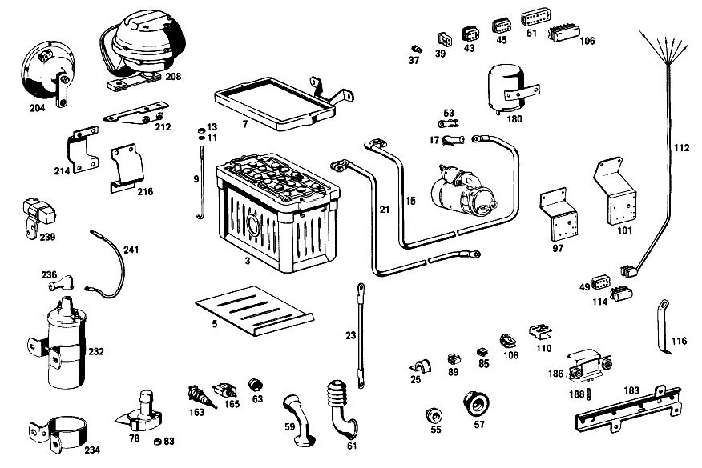

| № | Артикул | Название | Кол. | Примечание | Ограничение |
|---|---|---|---|---|---|
| 3 | A 003 541 33 01 | АКБ | 1 | ||
| 5 | A 110 541 06 35 | - Прокладка | 1 | [007] 010,10/50,12/52 FROM CHASSIS 048977 ALSO INSTALLED ON,SEE FOOTNOTE 078;010,20/60,22,62 FROM CHASSIS 049091 ALSO INSTALLED ON 046334,048382,048491 [078] 044859, 046394, 048273, 048278, 048347, 048349, 048366, 048379, 048460, 048481, 048493, 048510, 048905- 048913, 048915- 048928, 048930- 048933, 048935- 048937, 048940, 048942, 048952- 048954, 048956, 048966, 048968- 048973. [063] 010,10/50 UP TO CHASSIS 066175;010,12/52 UP TO CHASSIS 067208 EXCEPT FOR 067205;010,20/60 UP TO CHASSIS 065672;010,22/62 UP TO CHASSIS 068683 [065] 012,10/50 UP TO CHASSIS 151591 EXCEPT FOR,SEE FOOTNOTE 074;012,12/52 UP TO CHASSIS 153776 EXCEPT FOR 153758,153760,153771 [067] 012,20/60 UP TO CHASSIS 148879 EXCEPT FOR 148827,148837,148844,148850,148852;012,22/62 UP TO CHASSIS 158113 [068] NOT FOR USE WITH MERCEDES-BENZ HYDRAULIC-AUTOMATIC CLUTCH | |
| 5 | A 110 541 06 35 | - Прокладка | 1 | [092] 012,10/50,12/52 FROM CHASSIS 108750 ALSO INSTALLED ON,SEE FOOTNOTE 019;012,20/60/22/62 FROM CHASSIS 108278 ALSO INSTALLED ON 100012,107336,107754,108265 [019] 010 UP TO CHASSIS 032684;012 UP TO CHASSIS 069292 | |
| 7 | A 108 540 01 23 | - MOUNTING FRAME | 1 | [007] 010,10/50,12/52 FROM CHASSIS 048977 ALSO INSTALLED ON,SEE FOOTNOTE 078;010,20/60,22,62 FROM CHASSIS 049091 ALSO INSTALLED ON 046334,048382,048491 [078] 044859, 046394, 048273, 048278, 048347, 048349, 048366, 048379, 048460, 048481, 048493, 048510, 048905- 048913, 048915- 048928, 048930- 048933, 048935- 048937, 048940, 048942, 048952- 048954, 048956, 048966, 048968- 048973. [063] 010,10/50 UP TO CHASSIS 066175;010,12/52 UP TO CHASSIS 067208 EXCEPT FOR 067205;010,20/60 UP TO CHASSIS 065672;010,22/62 UP TO CHASSIS 068683 [065] 012,10/50 UP TO CHASSIS 151591 EXCEPT FOR,SEE FOOTNOTE 074;012,12/52 UP TO CHASSIS 153776 EXCEPT FOR 153758,153760,153771 [067] 012,20/60 UP TO CHASSIS 148879 EXCEPT FOR 148827,148837,148844,148850,148852;012,22/62 UP TO CHASSIS 158113 [068] NOT FOR USE WITH MERCEDES-BENZ HYDRAULIC-AUTOMATIC CLUTCH | |
| 7 | A 108 540 01 23 | MOUNTING FRAME | 1 | [092] 012,10/50,12/52 FROM CHASSIS 108750 ALSO INSTALLED ON,SEE FOOTNOTE 019;012,20/60/22/62 FROM CHASSIS 108278 ALSO INSTALLED ON 100012,107336,107754,108265 [019] 010 UP TO CHASSIS 032684;012 UP TO CHASSIS 069292 | |
| 9 | A 186 541 01 24 | Стяжный болт | 1 | [005] 010 FROM CHASSIS 032535;012 FROM CHASSIS 068866 | |
| 11 | A 094 990 68 10 | Пружинное кольцо | 2 | ||
| 13 | N 000934 006007 | Гайка | 2 | ||
| 15 | A 110 540 02 30 | ПЛЮС. ПРОВОД | 1 | [007] 010,10/50,12/52 FROM CHASSIS 048977 ALSO INSTALLED ON,SEE FOOTNOTE 078;010,20/60,22,62 FROM CHASSIS 049091 ALSO INSTALLED ON 046334,048382,048491 [078] 044859, 046394, 048273, 048278, 048347, 048349, 048366, 048379, 048460, 048481, 048493, 048510, 048905- 048913, 048915- 048928, 048930- 048933, 048935- 048937, 048940, 048942, 048952- 048954, 048956, 048966, 048968- 048973. [092] 012,10/50,12/52 FROM CHASSIS 108750 ALSO INSTALLED ON,SEE FOOTNOTE 019;012,20/60/22/62 FROM CHASSIS 108278 ALSO INSTALLED ON 100012,107336,107754,108265 [019] 010 UP TO CHASSIS 032684;012 UP TO CHASSIS 069292 | |
| 17 | A 111 546 00 35 | КОЛПАЧОК | - | ||
| 17 | A 116 546 01 35 | Защитный колпачок | 1 | ||
| 21 | A 110 540 06 31 | Электрический провод | 1 | FROM BATTERY TO SIDE MEMBER [060] 010,22/62 FROM CHASSIS 068553;012,22/62 FROM CHASSIS 157415 | |
| 23 | A 116 540 05 31 | Электрический провод | 1 | FROM SIDE MEMBER TO ENGINE [060] 010,22/62 FROM CHASSIS 068553;012,22/62 FROM CHASSIS 157415 | |
| 25 | A 187 995 00 37 | хомут | 1 | STARTING CABLE AND GROUND CABLES TO FIRE WALL AND TO WHEELHOUSE PANEL [402] БОЛЬШЕ НЕ ПОСТАВЛЯЕТСЯ | |
| 37 | A 000 545 47 28 | - Сцепление, механическое | - | ||
| 37 | A 004 545 85 28 | - ШТЕКЕР | - | ||
| 37 | A 008 545 20 28 | - Нижняя часть корпуса | 2 | ОДНОКОНТАКТ.; 1\-PIN | |
| 39 | A 002 545 49 28 | - ШТЕКЕР | - | ||
| 43 | A 000 545 32 28 | - ШТЕКЕР | 6 | ЧЕТЫРЁХПОЛЮСНЫЙ | |
| 43 | A 000 545 32 28 | - ШТЕКЕР | 1 | Коробка передач | |
| 43 | A 000 545 32 28 | - ШТЕКЕР | 1 | Коробка передач [069] ONLY FOR USE WITH MERCEDES-BENZ HYDRAULIC-AUTOMATIC CLUTCH | |
| 45 | A 005 545 13 28 | - ШТЕКЕР | - | ||
| 49 | A 002 545 40 28 | - ШТЕКЕР | - | ||
| 51 | A 000 545 36 28 | ШТЕКЕР | 2 | 12\-КОНТАКТН. | |
| 53 | A 000 546 35 40 | - КАБЕЛЬНЫЙ НАКОНЕЧНИК | 1 | Стартер | |
| 55 | A 111 997 01 81 | - втулка | 1 | ПРОВОД ФАРЫ ЗАДН. ХОДА Рулевое управление: Влево | |
| 57 | A 111 997 13 81 | - резиновая втулка | 1 | Рулевое управление: Влево | |
| 59 | A 110 546 00 85 | - Защитная труба | 2 | [017] 010 UP TO CHASSIS 038550;012 UP TO CHASSIS 082858 | |
| 59 | A 110 546 00 85 | Защитная труба | 1 | [018] 010 FROM CHASSIS 038551;012 FROM CHASSIS 082859 | |
| 61 | A 115 546 00 85 | - Защитная труба | 1 | [018] 010 FROM CHASSIS 038551;012 FROM CHASSIS 082859 | |
| 63 | A 000 544 04 86 | - ШТЕКЕР | 2 | ФАРА | |
| 65 | A 111 545 00 19 | - ПАТРОН | 1 | УКАЗАТЕЛЬ ПЕРЕДАЧИ Автоматическая коробка переключения передач [068] NOT FOR USE WITH MERCEDES-BENZ HYDRAULIC-AUTOMATIC CLUTCH | |
| 65 | A 111 545 00 19 | - ПАТРОН | 1 | HAND BRAKE TELL\-TALE LAMP Коробка передач [014] 010 FROM CHASSIS 031585 ALSO INSTALLED ON,SEE FOOTNOTE 088;012 FROM CHASSIS 066813 EXCEPT FOR,SEE FOOTNOTE 089 [088] 031455, 031458, 031461- 031464, 031466, 031467, 031469- 031472, 031474, 031475, 031478, 031479, 031481, 031482, 031484- 031497, 031499- 031517, 031519- 031523, 031525- 031552, 031554- 031583. [089] 066430, 666456, 066464, 066467, 066475, 066477- 066482, 066485- 066488, 066490, 066492- 066494, 066496- 066498, 066501, 066503- 066509, 066511- 066517, 066519- 066521, 066524- 066538, 066540, 066542, 066546- 066549, 066551, 066552, 066554- 066557, 066560, 066561, 066563- 066587, 066589, 066591- 066594, 066596- 066605, 066607, 066608, 066610- 066630, 066632- 066652, 066654- 066666, 066668- 066693, 066695- 066707, 066709- 066731, 066734- 066744, 066749- 066778, 066780- 066802, 066805- 066811. [069] ONLY FOR USE WITH MERCEDES-BENZ HYDRAULIC-AUTOMATIC CLUTCH | |
| 67 | A 111 540 00 50 | - БЛОК ПРЕДОХРАНИТЕЛЕЙ | 1 | ||
| 69 | A 000 545 10 03 | - Крышка | 1 | ||
| 71 | A 000 545 01 80 | - уплотнение | 1 | ||
| 73 | A 000 545 02 80 | - ПРОКЛАДКА УПЛОТНИТЕЛЬНАЯ | 1 | ||
| 75 | A 110 540 02 58 | - ПЕРЕКЛЮЧАТЕЛЬ СВЕТА | - | ||
| 78 | A 000 545 11 12 | - ВЫКЛЮЧАТЕЛЬ | 1 | (FOOT DIMMER SWITCH) | |
| 83 | A 110 987 06 41 | КОЛЬЦО РЕЗИНОВОЕ | 2 | FOOT DIMMER SWITCH TO TOEBOARD Рулевое управление: Влево [402] БОЛЬШЕ НЕ ПОСТАВЛЯЕТСЯ [020] 010 FROM CHASSIS 032685;012 FROM CHASSIS 069293 | |
| 85 | A 002 988 01 78 | Скоба | 2 | BACK\-UP LIGHT SWITCH CABLE TO TOEBOARD | |
| 89 | A 000 990 22 91 | ГАЙКОДЕРЖАТЕЛЬ | - | ||
| 89 | A 001 990 67 91 | Гайкодержатель | 3 | MAIN CABLE HARNESS AND STARTING CABLE TO FIRE WALL | |
| 93 | A 112 540 11 73 | ДЕРЖАТЕЛЬ | 2 | MAIN CABLE HARNESS TO CROSS STRUT AT INSTRUMENT PANEL OR JACKET TUBE,RESP. Рулевое управление: Влево | |
| 93 | A 112 540 11 73 | ДЕРЖАТЕЛЬ | 5 | MAIN CABLE HARNESS TO CROSS STRUT AT INSTRUMENT PANEL OR JACKET TUBE,RESP. Рулевое управление: ВправоКоробка передач | |
| 93 | A 112 540 11 73 | ДЕРЖАТЕЛЬ | 6 | MAIN CABLE HARNESS TO CROSS STRUT AT INSTRUMENT PANEL OR JACKET TUBE,RESP. Рулевое управление: ВправоАвтоматическая коробка переключения передач [068] NOT FOR USE WITH MERCEDES-BENZ HYDRAULIC-AUTOMATIC CLUTCH | |
| 97 | A 110 540 03 73 | ДЕРЖАТЕЛЬ | 1 | СОЕДИНЕНИЕ ШТЕКЕРНОЕ Рулевое управление: Влево | |
| 101 | A 110 540 04 73 | ДЕРЖАТЕЛЬ | 1 | СОЕДИНЕНИЕ ШТЕКЕРНОЕ Рулевое управление: Вправо | |
| 106 | A 000 545 37 28 | - ШТЕКЕР | 1 | 12\-КОНТАКТН. | |
| 108 | A 002 988 08 78 | Скоба | 2 | TAIL LAM CABLE HARNESS TO FIRE WALL [022] 010 UP TO CHASSIS 054945;012 UP TO CHASSIS 120609 | |
| 110 | A 002 988 48 78 | Скоба | 1 | для PLUG CONNECTION OF BACK\-UP LAMPS TO FRONT PANEL | |
| 112 | A 111 540 00 09 | ЖГУТ ЭЛ.-ПРОВОДКИ | 1 | IN JACKET TUBE Рулевое управление: ВлевоКоробка передач [010] 010 FROM CHASSIS 009956;012 FROM CHASSIS 020576 | |
| 112 | A 111 540 00 09 | ЖГУТ ЭЛ.-ПРОВОДКИ | 1 | IN JACKET TUBE Рулевое управление: ВправоКоробка передач [016] 010 FROM CHASSIS 009231;012 FROM CHASSIS 019272 | |
| 112 | A 111 540 00 09 | ЖГУТ ЭЛ.-ПРОВОДКИ | 1 | IN JACKET TUBE Автоматическая коробка переключения передач [068] NOT FOR USE WITH MERCEDES-BENZ HYDRAULIC-AUTOMATIC CLUTCH | |
| 114 | A 000 545 53 28 | - ШТЕКЕР | 1 | СЕМИПОЛЮСНЫЙ Рулевое управление: ВлевоКоробка передач [402] БОЛЬШЕ НЕ ПОСТАВЛЯЕТСЯ [010] 010 FROM CHASSIS 009956;012 FROM CHASSIS 020576 | |
| 114 | A 000 545 53 28 | ШТЕКЕР | 1 | Рулевое управление: ВправоКоробка передач [402] БОЛЬШЕ НЕ ПОСТАВЛЯЕТСЯ [016] 010 FROM CHASSIS 009231;012 FROM CHASSIS 019272 | |
| 114 | A 000 545 53 28 | ШТЕКЕР | 1 | Автоматическая коробка переключения передач [068] NOT FOR USE WITH MERCEDES-BENZ HYDRAULIC-AUTOMATIC CLUTCH [402] БОЛЬШЕ НЕ ПОСТАВЛЯЕТСЯ | |
| 116 | A 112 545 02 40 | ДЕРЖАТЕЛЬ | 1 | для CABLE TO GENERATOR Рулевое управление: Вправо [007] 010,10/50,12/52 FROM CHASSIS 048977 ALSO INSTALLED ON,SEE FOOTNOTE 078;010,20/60,22,62 FROM CHASSIS 049091 ALSO INSTALLED ON 046334,048382,048491 [078] 044859, 046394, 048273, 048278, 048347, 048349, 048366, 048379, 048460, 048481, 048493, 048510, 048905- 048913, 048915- 048928, 048930- 048933, 048935- 048937, 048940, 048942, 048952- 048954, 048956, 048966, 048968- 048973. [063] 010,10/50 UP TO CHASSIS 066175;010,12/52 UP TO CHASSIS 067208 EXCEPT FOR 067205;010,20/60 UP TO CHASSIS 065672;010,22/62 UP TO CHASSIS 068683 [067] 012,20/60 UP TO CHASSIS 148879 EXCEPT FOR 148827,148837,148844,148850,148852;012,22/62 UP TO CHASSIS 158113 [068] NOT FOR USE WITH MERCEDES-BENZ HYDRAULIC-AUTOMATIC CLUTCH [092] 012,10/50,12/52 FROM CHASSIS 108750 ALSO INSTALLED ON,SEE FOOTNOTE 019;012,20/60/22/62 FROM CHASSIS 108278 ALSO INSTALLED ON 100012,107336,107754,108265 [019] 010 UP TO CHASSIS 032684;012 UP TO CHASSIS 069292 | |
| 124 | A 111 542 49 01 | КОМБИНАЦИЯ ПРИБОРОВ | - | ||
| 124 | A 004 542 39 06 | СПИДОМЕТР | 1 | С КИЛОМЕТР.ШКАЛОЙ [029] 10/50,12/52 FROM CHASSIS 056110;20/60,22,62 FROM CHASSIS 057429 | |
| 132 | A 004 542 31 06 | - СПИДОМЕТР | 1 | [024] 10/50,12/52 UP TO CHASSIS 052549;20/60,22/62 UP TO CHASSIS 055143 | |
| 137 | A 001 542 07 02 | - МАНОМЕТР МАСЛА | 1 | GRADUATION IN KG/CM2 | |
| 139 | A 002 542 15 05 | - ТЕЛЕТЕРМОМЕТР | 1 | CENTIGRADE SCALE;CAPILLARY TUBE LENGHT: 1550 MM | |
| 141 | A 000 542 68 03 | - ИЗМЕРИТЕЛЬ ТОПЛИВА | 1 | ||
| 143 | A 000 542 03 25 | - ВЫКЛЮЧАТЕЛЬ РЕГУЛИРОВОЧН. | 1 | ||
| 146 | A 000 997 24 81 | Проходная втулка | 1 | КОМБИНАЦИЯ ПРИБОРОВ | |
| 148 | N 000315 008000 | Гайка | 1 | КОМБИНАЦИЯ ПРИБОРОВ | |
| 151 | A 121 540 01 59 | ШЛАНГ | 1 | OIL PRESSURE GAUGE LINE | |
| 153 | A 110 540 02 60 | ЭЛ. ПРОВОД | 1 | МАНОМЕТР МАСЛА Рулевое управление: Влево [007] 010,10/50,12/52 FROM CHASSIS 048977 ALSO INSTALLED ON,SEE FOOTNOTE 078;010,20/60,22,62 FROM CHASSIS 049091 ALSO INSTALLED ON 046334,048382,048491 [078] 044859, 046394, 048273, 048278, 048347, 048349, 048366, 048379, 048460, 048481, 048493, 048510, 048905- 048913, 048915- 048928, 048930- 048933, 048935- 048937, 048940, 048942, 048952- 048954, 048956, 048966, 048968- 048973. [092] 012,10/50,12/52 FROM CHASSIS 108750 ALSO INSTALLED ON,SEE FOOTNOTE 019;012,20/60/22/62 FROM CHASSIS 108278 ALSO INSTALLED ON 100012,107336,107754,108265 [019] 010 UP TO CHASSIS 032684;012 UP TO CHASSIS 069292 | |
| 156 | A 111 997 05 81 | резиновая втулка | 1 | OIL PRESSURE GAUGE LINE THRU FIRE WALL Рулевое управление: Влево | |
| 159 | A 111 542 04 11 | ЧАСЫ | 1 | ||
| 161 | A 110 542 01 38 | ПОДКЛАДКА | 1 | для CLOCK | |
| 163 | A 000 545 15 25 | РОЗЕТКА | 1 | ЛАМПА РУЧНАЯ [402] БОЛЬШЕ НЕ ПОСТАВЛЯЕТСЯ | |
| 165 | A 000 545 30 09 | ВЫКЛЮЧАТЕЛЬ | 1 | TO SWITCH OFF WARNING LAMP [002] 010,10/50,20/60 WITH MERCEDES-BENZ HYDRAULIC-AUTOMATIC CLUTCH FROM CHASSIS 017604 ALSO INSTALLED ON,SEE FOOTNOTE 072 [072] 017259, 017569, 017573, 017576- 017582, 017584- 017590, 017592- 017594, 017596- 017602. [090] 012,10/50,20/60 WITH MERCEDES-BENZ HYDRAULIC-AUTOMATIC CLUTCH FROM CHASSIS 036826 ALSO INSTALLED ON,SEE FOOTNOTE 073 [073] 035451, 036003- 036005, 036007- 036009, 036011- 036020, 036022- 036025, 036027- 036054, 036056- 036070, 036072- 036085, 036087- 036115, 036117- 036139, 036141- 036624, 036626- 036633, 036635, 036636, 036639, 036641, 036646, 036648- 036650, 036654, 036657, 036661, 036666, 036668, 036670- 036672, 036675, 036684, 036693, 036694, 036709, 036725, 036728, 036731, 036736, 036743, 036748, 036751. [069] ONLY FOR USE WITH MERCEDES-BENZ HYDRAULIC-AUTOMATIC CLUTCH | |
| 170 | A 000 545 35 09 | Переключатель | 1 | СТОП\-СИГНАЛ [007] 010,10/50,12/52 FROM CHASSIS 048977 ALSO INSTALLED ON,SEE FOOTNOTE 078;010,20/60,22,62 FROM CHASSIS 049091 ALSO INSTALLED ON 046334,048382,048491 [078] 044859, 046394, 048273, 048278, 048347, 048349, 048366, 048379, 048460, 048481, 048493, 048510, 048905- 048913, 048915- 048928, 048930- 048933, 048935- 048937, 048940, 048942, 048952- 048954, 048956, 048966, 048968- 048973. [092] 012,10/50,12/52 FROM CHASSIS 108750 ALSO INSTALLED ON,SEE FOOTNOTE 019;012,20/60/22/62 FROM CHASSIS 108278 ALSO INSTALLED ON 100012,107336,107754,108265 [019] 010 UP TO CHASSIS 032684;012 UP TO CHASSIS 069292 | |
| 172 | A 111 990 09 40 | Диск | 1 | ПО НЕОБХОДИМОСТИ 0.5mm [043] 010,10/50,12/52 UP TO CHASSIS 061125;20/60,22/62 UP TO CHASSIS 060111;012,10/50,12/52 UP TO CHASSIS 135878;20/60,22/62 UP TO CHASSIS 134287 | |
| 174 | N 006797 012251 | Зубчатая шайба | 1 | MECHANICAL STOP LIGHT SWITCH TO PEDAL ASSEMBLY | |
| 176 | A 000 990 92 51 | гайка | 1 | MECHANICAL STOP LIGHT SWITCH TO PEDAL ASSEMBLY | |
| 180 | A 000 544 60 32 | ДАТЧИК | 1 | ДАЛЬНИЙ СВЕТ Рулевое управление: ВлевоКоробка передач [009] 010 UP TO CHASSIS 009955;012 UP TO CHASSIS 020575 [096] NOT FOR U.S.A.,AUSTRIA AND PORTUGAL | |
| 180 | A 000 544 60 32 | ДАТЧИК | 1 | Рулевое управление: ВправоКоробка передач [015] 010 UP TO CHASSIS 009230;012 UP TO CHASSIS 019271 | |
| 183 | A 110 545 01 40 | ДЕРЖАТЕЛЬ | 1 | BRIGHT LIGHT SENDER UNIT TO FIRE WALL Коробка передач [013] 010 UP TO CHASSIS 031584 EXCEPT FOR,SEE FOOTNOTE 088;012 UP TO CHASSIS 066812 EXCEPT FOR,SEE FOOTNOTE 089 [088] 031455, 031458, 031461- 031464, 031466, 031467, 031469- 031472, 031474, 031475, 031478, 031479, 031481, 031482, 031484- 031497, 031499- 031517, 031519- 031523, 031525- 031552, 031554- 031583. [089] 066430, 666456, 066464, 066467, 066475, 066477- 066482, 066485- 066488, 066490, 066492- 066494, 066496- 066498, 066501, 066503- 066509, 066511- 066517, 066519- 066521, 066524- 066538, 066540, 066542, 066546- 066549, 066551, 066552, 066554- 066557, 066560, 066561, 066563- 066587, 066589, 066591- 066594, 066596- 066605, 066607, 066608, 066610- 066630, 066632- 066652, 066654- 066666, 066668- 066693, 066695- 066707, 066709- 066731, 066734- 066744, 066749- 066778, 066780- 066802, 066805- 066811. | |
| 186 | A 000 542 58 19 | Контактор | 1 | Коробка передач [069] ONLY FOR USE WITH MERCEDES-BENZ HYDRAULIC-AUTOMATIC CLUTCH [045] ON SPECIAL REQUEST,OVERTAKING LIGHT SIGNAL SYSTEM FOR VEHICLES EXPORTED TO AUSTRIA AND TO PORTUGAL | |
| 186 | A 000 542 58 19 | Контактор | 1 | Рулевое управление: ВлевоКоробка передач [009] 010 UP TO CHASSIS 009955;012 UP TO CHASSIS 020575 | |
| 186 | A 000 542 58 19 | Контактор | 1 | Рулевое управление: ВправоКоробка передач [015] 010 UP TO CHASSIS 009230;012 UP TO CHASSIS 019271 | |
| 188 | A 003 545 26 26 | Контактная втулка | 1 | 0.35\-4.0 MM2 RK4 Рулевое управление: ВлевоКоробка передач [009] 010 UP TO CHASSIS 009955;012 UP TO CHASSIS 020575 [045] ON SPECIAL REQUEST,OVERTAKING LIGHT SIGNAL SYSTEM FOR VEHICLES EXPORTED TO AUSTRIA AND TO PORTUGAL | |
| 188 | A 003 545 26 26 | Контактная втулка | 1 | 0.35\-4.0 MM2 RK4 Рулевое управление: ВправоКоробка передач [015] 010 UP TO CHASSIS 009230;012 UP TO CHASSIS 019271 | |
| 196 | A 110 542 10 07 | ВАЛ ГИБКИЙ | 1 | 1580 MM Рулевое управление: ВлевоКоробка передач [068] NOT FOR USE WITH MERCEDES-BENZ HYDRAULIC-AUTOMATIC CLUTCH [049] 010 FROM CHASSIS 056110;012 FROM CHASSIS 120600 | |
| 200 | A 111 542 07 40 | ДЕРЖАТЕЛЬ | 1 | AT FORKED SUPPORT,BOTTOM,LEFT,FRONT для FLEXIBLE SHAFT Рулевое управление: Влево [053] 010 UP TO CHASSIS 040533;012 UP TO CHASSIS 087418 | |
| 202 | A 136 997 00 81 | КАБ. ВТУЛКА | - | Рулевое управление: Влево | |
| 202 | A 183 997 00 81 | втулка | 1 | FLEXIBLE SHAFT THRU FIRE WALL Рулевое управление: Влево [068] NOT FOR USE WITH MERCEDES-BENZ HYDRAULIC-AUTOMATIC CLUTCH [092] 012,10/50,12/52 FROM CHASSIS 108750 ALSO INSTALLED ON,SEE FOOTNOTE 019;012,20/60/22/62 FROM CHASSIS 108278 ALSO INSTALLED ON 100012,107336,107754,108265 [019] 010 UP TO CHASSIS 032684;012 UP TO CHASSIS 069292 | |
| 204 | A 001 542 38 20 | ЗВУКОВОЙ СИГНАЛ | - | ||
| 208 | A 001 542 54 20 | ЗВУКОВОЙ СИГНАЛ | 1 | [054] ON SPECIAL REQUEST,DOUBLE TONE HORN | |
| 212 | A 110 540 08 73 | ДЕРЖАТЕЛЬ | 1 | для HORN | |
| 214 | A 111 524 02 40 | ДЕРЖАТЕЛЬ | 1 | для HORN [007] 010,10/50,12/52 FROM CHASSIS 048977 ALSO INSTALLED ON,SEE FOOTNOTE 078;010,20/60,22,62 FROM CHASSIS 049091 ALSO INSTALLED ON 046334,048382,048491 [078] 044859, 046394, 048273, 048278, 048347, 048349, 048366, 048379, 048460, 048481, 048493, 048510, 048905- 048913, 048915- 048928, 048930- 048933, 048935- 048937, 048940, 048942, 048952- 048954, 048956, 048966, 048968- 048973. [068] NOT FOR USE WITH MERCEDES-BENZ HYDRAULIC-AUTOMATIC CLUTCH [054] ON SPECIAL REQUEST,DOUBLE TONE HORN [056] 010 FROM CHASSIS 049085;012 FROM CHASSIS 108955 | |
| 216 | A 110 542 07 40 | ДЕРЖАТЕЛЬ | 1 | для HORN [068] NOT FOR USE WITH MERCEDES-BENZ HYDRAULIC-AUTOMATIC CLUTCH [054] ON SPECIAL REQUEST,DOUBLE TONE HORN [056] 010 FROM CHASSIS 049085;012 FROM CHASSIS 108955 | |
| 220 | A 001 545 00 11 | ВЫКЛЮЧАТЕЛЬ | 1 | [054] ON SPECIAL REQUEST,DOUBLE TONE HORN | |
| 222 | A 110 540 09 83 | РУЧКА | 1 | PUSH\-PULL THROW\-OVER SWITCH [054] ON SPECIAL REQUEST,DOUBLE TONE HORN | |
| 224 | A 111 545 03 40 | ДЕРЖАТЕЛЬ | 1 | PUSH\-PULL THROW\-OVER SWITCH [054] ON SPECIAL REQUEST,DOUBLE TONE HORN | |
| 226 | N 072586 001200 | Соединитель проводов | 1 | 3\-КОНТАКТ. [054] ON SPECIAL REQUEST,DOUBLE TONE HORN | |
| 232 | A 000 158 49 03 | Катушка зажигания | 1 | ||
| 234 | A 000 158 02 40 | - ДЕРЖАТЕЛЬ | 1 | [402] БОЛЬШЕ НЕ ПОСТАВЛЯЕТСЯ | |
| 236 | A 000 546 33 35 | Защитный колпачок | 2 | ||
| 239 | A 000 158 49 03 | Катушка зажигания | 1 | Рулевое управление: ВлевоКоробка передач [010] 010 FROM CHASSIS 009956;012 FROM CHASSIS 020576 | |
| 239 | A 000 158 49 03 | Катушка зажигания | 1 | Рулевое управление: ВправоКоробка передач [016] 010 FROM CHASSIS 009231;012 FROM CHASSIS 019272 | |
| 239 | A 000 158 49 03 | Катушка зажигания | 1 | Автоматическая коробка переключения передач [068] NOT FOR USE WITH MERCEDES-BENZ HYDRAULIC-AUTOMATIC CLUTCH | |
| 241 | A 108 546 00 03 | Электрический провод | 1 | FROM SERIES RESISTOR TO IGNITION COIL [007] 010,10/50,12/52 FROM CHASSIS 048977 ALSO INSTALLED ON,SEE FOOTNOTE 078;010,20/60,22,62 FROM CHASSIS 049091 ALSO INSTALLED ON 046334,048382,048491 [078] 044859, 046394, 048273, 048278, 048347, 048349, 048366, 048379, 048460, 048481, 048493, 048510, 048905- 048913, 048915- 048928, 048930- 048933, 048935- 048937, 048940, 048942, 048952- 048954, 048956, 048966, 048968- 048973. [068] NOT FOR USE WITH MERCEDES-BENZ HYDRAULIC-AUTOMATIC CLUTCH [092] 012,10/50,12/52 FROM CHASSIS 108750 ALSO INSTALLED ON,SEE FOOTNOTE 019;012,20/60/22/62 FROM CHASSIS 108278 ALSO INSTALLED ON 100012,107336,107754,108265 [019] 010 UP TO CHASSIS 032684;012 UP TO CHASSIS 069292 | |
| 243 | A 000 545 99 24 | ВЫКЛЮЧАТЕЛЬ АВТОМ. | 1 | AT REAR AXLE SUSPENSION,CENTER,TOP Коробка передач [069] ONLY FOR USE WITH MERCEDES-BENZ HYDRAULIC-AUTOMATIC CLUTCH | |
| 245 | A 000 545 02 38 | - ФИТИНГ | 1 | Коробка передач [069] ONLY FOR USE WITH MERCEDES-BENZ HYDRAULIC-AUTOMATIC CLUTCH | |
| 247 | A 000 545 00 78 | - ВАЛ | 1 | Коробка передач [069] ONLY FOR USE WITH MERCEDES-BENZ HYDRAULIC-AUTOMATIC CLUTCH | |
| 249 | A 000 545 00 97 | - ПРУЖИНА | 1 | Коробка передач [069] ONLY FOR USE WITH MERCEDES-BENZ HYDRAULIC-AUTOMATIC CLUTCH | |
| 255 | A 180 150 10 50 | ГЕНЕРАТОР | 1 | 300 W [063] 010,10/50 UP TO CHASSIS 066175;010,12/52 UP TO CHASSIS 067208 EXCEPT FOR 067205;010,20/60 UP TO CHASSIS 065672;010,22/62 UP TO CHASSIS 068683 [065] 012,10/50 UP TO CHASSIS 151591 EXCEPT FOR,SEE FOOTNOTE 074;012,12/52 UP TO CHASSIS 153776 EXCEPT FOR 153758,153760,153771 [067] 012,20/60 UP TO CHASSIS 148879 EXCEPT FOR 148827,148837,148844,148850,148852;012,22/62 UP TO CHASSIS 158113 | |
| 257 | A 000 154 01 93 | - ПРУЖИНА | 4 | УГОЛЬНАЯ ЩЕТКА [063] 010,10/50 UP TO CHASSIS 066175;010,12/52 UP TO CHASSIS 067208 EXCEPT FOR 067205;010,20/60 UP TO CHASSIS 065672;010,22/62 UP TO CHASSIS 068683 [065] 012,10/50 UP TO CHASSIS 151591 EXCEPT FOR,SEE FOOTNOTE 074;012,12/52 UP TO CHASSIS 153776 EXCEPT FOR 153758,153760,153771 [067] 012,20/60 UP TO CHASSIS 148879 EXCEPT FOR 148827,148837,148844,148850,148852;012,22/62 UP TO CHASSIS 158113 | |
| 259 | A 189 155 00 15 | - ШКИВ | 1 | [063] 010,10/50 UP TO CHASSIS 066175;010,12/52 UP TO CHASSIS 067208 EXCEPT FOR 067205;010,20/60 UP TO CHASSIS 065672;010,22/62 UP TO CHASSIS 068683 [065] 012,10/50 UP TO CHASSIS 151591 EXCEPT FOR,SEE FOOTNOTE 074;012,12/52 UP TO CHASSIS 153776 EXCEPT FOR 153758,153760,153771 [067] 012,20/60 UP TO CHASSIS 148879 EXCEPT FOR 148827,148837,148844,148850,148852;012,22/62 UP TO CHASSIS 158113 | |
| 261 | N 006888 004002 | - Сегментная шпонка | 1 | [063] 010,10/50 UP TO CHASSIS 066175;010,12/52 UP TO CHASSIS 067208 EXCEPT FOR 067205;010,20/60 UP TO CHASSIS 065672;010,22/62 UP TO CHASSIS 068683 [065] 012,10/50 UP TO CHASSIS 151591 EXCEPT FOR,SEE FOOTNOTE 074;012,12/52 UP TO CHASSIS 153776 EXCEPT FOR 153758,153760,153771 [067] 012,20/60 UP TO CHASSIS 148879 EXCEPT FOR 148827,148837,148844,148850,148852;012,22/62 UP TO CHASSIS 158113 | |
| 263 | A 127 990 02 40 | - ШАЙБА | 1 | [063] 010,10/50 UP TO CHASSIS 066175;010,12/52 UP TO CHASSIS 067208 EXCEPT FOR 067205;010,20/60 UP TO CHASSIS 065672;010,22/62 UP TO CHASSIS 068683 [065] 012,10/50 UP TO CHASSIS 151591 EXCEPT FOR,SEE FOOTNOTE 074;012,12/52 UP TO CHASSIS 153776 EXCEPT FOR 153758,153760,153771 [067] 012,20/60 UP TO CHASSIS 148879 EXCEPT FOR 148827,148837,148844,148850,148852;012,22/62 UP TO CHASSIS 158113 [402] БОЛЬШЕ НЕ ПОСТАВЛЯЕТСЯ | |
| 265 | N 912004 014100 | - Пружинное кольцо | 1 | [063] 010,10/50 UP TO CHASSIS 066175;010,12/52 UP TO CHASSIS 067208 EXCEPT FOR 067205;010,20/60 UP TO CHASSIS 065672;010,22/62 UP TO CHASSIS 068683 [065] 012,10/50 UP TO CHASSIS 151591 EXCEPT FOR,SEE FOOTNOTE 074;012,12/52 UP TO CHASSIS 153776 EXCEPT FOR 153758,153760,153771 [067] 012,20/60 UP TO CHASSIS 148879 EXCEPT FOR 148827,148837,148844,148850,148852;012,22/62 UP TO CHASSIS 158113 | |
| 267 | N 000936 014005 | - ГАЙКА | 1 | [063] 010,10/50 UP TO CHASSIS 066175;010,12/52 UP TO CHASSIS 067208 EXCEPT FOR 067205;010,20/60 UP TO CHASSIS 065672;010,22/62 UP TO CHASSIS 068683 [065] 012,10/50 UP TO CHASSIS 151591 EXCEPT FOR,SEE FOOTNOTE 074;012,12/52 UP TO CHASSIS 153776 EXCEPT FOR 153758,153760,153771 [067] 012,20/60 UP TO CHASSIS 148879 EXCEPT FOR 148827,148837,148844,148850,148852;012,22/62 UP TO CHASSIS 158113 | |
| 269 | A 180 155 11 35 | КРОНШТЕЙН | 1 | для GENERATOR [063] 010,10/50 UP TO CHASSIS 066175;010,12/52 UP TO CHASSIS 067208 EXCEPT FOR 067205;010,20/60 UP TO CHASSIS 065672;010,22/62 UP TO CHASSIS 068683 [065] 012,10/50 UP TO CHASSIS 151591 EXCEPT FOR,SEE FOOTNOTE 074;012,12/52 UP TO CHASSIS 153776 EXCEPT FOR 153758,153760,153771 [067] 012,20/60 UP TO CHASSIS 148879 EXCEPT FOR 148827,148837,148844,148850,148852;012,22/62 UP TO CHASSIS 158113 | |
| 273 | A 180 155 05 53 | РАСПОРН. ТРУБКА | 1 | CLAMPING PIECE TO GENERATOR [063] 010,10/50 UP TO CHASSIS 066175;010,12/52 UP TO CHASSIS 067208 EXCEPT FOR 067205;010,20/60 UP TO CHASSIS 065672;010,22/62 UP TO CHASSIS 068683 [065] 012,10/50 UP TO CHASSIS 151591 EXCEPT FOR,SEE FOOTNOTE 074;012,12/52 UP TO CHASSIS 153776 EXCEPT FOR 153758,153760,153771 [067] 012,20/60 UP TO CHASSIS 148879 EXCEPT FOR 148827,148837,148844,148850,148852;012,22/62 UP TO CHASSIS 158113 [402] БОЛЬШЕ НЕ ПОСТАВЛЯЕТСЯ | |
| 275 | N 000931 008046 | Винт | - | ||
| 275 | N 304017 008018 | Винт с 6-гранной головкой | 1 | CLAMPING PIECE TO GENERATOR; M8X35 [063] 010,10/50 UP TO CHASSIS 066175;010,12/52 UP TO CHASSIS 067208 EXCEPT FOR 067205;010,20/60 UP TO CHASSIS 065672;010,22/62 UP TO CHASSIS 068683 [065] 012,10/50 UP TO CHASSIS 151591 EXCEPT FOR,SEE FOOTNOTE 074;012,12/52 UP TO CHASSIS 153776 EXCEPT FOR 153758,153760,153771 [067] 012,20/60 UP TO CHASSIS 148879 EXCEPT FOR 148827,148837,148844,148850,148852;012,22/62 UP TO CHASSIS 158113 | |
| 277 | A 001 156 46 01 | КОНДЕНСАТОР | 1 | НА ГЕНЕРАТОРЕ, КЛЕММА D\+ [402] БОЛЬШЕ НЕ ПОСТАВЛЯЕТСЯ [063] 010,10/50 UP TO CHASSIS 066175;010,12/52 UP TO CHASSIS 067208 EXCEPT FOR 067205;010,20/60 UP TO CHASSIS 065672;010,22/62 UP TO CHASSIS 068683 [065] 012,10/50 UP TO CHASSIS 151591 EXCEPT FOR,SEE FOOTNOTE 074;012,12/52 UP TO CHASSIS 153776 EXCEPT FOR 153758,153760,153771 [067] 012,20/60 UP TO CHASSIS 148879 EXCEPT FOR 148827,148837,148844,148850,148852;012,22/62 UP TO CHASSIS 158113 | |
| 279 | A 001 154 47 06 | РЕГУЛЯТОР | 1 | 300 W [402] БОЛЬШЕ НЕ ПОСТАВЛЯЕТСЯ [063] 010,10/50 UP TO CHASSIS 066175;010,12/52 UP TO CHASSIS 067208 EXCEPT FOR 067205;010,20/60 UP TO CHASSIS 065672;010,22/62 UP TO CHASSIS 068683 [065] 012,10/50 UP TO CHASSIS 151591 EXCEPT FOR,SEE FOOTNOTE 074;012,12/52 UP TO CHASSIS 153776 EXCEPT FOR 153758,153760,153771 [067] 012,20/60 UP TO CHASSIS 148879 EXCEPT FOR 148827,148837,148844,148850,148852;012,22/62 UP TO CHASSIS 158113 | |
| 281 | A 001 156 46 01 | КОНДЕНСАТОР | 1 | КЛЕММА 61 [402] БОЛЬШЕ НЕ ПОСТАВЛЯЕТСЯ [063] 010,10/50 UP TO CHASSIS 066175;010,12/52 UP TO CHASSIS 067208 EXCEPT FOR 067205;010,20/60 UP TO CHASSIS 065672;010,22/62 UP TO CHASSIS 068683 [065] 012,10/50 UP TO CHASSIS 151591 EXCEPT FOR,SEE FOOTNOTE 074;012,12/52 UP TO CHASSIS 153776 EXCEPT FOR 153758,153760,153771 [067] 012,20/60 UP TO CHASSIS 148879 EXCEPT FOR 148827,148837,148844,148850,148852;012,22/62 UP TO CHASSIS 158113 | |
| 283 | A 000 156 74 01 | КОНДЕНСАТОР | 1 | КЛЕММА DF [063] 010,10/50 UP TO CHASSIS 066175;010,12/52 UP TO CHASSIS 067208 EXCEPT FOR 067205;010,20/60 UP TO CHASSIS 065672;010,22/62 UP TO CHASSIS 068683 [065] 012,10/50 UP TO CHASSIS 151591 EXCEPT FOR,SEE FOOTNOTE 074;012,12/52 UP TO CHASSIS 153776 EXCEPT FOR 153758,153760,153771 [067] 012,20/60 UP TO CHASSIS 148879 EXCEPT FOR 148827,148837,148844,148850,148852;012,22/62 UP TO CHASSIS 158113 | |
| 285 | A 000 156 76 01 | КОНДЕНСАТОР | 1 | КЛЕММА 51 [063] 010,10/50 UP TO CHASSIS 066175;010,12/52 UP TO CHASSIS 067208 EXCEPT FOR 067205;010,20/60 UP TO CHASSIS 065672;010,22/62 UP TO CHASSIS 068683 [065] 012,10/50 UP TO CHASSIS 151591 EXCEPT FOR,SEE FOOTNOTE 074;012,12/52 UP TO CHASSIS 153776 EXCEPT FOR 153758,153760,153771 [067] 012,20/60 UP TO CHASSIS 148879 EXCEPT FOR 148827,148837,148844,148850,148852;012,22/62 UP TO CHASSIS 158113 | |
| 287 | A 000 156 45 10 | ЭКРАНИРОВАННЫЙ ШТЕКЕР | 7 | РАСПРЕДЕЛИТЕЛЬ ЗАЖИГАНИЯ [063] 010,10/50 UP TO CHASSIS 066175;010,12/52 UP TO CHASSIS 067208 EXCEPT FOR 067205;010,20/60 UP TO CHASSIS 065672;010,22/62 UP TO CHASSIS 068683 [065] 012,10/50 UP TO CHASSIS 151591 EXCEPT FOR,SEE FOOTNOTE 074;012,12/52 UP TO CHASSIS 153776 EXCEPT FOR 153758,153760,153771 [067] 012,20/60 UP TO CHASSIS 148879 EXCEPT FOR 148827,148837,148844,148850,148852;012,22/62 UP TO CHASSIS 158113 | |
| 289 | A 000 156 49 10 | Свечной штекер | 6 | СВЕЧА ЗАЖИГАНИЯ [063] 010,10/50 UP TO CHASSIS 066175;010,12/52 UP TO CHASSIS 067208 EXCEPT FOR 067205;010,20/60 UP TO CHASSIS 065672;010,22/62 UP TO CHASSIS 068683 [065] 012,10/50 UP TO CHASSIS 151591 EXCEPT FOR,SEE FOOTNOTE 074;012,12/52 UP TO CHASSIS 153776 EXCEPT FOR 153758,153760,153771 [067] 012,20/60 UP TO CHASSIS 148879 EXCEPT FOR 148827,148837,148844,148850,148852;012,22/62 UP TO CHASSIS 158113 | |
| 291 | A 000 156 77 01 | КОНДЕНСАТОР | - | ||
| 291 | A 000 156 98 01 | КОНДЕНСАТОР | 1 | для IGNITION COIL TERMINAL 15 [063] 010,10/50 UP TO CHASSIS 066175;010,12/52 UP TO CHASSIS 067208 EXCEPT FOR 067205;010,20/60 UP TO CHASSIS 065672;010,22/62 UP TO CHASSIS 068683 [065] 012,10/50 UP TO CHASSIS 151591 EXCEPT FOR,SEE FOOTNOTE 074;012,12/52 UP TO CHASSIS 153776 EXCEPT FOR 153758,153760,153771 [067] 012,20/60 UP TO CHASSIS 148879 EXCEPT FOR 148827,148837,148844,148850,148852;012,22/62 UP TO CHASSIS 158113 | |
| 293 | A 003 541 00 01 | аккумуляторная батарея | 1 | 12 V/88 AH [063] 010,10/50 UP TO CHASSIS 066175;010,12/52 UP TO CHASSIS 067208 EXCEPT FOR 067205;010,20/60 UP TO CHASSIS 065672;010,22/62 UP TO CHASSIS 068683 [065] 012,10/50 UP TO CHASSIS 151591 EXCEPT FOR,SEE FOOTNOTE 074;012,12/52 UP TO CHASSIS 153776 EXCEPT FOR 153758,153760,153771 [067] 012,20/60 UP TO CHASSIS 148879 EXCEPT FOR 148827,148837,148844,148850,148852;012,22/62 UP TO CHASSIS 158113 | |
| 295 | A 000 542 05 24 | АМПЕРМЕТР | 1 | [063] 010,10/50 UP TO CHASSIS 066175;010,12/52 UP TO CHASSIS 067208 EXCEPT FOR 067205;010,20/60 UP TO CHASSIS 065672;010,22/62 UP TO CHASSIS 068683 [065] 012,10/50 UP TO CHASSIS 151591 EXCEPT FOR,SEE FOOTNOTE 074;012,12/52 UP TO CHASSIS 153776 EXCEPT FOR 153758,153760,153771 [067] 012,20/60 UP TO CHASSIS 148879 EXCEPT FOR 148827,148837,148844,148850,148852;012,22/62 UP TO CHASSIS 158113 | |
| 297 | A 000 542 24 19 | РЕЛЕ | 1 | [402] БОЛЬШЕ НЕ ПОСТАВЛЯЕТСЯ [063] 010,10/50 UP TO CHASSIS 066175;010,12/52 UP TO CHASSIS 067208 EXCEPT FOR 067205;010,20/60 UP TO CHASSIS 065672;010,22/62 UP TO CHASSIS 068683 [065] 012,10/50 UP TO CHASSIS 151591 EXCEPT FOR,SEE FOOTNOTE 074;012,12/52 UP TO CHASSIS 153776 EXCEPT FOR 153758,153760,153771 [067] 012,20/60 UP TO CHASSIS 148879 EXCEPT FOR 148827,148837,148844,148850,148852;012,22/62 UP TO CHASSIS 158113 | |
| 300 | A 111 540 00 39 | ЭЛ. ПРОВОД | 1 | FROM BATTERY POS.POLE TO AMMETER [063] 010,10/50 UP TO CHASSIS 066175;010,12/52 UP TO CHASSIS 067208 EXCEPT FOR 067205;010,20/60 UP TO CHASSIS 065672;010,22/62 UP TO CHASSIS 068683 [065] 012,10/50 UP TO CHASSIS 151591 EXCEPT FOR,SEE FOOTNOTE 074;012,12/52 UP TO CHASSIS 153776 EXCEPT FOR 153758,153760,153771 [067] 012,20/60 UP TO CHASSIS 148879 EXCEPT FOR 148827,148837,148844,148850,148852;012,22/62 UP TO CHASSIS 158113 | |
| 302 | A 186 997 07 81 | втулка | 1 | ELECTRIC CABLE THRU REAR PANEL [402] БОЛЬШЕ НЕ ПОСТАВЛЯЕТСЯ [063] 010,10/50 UP TO CHASSIS 066175;010,12/52 UP TO CHASSIS 067208 EXCEPT FOR 067205;010,20/60 UP TO CHASSIS 065672;010,22/62 UP TO CHASSIS 068683 [065] 012,10/50 UP TO CHASSIS 151591 EXCEPT FOR,SEE FOOTNOTE 074;012,12/52 UP TO CHASSIS 153776 EXCEPT FOR 153758,153760,153771 [067] 012,20/60 UP TO CHASSIS 148879 EXCEPT FOR 148827,148837,148844,148850,148852;012,22/62 UP TO CHASSIS 158113 | |
| 304 | N 072331 000000 | ВИНТОВОЙ ЗАЖИМ | 1 | для BATTERY POS. POLE [402] БОЛЬШЕ НЕ ПОСТАВЛЯЕТСЯ [063] 010,10/50 UP TO CHASSIS 066175;010,12/52 UP TO CHASSIS 067208 EXCEPT FOR 067205;010,20/60 UP TO CHASSIS 065672;010,22/62 UP TO CHASSIS 068683 [065] 012,10/50 UP TO CHASSIS 151591 EXCEPT FOR,SEE FOOTNOTE 074;012,12/52 UP TO CHASSIS 153776 EXCEPT FOR 153758,153760,153771 [067] 012,20/60 UP TO CHASSIS 148879 EXCEPT FOR 148827,148837,148844,148850,148852;012,22/62 UP TO CHASSIS 158113 | |
| 306 | A 000 546 70 41 | Кабельный соединитель | 1 | ДВУХПОЛЮСНЫЙ [063] 010,10/50 UP TO CHASSIS 066175;010,12/52 UP TO CHASSIS 067208 EXCEPT FOR 067205;010,20/60 UP TO CHASSIS 065672;010,22/62 UP TO CHASSIS 068683 [065] 012,10/50 UP TO CHASSIS 151591 EXCEPT FOR,SEE FOOTNOTE 074;012,12/52 UP TO CHASSIS 153776 EXCEPT FOR 153758,153760,153771 [067] 012,20/60 UP TO CHASSIS 148879 EXCEPT FOR 148827,148837,148844,148850,148852;012,22/62 UP TO CHASSIS 158113 | |
| 308 | A 180 540 01 41 | ГИБКАЯ ПЕРЕМЫЧКА | 1 | FROM ENGINE TO SUPPRESSOR CONDENSER [063] 010,10/50 UP TO CHASSIS 066175;010,12/52 UP TO CHASSIS 067208 EXCEPT FOR 067205;010,20/60 UP TO CHASSIS 065672;010,22/62 UP TO CHASSIS 068683 [065] 012,10/50 UP TO CHASSIS 151591 EXCEPT FOR,SEE FOOTNOTE 074;012,12/52 UP TO CHASSIS 153776 EXCEPT FOR 153758,153760,153771 [067] 012,20/60 UP TO CHASSIS 148879 EXCEPT FOR 148827,148837,148844,148850,148852;012,22/62 UP TO CHASSIS 158113 | |
| 310 | A 111 540 00 41 | ГИБКАЯ ПЕРЕМЫЧКА | - | ||
| 310 | A 000 546 07 20 | ГИБКАЯ ПЕРЕМЫЧКА | 1 | FROM ENGINE TO RADIATOR GRILL SHELL [063] 010,10/50 UP TO CHASSIS 066175;010,12/52 UP TO CHASSIS 067208 EXCEPT FOR 067205;010,20/60 UP TO CHASSIS 065672;010,22/62 UP TO CHASSIS 068683 [065] 012,10/50 UP TO CHASSIS 151591 EXCEPT FOR,SEE FOOTNOTE 074;012,12/52 UP TO CHASSIS 153776 EXCEPT FOR 153758,153760,153771 [067] 012,20/60 UP TO CHASSIS 148879 EXCEPT FOR 148827,148837,148844,148850,148852;012,22/62 UP TO CHASSIS 158113 | |
| 312 | A 120 540 08 31 | ПРОВОД МАССЫ | 1 | МИНУС.ВЫВОД АКБ К РАМЕ [063] 010,10/50 UP TO CHASSIS 066175;010,12/52 UP TO CHASSIS 067208 EXCEPT FOR 067205;010,20/60 UP TO CHASSIS 065672;010,22/62 UP TO CHASSIS 068683 [065] 012,10/50 UP TO CHASSIS 151591 EXCEPT FOR,SEE FOOTNOTE 074;012,12/52 UP TO CHASSIS 153776 EXCEPT FOR 153758,153760,153771 [067] 012,20/60 UP TO CHASSIS 148879 EXCEPT FOR 148827,148837,148844,148850,148852;012,22/62 UP TO CHASSIS 158113 | |
| 314 | N 072331 000003 | ВИНТОВОЙ ЗАЖИМ | 1 | МИНУС. ПОЛЮС [063] 010,10/50 UP TO CHASSIS 066175;010,12/52 UP TO CHASSIS 067208 EXCEPT FOR 067205;010,20/60 UP TO CHASSIS 065672;010,22/62 UP TO CHASSIS 068683 [065] 012,10/50 UP TO CHASSIS 151591 EXCEPT FOR,SEE FOOTNOTE 074;012,12/52 UP TO CHASSIS 153776 EXCEPT FOR 153758,153760,153771 [067] 012,20/60 UP TO CHASSIS 148879 EXCEPT FOR 148827,148837,148844,148850,148852;012,22/62 UP TO CHASSIS 158113 | |
| 316 | A 187 995 00 37 | хомут | 1 | ELECTRIC CABLE TO CROSS MEMBER AT REAR AXLE [063] 010,10/50 UP TO CHASSIS 066175;010,12/52 UP TO CHASSIS 067208 EXCEPT FOR 067205;010,20/60 UP TO CHASSIS 065672;010,22/62 UP TO CHASSIS 068683 [065] 012,10/50 UP TO CHASSIS 151591 EXCEPT FOR,SEE FOOTNOTE 074;012,12/52 UP TO CHASSIS 153776 EXCEPT FOR 153758,153760,153771 [067] 012,20/60 UP TO CHASSIS 148879 EXCEPT FOR 148827,148837,148844,148850,148852;012,22/62 UP TO CHASSIS 158113 [402] БОЛЬШЕ НЕ ПОСТАВЛЯЕТСЯ | |
| A 000 541 90 01 | АКБ | - | |||
| A 000 989 05 15 | КОМПЛ. КИСЛОТЫ АККУМУЛ. | - | |||
| A 000 989 13 15 | Электролит | 1 | [094] TO 000 541 82 01 | ||
| A 002 541 99 01 | аккумуляторная батарея | 1 | 12V/70AH [003] ON SPECIAL REQUEST,FOR COUNTRIES OF LOW TEMPERATURE | ||
| A 000 989 04 15 | КОМПЛ. КИСЛОТЫ АККУМУЛ. | - | |||
| A 000 989 13 15 | Электролит | 1 | [095] TO 000 541 74 01 | ||
| A 110 541 00 35 | ПОЛ | 1 | Коробка передач [002] 010,10/50,20/60 WITH MERCEDES-BENZ HYDRAULIC-AUTOMATIC CLUTCH FROM CHASSIS 017604 ALSO INSTALLED ON,SEE FOOTNOTE 072 [072] 017259, 017569, 017573, 017576- 017582, 017584- 017590, 017592- 017594, 017596- 017602. [090] 012,10/50,20/60 WITH MERCEDES-BENZ HYDRAULIC-AUTOMATIC CLUTCH FROM CHASSIS 036826 ALSO INSTALLED ON,SEE FOOTNOTE 073 [073] 035451, 036003- 036005, 036007- 036009, 036011- 036020, 036022- 036025, 036027- 036054, 036056- 036070, 036072- 036085, 036087- 036115, 036117- 036139, 036141- 036624, 036626- 036633, 036635, 036636, 036639, 036641, 036646, 036648- 036650, 036654, 036657, 036661, 036666, 036668, 036670- 036672, 036675, 036684, 036693, 036694, 036709, 036725, 036728, 036731, 036736, 036743, 036748, 036751. [004] 010 UP TO CHASSIS 032534;012 UP TO CHASSIS 068865 | ||
| A 110 541 02 35 | ПОЛ | 1 | [005] 010 FROM CHASSIS 032535;012 FROM CHASSIS 068866 [006] 010,10/50,12/52 UP TO CHASSIS 048976 EXCEPT FOR,SEE FOOTNOTE 078;010,20/60,22/62 UP TO CHASSIS 049090 EXCEPT FOR 046334,048382,048491 [078] 044859, 046394, 048273, 048278, 048347, 048349, 048366, 048379, 048460, 048481, 048493, 048510, 048905- 048913, 048915- 048928, 048930- 048933, 048935- 048937, 048940, 048942, 048952- 048954, 048956, 048966, 048968- 048973. [091] 012,10/50,12/52 UP TO CHASSIS 108749 EXCEPT FOR,SEE FOOTNOTE 079;012,20/60,22/62 UP TO CHASSIS 108277 EXCEPT FOR 100012,107336,107754,108265 [079] 098518, 106735, 106883, 107064, 107168, 107505, 107583, 107635, 107736, 107869, 107893, 108657, 108658, 108672, 108676, 108679, 108680, 108682- 108700, 108706- 108711, 108713- 108748. | ||
| A 110 541 07 35 | ПОЛ | 1 | [068] NOT FOR USE WITH MERCEDES-BENZ HYDRAULIC-AUTOMATIC CLUTCH [064] 010,10/50 FROM CHASSIS 066176;010,12/52 FROM CHASSIS 067209 ALSO INSTALLED ON 067205;010,20/60 FROM CHASSIS 065673;010,22/62 FROM CHASSIS 068684 [066] 012,10/50 FROM CHASSIS 151592 ALSO INSTALLED ON,SEE FOOTNOTE 075;012,12/52 FROM CHASSIS 153777 ALSO INSTALLED ON 153758,153760,153771 [070] 012,20/60 FROM CHASSIS 148880 ALSO INSTALLED ON 148827,148837,148844,148830,148852;012,22/62 FROM CHASSIS 158514 | ||
| A 110 541 01 35 | ПОЛ | 1 | [003] ON SPECIAL REQUEST,FOR COUNTRIES OF LOW TEMPERATURE | ||
| A 111 540 00 23 | РАМА КРЕПЛЕНИЯ | 1 | Коробка передач [001] 010 UP TO CHASSIS 017603 EXCEPT FOR,SEE FOOTNOTE 072;012 UP TO CHASSIS 036825 EXCEPT FOR,SEE FOOTNOTE 073 [072] 017259, 017569, 017573, 017576- 017582, 017584- 017590, 017592- 017594, 017596- 017602. [073] 035451, 036003- 036005, 036007- 036009, 036011- 036020, 036022- 036025, 036027- 036054, 036056- 036070, 036072- 036085, 036087- 036115, 036117- 036139, 036141- 036624, 036626- 036633, 036635, 036636, 036639, 036641, 036646, 036648- 036650, 036654, 036657, 036661, 036666, 036668, 036670- 036672, 036675, 036684, 036693, 036694, 036709, 036725, 036728, 036731, 036736, 036743, 036748, 036751. | ||
| A 110 540 04 23 | РАМА КРЕПЛЕНИЯ | 1 | [002] 010,10/50,20/60 WITH MERCEDES-BENZ HYDRAULIC-AUTOMATIC CLUTCH FROM CHASSIS 017604 ALSO INSTALLED ON,SEE FOOTNOTE 072 [072] 017259, 017569, 017573, 017576- 017582, 017584- 017590, 017592- 017594, 017596- 017602. [090] 012,10/50,20/60 WITH MERCEDES-BENZ HYDRAULIC-AUTOMATIC CLUTCH FROM CHASSIS 036826 ALSO INSTALLED ON,SEE FOOTNOTE 073 [073] 035451, 036003- 036005, 036007- 036009, 036011- 036020, 036022- 036025, 036027- 036054, 036056- 036070, 036072- 036085, 036087- 036115, 036117- 036139, 036141- 036624, 036626- 036633, 036635, 036636, 036639, 036641, 036646, 036648- 036650, 036654, 036657, 036661, 036666, 036668, 036670- 036672, 036675, 036684, 036693, 036694, 036709, 036725, 036728, 036731, 036736, 036743, 036748, 036751. [006] 010,10/50,12/52 UP TO CHASSIS 048976 EXCEPT FOR,SEE FOOTNOTE 078;010,20/60,22/62 UP TO CHASSIS 049090 EXCEPT FOR 046334,048382,048491 [078] 044859, 046394, 048273, 048278, 048347, 048349, 048366, 048379, 048460, 048481, 048493, 048510, 048905- 048913, 048915- 048928, 048930- 048933, 048935- 048937, 048940, 048942, 048952- 048954, 048956, 048966, 048968- 048973. [091] 012,10/50,12/52 UP TO CHASSIS 108749 EXCEPT FOR,SEE FOOTNOTE 079;012,20/60,22/62 UP TO CHASSIS 108277 EXCEPT FOR 100012,107336,107754,108265 [079] 098518, 106735, 106883, 107064, 107168, 107505, 107583, 107635, 107736, 107869, 107893, 108657, 108658, 108672, 108676, 108679, 108680, 108682- 108700, 108706- 108711, 108713- 108748. | ||
| A 110 540 10 23 | РАМА КРЕПЛЕНИЯ | - | |||
| A 108 540 00 23 | MOUNTING FRAME | 1 | [068] NOT FOR USE WITH MERCEDES-BENZ HYDRAULIC-AUTOMATIC CLUTCH [064] 010,10/50 FROM CHASSIS 066176;010,12/52 FROM CHASSIS 067209 ALSO INSTALLED ON 067205;010,20/60 FROM CHASSIS 065673;010,22/62 FROM CHASSIS 068684 [066] 012,10/50 FROM CHASSIS 151592 ALSO INSTALLED ON,SEE FOOTNOTE 075;012,12/52 FROM CHASSIS 153777 ALSO INSTALLED ON 153758,153760,153771 [070] 012,20/60 FROM CHASSIS 148880 ALSO INSTALLED ON 148827,148837,148844,148830,148852;012,22/62 FROM CHASSIS 158514 | ||
| A 110 540 02 23 | РАМА КРЕПЛЕНИЯ | 1 | [003] ON SPECIAL REQUEST,FOR COUNTRIES OF LOW TEMPERATURE [006] 010,10/50,12/52 UP TO CHASSIS 048976 EXCEPT FOR,SEE FOOTNOTE 078;010,20/60,22/62 UP TO CHASSIS 049090 EXCEPT FOR 046334,048382,048491 [078] 044859, 046394, 048273, 048278, 048347, 048349, 048366, 048379, 048460, 048481, 048493, 048510, 048905- 048913, 048915- 048928, 048930- 048933, 048935- 048937, 048940, 048942, 048952- 048954, 048956, 048966, 048968- 048973. [091] 012,10/50,12/52 UP TO CHASSIS 108749 EXCEPT FOR,SEE FOOTNOTE 079;012,20/60,22/62 UP TO CHASSIS 108277 EXCEPT FOR 100012,107336,107754,108265 [079] 098518, 106735, 106883, 107064, 107168, 107505, 107583, 107635, 107736, 107869, 107893, 108657, 108658, 108672, 108676, 108679, 108680, 108682- 108700, 108706- 108711, 108713- 108748. | ||
| A 110 540 08 23 | MOUNTING FRAME | 1 | [003] ON SPECIAL REQUEST,FOR COUNTRIES OF LOW TEMPERATURE [007] 010,10/50,12/52 FROM CHASSIS 048977 ALSO INSTALLED ON,SEE FOOTNOTE 078;010,20/60,22,62 FROM CHASSIS 049091 ALSO INSTALLED ON 046334,048382,048491 [078] 044859, 046394, 048273, 048278, 048347, 048349, 048366, 048379, 048460, 048481, 048493, 048510, 048905- 048913, 048915- 048928, 048930- 048933, 048935- 048937, 048940, 048942, 048952- 048954, 048956, 048966, 048968- 048973. [092] 012,10/50,12/52 FROM CHASSIS 108750 ALSO INSTALLED ON,SEE FOOTNOTE 019;012,20/60/22/62 FROM CHASSIS 108278 ALSO INSTALLED ON 100012,107336,107754,108265 [019] 010 UP TO CHASSIS 032684;012 UP TO CHASSIS 069292 | ||
| A 120 541 01 24 | БОЛТ НАТЯЖНОЙ | 2 | Коробка передач [004] 010 UP TO CHASSIS 032534;012 UP TO CHASSIS 068865 [068] NOT FOR USE WITH MERCEDES-BENZ HYDRAULIC-AUTOMATIC CLUTCH | ||
| A 120 541 01 24 | БОЛТ НАТЯЖНОЙ | 1 | [005] 010 FROM CHASSIS 032535;012 FROM CHASSIS 068866 | ||
| A 120 541 01 24 | БОЛТ НАТЯЖНОЙ | 1 | [003] ON SPECIAL REQUEST,FOR COUNTRIES OF LOW TEMPERATURE | ||
| A 111 540 05 30 | ПЛЮС. ПРОВОД | 1 | [006] 010,10/50,12/52 UP TO CHASSIS 048976 EXCEPT FOR,SEE FOOTNOTE 078;010,20/60,22/62 UP TO CHASSIS 049090 EXCEPT FOR 046334,048382,048491 [078] 044859, 046394, 048273, 048278, 048347, 048349, 048366, 048379, 048460, 048481, 048493, 048510, 048905- 048913, 048915- 048928, 048930- 048933, 048935- 048937, 048940, 048942, 048952- 048954, 048956, 048966, 048968- 048973. [091] 012,10/50,12/52 UP TO CHASSIS 108749 EXCEPT FOR,SEE FOOTNOTE 079;012,20/60,22/62 UP TO CHASSIS 108277 EXCEPT FOR 100012,107336,107754,108265 [079] 098518, 106735, 106883, 107064, 107168, 107505, 107583, 107635, 107736, 107869, 107893, 108657, 108658, 108672, 108676, 108679, 108680, 108682- 108700, 108706- 108711, 108713- 108748. | ||
| A 111 540 00 31 | ПРОВОД МАССЫ | 1 | FROM BATTERY TO ENGINE [011] 010,10/50,20/60 WITH MERCEDES-BENZ HYDRAULIC-AUTOMATIC CLUTCH UP TO CHASSIS 031584 EXCEPT FOR,SEE FOOTNOTE 082;ALSO INSTALLED ON 032367-032401,032405 [082] 031474, 031475, 031479, 031484, 031486, 031487, 031489- 031491, 031494, 031497, 031507, 031536, 031556, 031558- 031560, 031562- 031564, 031566- 031572, 031574- 031583. [093] 012,10/50,20/60 WITH MERCEDES-BENZ HYDRAULIC-AUTOMATIC CLUTCH UP TO CHASSIS 066812 EXCEPT FOR,SEE FOOTNOTE 083;ALSO INSTALLED ON,SEEFOOTNOTE 084 [083] 066517, 066525, 066526, 066531, 066533, 066535- 066538, 066540, 066542, 066547, 066548, 066554, 066556, 066557, 066573- 066576, 066579, 066585, 066587, 066693, 066722, 066723, 066727, 066728, 066730, 066731, 066734- 066736, 066738- 066747, 066749, 066754- 066733, 066735- 066778, 066781- 066784, 066786, 066789- 066802, 066805- 066811. [084] 068304, 068306, 068308, 068309, 068312- 068350, 068352, 068354, 068358, 068361- 068364, 068366- 068399, 068497- 068508, 068514. [059] 010,22/62 UP TO CHASSIS 068552;012,22/62 UP TO CHASSIS 157414 | ||
| A 121 540 01 41 | ГИБКАЯ ПЕРЕМЫЧКА | 1 | FROM ENGINE TO FIRE WALL [011] 010,10/50,20/60 WITH MERCEDES-BENZ HYDRAULIC-AUTOMATIC CLUTCH UP TO CHASSIS 031584 EXCEPT FOR,SEE FOOTNOTE 082;ALSO INSTALLED ON 032367-032401,032405 [082] 031474, 031475, 031479, 031484, 031486, 031487, 031489- 031491, 031494, 031497, 031507, 031536, 031556, 031558- 031560, 031562- 031564, 031566- 031572, 031574- 031583. [093] 012,10/50,20/60 WITH MERCEDES-BENZ HYDRAULIC-AUTOMATIC CLUTCH UP TO CHASSIS 066812 EXCEPT FOR,SEE FOOTNOTE 083;ALSO INSTALLED ON,SEEFOOTNOTE 084 [083] 066517, 066525, 066526, 066531, 066533, 066535- 066538, 066540, 066542, 066547, 066548, 066554, 066556, 066557, 066573- 066576, 066579, 066585, 066587, 066693, 066722, 066723, 066727, 066728, 066730, 066731, 066734- 066736, 066738- 066747, 066749, 066754- 066733, 066735- 066778, 066781- 066784, 066786, 066789- 066802, 066805- 066811. [084] 068304, 068306, 068308, 068309, 068312- 068350, 068352, 068354, 068358, 068361- 068364, 068366- 068399, 068497- 068508, 068514. [059] 010,22/62 UP TO CHASSIS 068552;012,22/62 UP TO CHASSIS 157414 | ||
| A 120 420 02 27 | Т-образный винт | 1 | с LOCK PLATE GROUND CABLE TO FRONT PANEL [011] 010,10/50,20/60 WITH MERCEDES-BENZ HYDRAULIC-AUTOMATIC CLUTCH UP TO CHASSIS 031584 EXCEPT FOR,SEE FOOTNOTE 082;ALSO INSTALLED ON 032367-032401,032405 [082] 031474, 031475, 031479, 031484, 031486, 031487, 031489- 031491, 031494, 031497, 031507, 031536, 031556, 031558- 031560, 031562- 031564, 031566- 031572, 031574- 031583. [093] 012,10/50,20/60 WITH MERCEDES-BENZ HYDRAULIC-AUTOMATIC CLUTCH UP TO CHASSIS 066812 EXCEPT FOR,SEE FOOTNOTE 083;ALSO INSTALLED ON,SEEFOOTNOTE 084 [083] 066517, 066525, 066526, 066531, 066533, 066535- 066538, 066540, 066542, 066547, 066548, 066554, 066556, 066557, 066573- 066576, 066579, 066585, 066587, 066693, 066722, 066723, 066727, 066728, 066730, 066731, 066734- 066736, 066738- 066747, 066749, 066754- 066733, 066735- 066778, 066781- 066784, 066786, 066789- 066802, 066805- 066811. [084] 068304, 068306, 068308, 068309, 068312- 068350, 068352, 068354, 068358, 068361- 068364, 068366- 068399, 068497- 068508, 068514. [059] 010,22/62 UP TO CHASSIS 068552;012,22/62 UP TO CHASSIS 157414 | ||
| A 094 990 68 10 | Пружинное кольцо | 1 | ПРОВОД МАССЫ НА ПЕРЕГОРОДКЕ [011] 010,10/50,20/60 WITH MERCEDES-BENZ HYDRAULIC-AUTOMATIC CLUTCH UP TO CHASSIS 031584 EXCEPT FOR,SEE FOOTNOTE 082;ALSO INSTALLED ON 032367-032401,032405 [082] 031474, 031475, 031479, 031484, 031486, 031487, 031489- 031491, 031494, 031497, 031507, 031536, 031556, 031558- 031560, 031562- 031564, 031566- 031572, 031574- 031583. [093] 012,10/50,20/60 WITH MERCEDES-BENZ HYDRAULIC-AUTOMATIC CLUTCH UP TO CHASSIS 066812 EXCEPT FOR,SEE FOOTNOTE 083;ALSO INSTALLED ON,SEEFOOTNOTE 084 [083] 066517, 066525, 066526, 066531, 066533, 066535- 066538, 066540, 066542, 066547, 066548, 066554, 066556, 066557, 066573- 066576, 066579, 066585, 066587, 066693, 066722, 066723, 066727, 066728, 066730, 066731, 066734- 066736, 066738- 066747, 066749, 066754- 066733, 066735- 066778, 066781- 066784, 066786, 066789- 066802, 066805- 066811. [084] 068304, 068306, 068308, 068309, 068312- 068350, 068352, 068354, 068358, 068361- 068364, 068366- 068399, 068497- 068508, 068514. [059] 010,22/62 UP TO CHASSIS 068552;012,22/62 UP TO CHASSIS 157414 | ||
| N 000934 006007 | Гайка | 1 | ПРОВОД МАССЫ НА ПЕРЕГОРОДКЕ [011] 010,10/50,20/60 WITH MERCEDES-BENZ HYDRAULIC-AUTOMATIC CLUTCH UP TO CHASSIS 031584 EXCEPT FOR,SEE FOOTNOTE 082;ALSO INSTALLED ON 032367-032401,032405 [082] 031474, 031475, 031479, 031484, 031486, 031487, 031489- 031491, 031494, 031497, 031507, 031536, 031556, 031558- 031560, 031562- 031564, 031566- 031572, 031574- 031583. [093] 012,10/50,20/60 WITH MERCEDES-BENZ HYDRAULIC-AUTOMATIC CLUTCH UP TO CHASSIS 066812 EXCEPT FOR,SEE FOOTNOTE 083;ALSO INSTALLED ON,SEEFOOTNOTE 084 [083] 066517, 066525, 066526, 066531, 066533, 066535- 066538, 066540, 066542, 066547, 066548, 066554, 066556, 066557, 066573- 066576, 066579, 066585, 066587, 066693, 066722, 066723, 066727, 066728, 066730, 066731, 066734- 066736, 066738- 066747, 066749, 066754- 066733, 066735- 066778, 066781- 066784, 066786, 066789- 066802, 066805- 066811. [084] 068304, 068306, 068308, 068309, 068312- 068350, 068352, 068354, 068358, 068361- 068364, 068366- 068399, 068497- 068508, 068514. [059] 010,22/62 UP TO CHASSIS 068552;012,22/62 UP TO CHASSIS 157414 | ||
| N 000933 008131 | Винт | - | |||
| N 304017 008016 | Винт с 6-гранной головкой | 2 | NEGATIVE CABLE TO SIDE MEMBER AND TO FIRE WALL; M8X16 | ||
| N 000127 008203 | Пружинное кольцо | 2 | NEGATIVE CABLE TO SIDE MEMBER AND TO FIRE WALL | ||
| N 000934 008010 | Гайка | - | |||
| N 304032 008006 | Шестигранная гайка | 1 | NEGATIVE CABLE TO SIDE MEMBER AND TO FIRE WALL; M8 [060] 010,22/62 FROM CHASSIS 068553;012,22/62 FROM CHASSIS 157415 | ||
| A 111 995 02 22 | ХОМУТ | 1 | STARTING CABLE AND GROUND CABLES TO FIRE WALL AND TO WHEELHOUSE PANEL [006] 010,10/50,12/52 UP TO CHASSIS 048976 EXCEPT FOR,SEE FOOTNOTE 078;010,20/60,22/62 UP TO CHASSIS 049090 EXCEPT FOR 046334,048382,048491 [078] 044859, 046394, 048273, 048278, 048347, 048349, 048366, 048379, 048460, 048481, 048493, 048510, 048905- 048913, 048915- 048928, 048930- 048933, 048935- 048937, 048940, 048942, 048952- 048954, 048956, 048966, 048968- 048973. [091] 012,10/50,12/52 UP TO CHASSIS 108749 EXCEPT FOR,SEE FOOTNOTE 079;012,20/60,22/62 UP TO CHASSIS 108277 EXCEPT FOR 100012,107336,107754,108265 [079] 098518, 106735, 106883, 107064, 107168, 107505, 107583, 107635, 107736, 107869, 107893, 108657, 108658, 108672, 108676, 108679, 108680, 108682- 108700, 108706- 108711, 108713- 108748. [402] БОЛЬШЕ НЕ ПОСТАВЛЯЕТСЯ | ||
| N 007981 004233 | Шуруп | - | |||
| N 000000 000460 | Шуруп | 1 | STARTING CABLE AND GROUND CABLES TO FIRE WALL AND TO WHEELHOUSE PANEL; 4.8X13 | ||
| A 180 997 15 82 | ШЛАНГ | 2 | STARTING CABLE AND CABLE HARNESS 20 MM | ||
| A 180 540 04 41 | Плоский провод массы | 1 | КАПОТ К ПЕРЕДН.ЧАСТИ [008] SPECIAL REQUEST,LONG RANGE SHIELDING FOR VEHICLES EXPORTED TO FRANCE | ||
| N 007981 004258 | Шуруп | 1 | ЛЕНТОЧНЫЙ ПРОВОД "МАССЫ" К ПЕРЕДНЕЙ ЧАСТИ КУЗОВА; 4.8X16 [008] SPECIAL REQUEST,LONG RANGE SHIELDING FOR VEHICLES EXPORTED TO FRANCE | ||
| N 009021 005202 | Шайба | - | |||
| N 009021 005205 | Шайба | 1 | ЛЕНТОЧНЫЙ ПРОВОД "МАССЫ" К ПЕРЕДНЕЙ ЧАСТИ КУЗОВА [008] SPECIAL REQUEST,LONG RANGE SHIELDING FOR VEHICLES EXPORTED TO FRANCE | ||
| A 111 540 00 41 | ГИБКАЯ ПЕРЕМЫЧКА | - | |||
| A 000 546 07 20 | ГИБКАЯ ПЕРЕМЫЧКА | 1 | ДВИГ. К РАДИАТОРУ [008] SPECIAL REQUEST,LONG RANGE SHIELDING FOR VEHICLES EXPORTED TO FRANCE | ||
| A 111 540 00 05 | ЖГУТ ЭЛ.-ПРОВОДКИ | 1 | ГЛ. ЖГУТ ПРОВОДКИ Рулевое управление: ВлевоКоробка передач [068] NOT FOR USE WITH MERCEDES-BENZ HYDRAULIC-AUTOMATIC CLUTCH [009] 010 UP TO CHASSIS 009955;012 UP TO CHASSIS 020575 | ||
| A 111 540 14 05 | ЖГУТ ЭЛ.-ПРОВОДКИ | 1 | ГЛ. ЖГУТ ПРОВОДКИ Рулевое управление: ВлевоКоробка передач [068] NOT FOR USE WITH MERCEDES-BENZ HYDRAULIC-AUTOMATIC CLUTCH [010] 010 FROM CHASSIS 009956;012 FROM CHASSIS 020576 [013] 010 UP TO CHASSIS 031584 EXCEPT FOR,SEE FOOTNOTE 088;012 UP TO CHASSIS 066812 EXCEPT FOR,SEE FOOTNOTE 089 [088] 031455, 031458, 031461- 031464, 031466, 031467, 031469- 031472, 031474, 031475, 031478, 031479, 031481, 031482, 031484- 031497, 031499- 031517, 031519- 031523, 031525- 031552, 031554- 031583. [089] 066430, 666456, 066464, 066467, 066475, 066477- 066482, 066485- 066488, 066490, 066492- 066494, 066496- 066498, 066501, 066503- 066509, 066511- 066517, 066519- 066521, 066524- 066538, 066540, 066542, 066546- 066549, 066551, 066552, 066554- 066557, 066560, 066561, 066563- 066587, 066589, 066591- 066594, 066596- 066605, 066607, 066608, 066610- 066630, 066632- 066652, 066654- 066666, 066668- 066693, 066695- 066707, 066709- 066731, 066734- 066744, 066749- 066778, 066780- 066802, 066805- 066811. | ||
| A 111 540 35 05 | ЖГУТ ЭЛ.-ПРОВОДКИ | 1 | ГЛ. ЖГУТ ПРОВОДКИ Рулевое управление: ВлевоКоробка передач [006] 010,10/50,12/52 UP TO CHASSIS 048976 EXCEPT FOR,SEE FOOTNOTE 078;010,20/60,22/62 UP TO CHASSIS 049090 EXCEPT FOR 046334,048382,048491 [078] 044859, 046394, 048273, 048278, 048347, 048349, 048366, 048379, 048460, 048481, 048493, 048510, 048905- 048913, 048915- 048928, 048930- 048933, 048935- 048937, 048940, 048942, 048952- 048954, 048956, 048966, 048968- 048973. [091] 012,10/50,12/52 UP TO CHASSIS 108749 EXCEPT FOR,SEE FOOTNOTE 079;012,20/60,22/62 UP TO CHASSIS 108277 EXCEPT FOR 100012,107336,107754,108265 [079] 098518, 106735, 106883, 107064, 107168, 107505, 107583, 107635, 107736, 107869, 107893, 108657, 108658, 108672, 108676, 108679, 108680, 108682- 108700, 108706- 108711, 108713- 108748. [068] NOT FOR USE WITH MERCEDES-BENZ HYDRAULIC-AUTOMATIC CLUTCH [014] 010 FROM CHASSIS 031585 ALSO INSTALLED ON,SEE FOOTNOTE 088;012 FROM CHASSIS 066813 EXCEPT FOR,SEE FOOTNOTE 089 [088] 031455, 031458, 031461- 031464, 031466, 031467, 031469- 031472, 031474, 031475, 031478, 031479, 031481, 031482, 031484- 031497, 031499- 031517, 031519- 031523, 031525- 031552, 031554- 031583. [089] 066430, 666456, 066464, 066467, 066475, 066477- 066482, 066485- 066488, 066490, 066492- 066494, 066496- 066498, 066501, 066503- 066509, 066511- 066517, 066519- 066521, 066524- 066538, 066540, 066542, 066546- 066549, 066551, 066552, 066554- 066557, 066560, 066561, 066563- 066587, 066589, 066591- 066594, 066596- 066605, 066607, 066608, 066610- 066630, 066632- 066652, 066654- 066666, 066668- 066693, 066695- 066707, 066709- 066731, 066734- 066744, 066749- 066778, 066780- 066802, 066805- 066811. | ||
| A 111 540 61 05 | ЖГУТ ЭЛ.-ПРОВОДКИ | 1 | ГЛ. ЖГУТ ПРОВОДКИ Рулевое управление: ВлевоКоробка передач [007] 010,10/50,12/52 FROM CHASSIS 048977 ALSO INSTALLED ON,SEE FOOTNOTE 078;010,20/60,22,62 FROM CHASSIS 049091 ALSO INSTALLED ON 046334,048382,048491 [078] 044859, 046394, 048273, 048278, 048347, 048349, 048366, 048379, 048460, 048481, 048493, 048510, 048905- 048913, 048915- 048928, 048930- 048933, 048935- 048937, 048940, 048942, 048952- 048954, 048956, 048966, 048968- 048973. [063] 010,10/50 UP TO CHASSIS 066175;010,12/52 UP TO CHASSIS 067208 EXCEPT FOR 067205;010,20/60 UP TO CHASSIS 065672;010,22/62 UP TO CHASSIS 068683 [068] NOT FOR USE WITH MERCEDES-BENZ HYDRAULIC-AUTOMATIC CLUTCH [092] 012,10/50,12/52 FROM CHASSIS 108750 ALSO INSTALLED ON,SEE FOOTNOTE 019;012,20/60/22/62 FROM CHASSIS 108278 ALSO INSTALLED ON 100012,107336,107754,108265 [019] 010 UP TO CHASSIS 032684;012 UP TO CHASSIS 069292 | ||
| A 111 540 72 05 | ЖГУТ ЭЛ.-ПРОВОДКИ | 1 | ГЛ. ЖГУТ ПРОВОДКИ Рулевое управление: ВлевоКоробка передач [068] NOT FOR USE WITH MERCEDES-BENZ HYDRAULIC-AUTOMATIC CLUTCH [064] 010,10/50 FROM CHASSIS 066176;010,12/52 FROM CHASSIS 067209 ALSO INSTALLED ON 067205;010,20/60 FROM CHASSIS 065673;010,22/62 FROM CHASSIS 068684 | ||
| A 111 540 06 05 | ЖГУТ ЭЛ.-ПРОВОДКИ | 1 | ГЛ. ЖГУТ ПРОВОДКИ Рулевое управление: ВлевоКоробка передач [009] 010 UP TO CHASSIS 009955;012 UP TO CHASSIS 020575 [069] ONLY FOR USE WITH MERCEDES-BENZ HYDRAULIC-AUTOMATIC CLUTCH | ||
| A 111 540 15 05 | ЖГУТ ЭЛ.-ПРОВОДКИ | 1 | ГЛ. ЖГУТ ПРОВОДКИ Рулевое управление: ВлевоКоробка передач [010] 010 FROM CHASSIS 009956;012 FROM CHASSIS 020576 [013] 010 UP TO CHASSIS 031584 EXCEPT FOR,SEE FOOTNOTE 088;012 UP TO CHASSIS 066812 EXCEPT FOR,SEE FOOTNOTE 089 [088] 031455, 031458, 031461- 031464, 031466, 031467, 031469- 031472, 031474, 031475, 031478, 031479, 031481, 031482, 031484- 031497, 031499- 031517, 031519- 031523, 031525- 031552, 031554- 031583. [089] 066430, 666456, 066464, 066467, 066475, 066477- 066482, 066485- 066488, 066490, 066492- 066494, 066496- 066498, 066501, 066503- 066509, 066511- 066517, 066519- 066521, 066524- 066538, 066540, 066542, 066546- 066549, 066551, 066552, 066554- 066557, 066560, 066561, 066563- 066587, 066589, 066591- 066594, 066596- 066605, 066607, 066608, 066610- 066630, 066632- 066652, 066654- 066666, 066668- 066693, 066695- 066707, 066709- 066731, 066734- 066744, 066749- 066778, 066780- 066802, 066805- 066811. [069] ONLY FOR USE WITH MERCEDES-BENZ HYDRAULIC-AUTOMATIC CLUTCH | ||
| A 111 540 39 05 | ЖГУТ ЭЛ.-ПРОВОДКИ | 1 | ГЛ. ЖГУТ ПРОВОДКИ Рулевое управление: ВлевоКоробка передач [014] 010 FROM CHASSIS 031585 ALSO INSTALLED ON,SEE FOOTNOTE 088;012 FROM CHASSIS 066813 EXCEPT FOR,SEE FOOTNOTE 089 [088] 031455, 031458, 031461- 031464, 031466, 031467, 031469- 031472, 031474, 031475, 031478, 031479, 031481, 031482, 031484- 031497, 031499- 031517, 031519- 031523, 031525- 031552, 031554- 031583. [089] 066430, 666456, 066464, 066467, 066475, 066477- 066482, 066485- 066488, 066490, 066492- 066494, 066496- 066498, 066501, 066503- 066509, 066511- 066517, 066519- 066521, 066524- 066538, 066540, 066542, 066546- 066549, 066551, 066552, 066554- 066557, 066560, 066561, 066563- 066587, 066589, 066591- 066594, 066596- 066605, 066607, 066608, 066610- 066630, 066632- 066652, 066654- 066666, 066668- 066693, 066695- 066707, 066709- 066731, 066734- 066744, 066749- 066778, 066780- 066802, 066805- 066811. [069] ONLY FOR USE WITH MERCEDES-BENZ HYDRAULIC-AUTOMATIC CLUTCH | ||
| A 111 540 36 05 | ЖГУТ ЭЛ.-ПРОВОДКИ | 1 | ГЛ. ЖГУТ ПРОВОДКИ Рулевое управление: ВлевоАвтоматическая коробка переключения передач [402] БОЛЬШЕ НЕ ПОСТАВЛЯЕТСЯ [006] 010,10/50,12/52 UP TO CHASSIS 048976 EXCEPT FOR,SEE FOOTNOTE 078;010,20/60,22/62 UP TO CHASSIS 049090 EXCEPT FOR 046334,048382,048491 [078] 044859, 046394, 048273, 048278, 048347, 048349, 048366, 048379, 048460, 048481, 048493, 048510, 048905- 048913, 048915- 048928, 048930- 048933, 048935- 048937, 048940, 048942, 048952- 048954, 048956, 048966, 048968- 048973. [091] 012,10/50,12/52 UP TO CHASSIS 108749 EXCEPT FOR,SEE FOOTNOTE 079;012,20/60,22/62 UP TO CHASSIS 108277 EXCEPT FOR 100012,107336,107754,108265 [079] 098518, 106735, 106883, 107064, 107168, 107505, 107583, 107635, 107736, 107869, 107893, 108657, 108658, 108672, 108676, 108679, 108680, 108682- 108700, 108706- 108711, 108713- 108748. [068] NOT FOR USE WITH MERCEDES-BENZ HYDRAULIC-AUTOMATIC CLUTCH | ||
| A 111 540 53 05 | ЖГУТ ЭЛ.-ПРОВОДКИ | 1 | ГЛ. ЖГУТ ПРОВОДКИ Рулевое управление: ВлевоКоробка передач [007] 010,10/50,12/52 FROM CHASSIS 048977 ALSO INSTALLED ON,SEE FOOTNOTE 078;010,20/60,22,62 FROM CHASSIS 049091 ALSO INSTALLED ON 046334,048382,048491 [078] 044859, 046394, 048273, 048278, 048347, 048349, 048366, 048379, 048460, 048481, 048493, 048510, 048905- 048913, 048915- 048928, 048930- 048933, 048935- 048937, 048940, 048942, 048952- 048954, 048956, 048966, 048968- 048973. [063] 010,10/50 UP TO CHASSIS 066175;010,12/52 UP TO CHASSIS 067208 EXCEPT FOR 067205;010,20/60 UP TO CHASSIS 065672;010,22/62 UP TO CHASSIS 068683 [068] NOT FOR USE WITH MERCEDES-BENZ HYDRAULIC-AUTOMATIC CLUTCH [092] 012,10/50,12/52 FROM CHASSIS 108750 ALSO INSTALLED ON,SEE FOOTNOTE 019;012,20/60/22/62 FROM CHASSIS 108278 ALSO INSTALLED ON 100012,107336,107754,108265 [019] 010 UP TO CHASSIS 032684;012 UP TO CHASSIS 069292 | ||
| A 111 540 69 05 | ЖГУТ ЭЛ.-ПРОВОДКИ | 1 | ГЛ. ЖГУТ ПРОВОДКИ Рулевое управление: ВлевоАвтоматическая коробка переключения передач [064] 010,10/50 FROM CHASSIS 066176;010,12/52 FROM CHASSIS 067209 ALSO INSTALLED ON 067205;010,20/60 FROM CHASSIS 065673;010,22/62 FROM CHASSIS 068684 | ||
| A 111 540 03 05 | ЖГУТ ЭЛ.-ПРОВОДКИ | 1 | ГЛ. ЖГУТ ПРОВОДКИ Рулевое управление: ВправоКоробка передач [068] NOT FOR USE WITH MERCEDES-BENZ HYDRAULIC-AUTOMATIC CLUTCH [015] 010 UP TO CHASSIS 009230;012 UP TO CHASSIS 019271 | ||
| A 111 540 16 05 | ЖГУТ ЭЛ.-ПРОВОДКИ | 1 | ГЛ. ЖГУТ ПРОВОДКИ Рулевое управление: ВправоКоробка передач [068] NOT FOR USE WITH MERCEDES-BENZ HYDRAULIC-AUTOMATIC CLUTCH [013] 010 UP TO CHASSIS 031584 EXCEPT FOR,SEE FOOTNOTE 088;012 UP TO CHASSIS 066812 EXCEPT FOR,SEE FOOTNOTE 089 [088] 031455, 031458, 031461- 031464, 031466, 031467, 031469- 031472, 031474, 031475, 031478, 031479, 031481, 031482, 031484- 031497, 031499- 031517, 031519- 031523, 031525- 031552, 031554- 031583. [089] 066430, 666456, 066464, 066467, 066475, 066477- 066482, 066485- 066488, 066490, 066492- 066494, 066496- 066498, 066501, 066503- 066509, 066511- 066517, 066519- 066521, 066524- 066538, 066540, 066542, 066546- 066549, 066551, 066552, 066554- 066557, 066560, 066561, 066563- 066587, 066589, 066591- 066594, 066596- 066605, 066607, 066608, 066610- 066630, 066632- 066652, 066654- 066666, 066668- 066693, 066695- 066707, 066709- 066731, 066734- 066744, 066749- 066778, 066780- 066802, 066805- 066811. [016] 010 FROM CHASSIS 009231;012 FROM CHASSIS 019272 | ||
| A 111 540 51 05 | ЖГУТ ЭЛ.-ПРОВОДКИ | 1 | Рулевое управление: ВправоКоробка передач [006] 010,10/50,12/52 UP TO CHASSIS 048976 EXCEPT FOR,SEE FOOTNOTE 078;010,20/60,22/62 UP TO CHASSIS 049090 EXCEPT FOR 046334,048382,048491 [078] 044859, 046394, 048273, 048278, 048347, 048349, 048366, 048379, 048460, 048481, 048493, 048510, 048905- 048913, 048915- 048928, 048930- 048933, 048935- 048937, 048940, 048942, 048952- 048954, 048956, 048966, 048968- 048973. [091] 012,10/50,12/52 UP TO CHASSIS 108749 EXCEPT FOR,SEE FOOTNOTE 079;012,20/60,22/62 UP TO CHASSIS 108277 EXCEPT FOR 100012,107336,107754,108265 [079] 098518, 106735, 106883, 107064, 107168, 107505, 107583, 107635, 107736, 107869, 107893, 108657, 108658, 108672, 108676, 108679, 108680, 108682- 108700, 108706- 108711, 108713- 108748. [068] NOT FOR USE WITH MERCEDES-BENZ HYDRAULIC-AUTOMATIC CLUTCH [014] 010 FROM CHASSIS 031585 ALSO INSTALLED ON,SEE FOOTNOTE 088;012 FROM CHASSIS 066813 EXCEPT FOR,SEE FOOTNOTE 089 [088] 031455, 031458, 031461- 031464, 031466, 031467, 031469- 031472, 031474, 031475, 031478, 031479, 031481, 031482, 031484- 031497, 031499- 031517, 031519- 031523, 031525- 031552, 031554- 031583. [089] 066430, 666456, 066464, 066467, 066475, 066477- 066482, 066485- 066488, 066490, 066492- 066494, 066496- 066498, 066501, 066503- 066509, 066511- 066517, 066519- 066521, 066524- 066538, 066540, 066542, 066546- 066549, 066551, 066552, 066554- 066557, 066560, 066561, 066563- 066587, 066589, 066591- 066594, 066596- 066605, 066607, 066608, 066610- 066630, 066632- 066652, 066654- 066666, 066668- 066693, 066695- 066707, 066709- 066731, 066734- 066744, 066749- 066778, 066780- 066802, 066805- 066811. | ||
| A 111 540 65 05 | ЖГУТ ЭЛ.-ПРОВОДКИ | 1 | ГЛ. ЖГУТ ПРОВОДКИ Рулевое управление: ВправоКоробка передач [007] 010,10/50,12/52 FROM CHASSIS 048977 ALSO INSTALLED ON,SEE FOOTNOTE 078;010,20/60,22,62 FROM CHASSIS 049091 ALSO INSTALLED ON 046334,048382,048491 [078] 044859, 046394, 048273, 048278, 048347, 048349, 048366, 048379, 048460, 048481, 048493, 048510, 048905- 048913, 048915- 048928, 048930- 048933, 048935- 048937, 048940, 048942, 048952- 048954, 048956, 048966, 048968- 048973. [063] 010,10/50 UP TO CHASSIS 066175;010,12/52 UP TO CHASSIS 067208 EXCEPT FOR 067205;010,20/60 UP TO CHASSIS 065672;010,22/62 UP TO CHASSIS 068683 [068] NOT FOR USE WITH MERCEDES-BENZ HYDRAULIC-AUTOMATIC CLUTCH [092] 012,10/50,12/52 FROM CHASSIS 108750 ALSO INSTALLED ON,SEE FOOTNOTE 019;012,20/60/22/62 FROM CHASSIS 108278 ALSO INSTALLED ON 100012,107336,107754,108265 [019] 010 UP TO CHASSIS 032684;012 UP TO CHASSIS 069292 | ||
| A 111 540 75 05 | ЖГУТ ЭЛ.-ПРОВОДКИ | 1 | ГЛ. ЖГУТ ПРОВОДКИ Рулевое управление: ВправоКоробка передач [068] NOT FOR USE WITH MERCEDES-BENZ HYDRAULIC-AUTOMATIC CLUTCH [064] 010,10/50 FROM CHASSIS 066176;010,12/52 FROM CHASSIS 067209 ALSO INSTALLED ON 067205;010,20/60 FROM CHASSIS 065673;010,22/62 FROM CHASSIS 068684 | ||
| A 111 540 08 05 | ЖГУТ ЭЛ.-ПРОВОДКИ | 1 | ГЛ. ЖГУТ ПРОВОДКИ Рулевое управление: ВправоКоробка передач [069] ONLY FOR USE WITH MERCEDES-BENZ HYDRAULIC-AUTOMATIC CLUTCH [015] 010 UP TO CHASSIS 009230;012 UP TO CHASSIS 019271 | ||
| A 111 540 17 05 | ЖГУТ ЭЛ.-ПРОВОДКИ | 1 | ГЛ. ЖГУТ ПРОВОДКИ Рулевое управление: ВправоКоробка передач [013] 010 UP TO CHASSIS 031584 EXCEPT FOR,SEE FOOTNOTE 088;012 UP TO CHASSIS 066812 EXCEPT FOR,SEE FOOTNOTE 089 [088] 031455, 031458, 031461- 031464, 031466, 031467, 031469- 031472, 031474, 031475, 031478, 031479, 031481, 031482, 031484- 031497, 031499- 031517, 031519- 031523, 031525- 031552, 031554- 031583. [089] 066430, 666456, 066464, 066467, 066475, 066477- 066482, 066485- 066488, 066490, 066492- 066494, 066496- 066498, 066501, 066503- 066509, 066511- 066517, 066519- 066521, 066524- 066538, 066540, 066542, 066546- 066549, 066551, 066552, 066554- 066557, 066560, 066561, 066563- 066587, 066589, 066591- 066594, 066596- 066605, 066607, 066608, 066610- 066630, 066632- 066652, 066654- 066666, 066668- 066693, 066695- 066707, 066709- 066731, 066734- 066744, 066749- 066778, 066780- 066802, 066805- 066811. [069] ONLY FOR USE WITH MERCEDES-BENZ HYDRAULIC-AUTOMATIC CLUTCH [016] 010 FROM CHASSIS 009231;012 FROM CHASSIS 019272 | ||
| A 111 540 52 05 | ЖГУТ ЭЛ.-ПРОВОДКИ | 1 | ГЛ. ЖГУТ ПРОВОДКИ Рулевое управление: ВправоКоробка передач [014] 010 FROM CHASSIS 031585 ALSO INSTALLED ON,SEE FOOTNOTE 088;012 FROM CHASSIS 066813 EXCEPT FOR,SEE FOOTNOTE 089 [088] 031455, 031458, 031461- 031464, 031466, 031467, 031469- 031472, 031474, 031475, 031478, 031479, 031481, 031482, 031484- 031497, 031499- 031517, 031519- 031523, 031525- 031552, 031554- 031583. [089] 066430, 666456, 066464, 066467, 066475, 066477- 066482, 066485- 066488, 066490, 066492- 066494, 066496- 066498, 066501, 066503- 066509, 066511- 066517, 066519- 066521, 066524- 066538, 066540, 066542, 066546- 066549, 066551, 066552, 066554- 066557, 066560, 066561, 066563- 066587, 066589, 066591- 066594, 066596- 066605, 066607, 066608, 066610- 066630, 066632- 066652, 066654- 066666, 066668- 066693, 066695- 066707, 066709- 066731, 066734- 066744, 066749- 066778, 066780- 066802, 066805- 066811. [069] ONLY FOR USE WITH MERCEDES-BENZ HYDRAULIC-AUTOMATIC CLUTCH | ||
| A 111 540 44 05 | ЖГУТ ЭЛ.-ПРОВОДКИ | 1 | ГЛ. ЖГУТ ПРОВОДКИ Рулевое управление: ВправоАвтоматическая коробка переключения передач [006] 010,10/50,12/52 UP TO CHASSIS 048976 EXCEPT FOR,SEE FOOTNOTE 078;010,20/60,22/62 UP TO CHASSIS 049090 EXCEPT FOR 046334,048382,048491 [078] 044859, 046394, 048273, 048278, 048347, 048349, 048366, 048379, 048460, 048481, 048493, 048510, 048905- 048913, 048915- 048928, 048930- 048933, 048935- 048937, 048940, 048942, 048952- 048954, 048956, 048966, 048968- 048973. [091] 012,10/50,12/52 UP TO CHASSIS 108749 EXCEPT FOR,SEE FOOTNOTE 079;012,20/60,22/62 UP TO CHASSIS 108277 EXCEPT FOR 100012,107336,107754,108265 [079] 098518, 106735, 106883, 107064, 107168, 107505, 107583, 107635, 107736, 107869, 107893, 108657, 108658, 108672, 108676, 108679, 108680, 108682- 108700, 108706- 108711, 108713- 108748. | ||
| A 111 540 56 05 | ЖГУТ ЭЛ.-ПРОВОДКИ | 1 | ГЛ. ЖГУТ ПРОВОДКИ Рулевое управление: ВправоАвтоматическая коробка переключения передач [007] 010,10/50,12/52 FROM CHASSIS 048977 ALSO INSTALLED ON,SEE FOOTNOTE 078;010,20/60,22,62 FROM CHASSIS 049091 ALSO INSTALLED ON 046334,048382,048491 [078] 044859, 046394, 048273, 048278, 048347, 048349, 048366, 048379, 048460, 048481, 048493, 048510, 048905- 048913, 048915- 048928, 048930- 048933, 048935- 048937, 048940, 048942, 048952- 048954, 048956, 048966, 048968- 048973. [063] 010,10/50 UP TO CHASSIS 066175;010,12/52 UP TO CHASSIS 067208 EXCEPT FOR 067205;010,20/60 UP TO CHASSIS 065672;010,22/62 UP TO CHASSIS 068683 [068] NOT FOR USE WITH MERCEDES-BENZ HYDRAULIC-AUTOMATIC CLUTCH [092] 012,10/50,12/52 FROM CHASSIS 108750 ALSO INSTALLED ON,SEE FOOTNOTE 019;012,20/60/22/62 FROM CHASSIS 108278 ALSO INSTALLED ON 100012,107336,107754,108265 [019] 010 UP TO CHASSIS 032684;012 UP TO CHASSIS 069292 | ||
| A 111 540 78 05 | ЖГУТ ЭЛ.-ПРОВОДКИ | 1 | ГЛ. ЖГУТ ПРОВОДКИ Рулевое управление: ВправоАвтоматическая коробка переключения передач [068] NOT FOR USE WITH MERCEDES-BENZ HYDRAULIC-AUTOMATIC CLUTCH [064] 010,10/50 FROM CHASSIS 066176;010,12/52 FROM CHASSIS 067209 ALSO INSTALLED ON 067205;010,20/60 FROM CHASSIS 065673;010,22/62 FROM CHASSIS 068684 | ||
| A 008 545 37 28 | - Сцепление, механическое | 5 | ДВУХПОЛЮСНЫЙ; 2\-PIN | ||
| A 008 545 37 28 | - Сцепление, механическое | 1 | 2\-PIN Коробка передач [069] ONLY FOR USE WITH MERCEDES-BENZ HYDRAULIC-AUTOMATIC CLUTCH | ||
| A 008 545 37 28 | - Сцепление, механическое | 2 | 2\-PIN Автоматическая коробка переключения передач [068] NOT FOR USE WITH MERCEDES-BENZ HYDRAULIC-AUTOMATIC CLUTCH | ||
| A 006 545 80 28 | - CONTACT SUPPORT | 3 | ШЕСТИПОЛЮСНЫЙ; 6\-PIN | ||
| A 000 545 33 28 | - ШТЕКЕР | 1 | ШЕСТИПОЛЮСНЫЙ Коробка передач [402] БОЛЬШЕ НЕ ПОСТАВЛЯЕТСЯ [009] 010 UP TO CHASSIS 009955;012 UP TO CHASSIS 020575 | ||
| A 006 545 81 28 | - Сцепление, механическое | 1 | ВОСЬМИПОЛЮСНЫЙ; 8\-PIN [010] 010 FROM CHASSIS 009956;012 FROM CHASSIS 020576 | ||
| A 180 997 12 81 | - КАБ. ВТУЛКА | 1 | Рулевое управление: ВлевоКоробка передач [009] 010 UP TO CHASSIS 009955;012 UP TO CHASSIS 020575 | ||
| A 180 997 12 81 | КАБ. ВТУЛКА | 1 | Рулевое управление: ВправоКоробка передач [015] 010 UP TO CHASSIS 009230;012 UP TO CHASSIS 019271 | ||
| A 110 997 05 81 | - КАБ. ВТУЛКА | 1 | Рулевое управление: ВлевоКоробка передач [068] NOT FOR USE WITH MERCEDES-BENZ HYDRAULIC-AUTOMATIC CLUTCH [010] 010 FROM CHASSIS 009956;012 FROM CHASSIS 020576 | ||
| A 110 997 05 81 | КАБ. ВТУЛКА | 1 | Рулевое управление: ВправоКоробка передач [068] NOT FOR USE WITH MERCEDES-BENZ HYDRAULIC-AUTOMATIC CLUTCH [013] 010 UP TO CHASSIS 031584 EXCEPT FOR,SEE FOOTNOTE 088;012 UP TO CHASSIS 066812 EXCEPT FOR,SEE FOOTNOTE 089 [088] 031455, 031458, 031461- 031464, 031466, 031467, 031469- 031472, 031474, 031475, 031478, 031479, 031481, 031482, 031484- 031497, 031499- 031517, 031519- 031523, 031525- 031552, 031554- 031583. [089] 066430, 666456, 066464, 066467, 066475, 066477- 066482, 066485- 066488, 066490, 066492- 066494, 066496- 066498, 066501, 066503- 066509, 066511- 066517, 066519- 066521, 066524- 066538, 066540, 066542, 066546- 066549, 066551, 066552, 066554- 066557, 066560, 066561, 066563- 066587, 066589, 066591- 066594, 066596- 066605, 066607, 066608, 066610- 066630, 066632- 066652, 066654- 066666, 066668- 066693, 066695- 066707, 066709- 066731, 066734- 066744, 066749- 066778, 066780- 066802, 066805- 066811. [016] 010 FROM CHASSIS 009231;012 FROM CHASSIS 019272 | ||
| A 111 997 06 81 | - КАБ. ВТУЛКА | 1 | Рулевое управление: ВлевоКоробка передач [013] 010 UP TO CHASSIS 031584 EXCEPT FOR,SEE FOOTNOTE 088;012 UP TO CHASSIS 066812 EXCEPT FOR,SEE FOOTNOTE 089 [088] 031455, 031458, 031461- 031464, 031466, 031467, 031469- 031472, 031474, 031475, 031478, 031479, 031481, 031482, 031484- 031497, 031499- 031517, 031519- 031523, 031525- 031552, 031554- 031583. [089] 066430, 666456, 066464, 066467, 066475, 066477- 066482, 066485- 066488, 066490, 066492- 066494, 066496- 066498, 066501, 066503- 066509, 066511- 066517, 066519- 066521, 066524- 066538, 066540, 066542, 066546- 066549, 066551, 066552, 066554- 066557, 066560, 066561, 066563- 066587, 066589, 066591- 066594, 066596- 066605, 066607, 066608, 066610- 066630, 066632- 066652, 066654- 066666, 066668- 066693, 066695- 066707, 066709- 066731, 066734- 066744, 066749- 066778, 066780- 066802, 066805- 066811. | ||
| A 111 997 06 81 | - КАБ. ВТУЛКА | 1 | Рулевое управление: Вправо | ||
| A 111 997 15 81 | - резиновая втулка | 1 | Рулевое управление: Вправо | ||
| A 111 997 05 81 | - резиновая втулка | 1 | Рулевое управление: Вправо | ||
| A 002 545 95 28 | - Корпус штекерной втулки | 1 | 3\-КОНТАКТ. [064] 010,10/50 FROM CHASSIS 066176;010,12/52 FROM CHASSIS 067209 ALSO INSTALLED ON 067205;010,20/60 FROM CHASSIS 065673;010,22/62 FROM CHASSIS 068684 [066] 012,10/50 FROM CHASSIS 151592 ALSO INSTALLED ON,SEE FOOTNOTE 075;012,12/52 FROM CHASSIS 153777 ALSO INSTALLED ON 153758,153760,153771 [070] 012,20/60 FROM CHASSIS 148880 ALSO INSTALLED ON 148827,148837,148844,148830,148852;012,22/62 FROM CHASSIS 158514 | ||
| A 000 546 40 40 | - КАБЕЛЬНЫЙ НАКОНЕЧНИК | 3 | [064] 010,10/50 FROM CHASSIS 066176;010,12/52 FROM CHASSIS 067209 ALSO INSTALLED ON 067205;010,20/60 FROM CHASSIS 065673;010,22/62 FROM CHASSIS 068684 [066] 012,10/50 FROM CHASSIS 151592 ALSO INSTALLED ON,SEE FOOTNOTE 075;012,12/52 FROM CHASSIS 153777 ALSO INSTALLED ON 153758,153760,153771 [070] 012,20/60 FROM CHASSIS 148880 ALSO INSTALLED ON 148827,148837,148844,148830,148852;012,22/62 FROM CHASSIS 158514 | ||
| A 000 546 46 40 | - КАБЕЛЬНЫЙ НАКОНЕЧНИК | 3 | [064] 010,10/50 FROM CHASSIS 066176;010,12/52 FROM CHASSIS 067209 ALSO INSTALLED ON 067205;010,20/60 FROM CHASSIS 065673;010,22/62 FROM CHASSIS 068684 [066] 012,10/50 FROM CHASSIS 151592 ALSO INSTALLED ON,SEE FOOTNOTE 075;012,12/52 FROM CHASSIS 153777 ALSO INSTALLED ON 153758,153760,153771 [070] 012,20/60 FROM CHASSIS 148880 ALSO INSTALLED ON 148827,148837,148844,148830,148852;012,22/62 FROM CHASSIS 158514 | ||
| A 110 540 03 58 | - ПЕРЕКЛЮЧАТЕЛЬ СВЕТА | - | |||
| A 000 545 20 04 | - Переключатель | 1 | |||
| A 000 545 26 04 | - ВЫКЛЮЧАТЕЛЬ | 1 | |||
| N 000085 004100 | - Винт | 10 | |||
| N 006797 004230 | - Зубчатая шайба | 10 | |||
| A 000 545 12 12 | - ВЫКЛЮЧАТЕЛЬ | 1 | (FOOT DIMMER SWITCH) | ||
| A 000 545 83 34 | предохранитель | 11 | ДЛЯ ГНЕЗДА ПРЕДОХРАНИТ. | ||
| N 072581 025100 | ПРЕДОХРАНИТЕЛЬ | 1 | ДЛЯ ГНЕЗДА ПРЕДОХРАНИТ. | ||
| N 007985 004136 | Винт | 2 | ГНЕЗДО ПРЕДОХР. НА МОТОР.ЩИТЕ; M4X12 | ||
| N 000137 004202 | Пружинная шайба | 2 | ГНЕЗДО ПРЕДОХР. НА МОТОР.ЩИТЕ | ||
| A 136 545 01 58 | ИЗОЛЯЦИЯ | 1 | FOOT DIMMER SWITCH TO TOEBOARD | ||
| N 007988 004225 | БОЛТ | 2 | FOOT DIMMER SWITCH TO TOEBOARD Рулевое управление: Вправо | ||
| A 000 990 25 91 | ГАЙКОДЕРЖАТЕЛЬ | 1 | с NUT FOOT DIMMER SWITCH TO TOEBOARD Рулевое управление: ВлевоКоробка передач [019] 010 UP TO CHASSIS 032684;012 UP TO CHASSIS 069292 | ||
| A 000 990 58 91 | ГАЙКОДЕРЖАТЕЛЬ | 1 | FOOT DIMMER SWITCH TO TOEBOARD Рулевое управление: ВлевоКоробка передач [019] 010 UP TO CHASSIS 032684;012 UP TO CHASSIS 069292 | ||
| N 007983 004332 | Шуруп | 2 | FOOT DIMMER SWITCH TO TOEBOARD Рулевое управление: Влево [020] 010 FROM CHASSIS 032685;012 FROM CHASSIS 069293 | ||
| A 000 988 34 78 | Скоба | 1 | FOOT DIMMER SWITCH CABLE TO BRACKET AT TOEBOARD Рулевое управление: Вправо | ||
| A 001 988 20 78 | СКОБА | 3 | MAIN CABLE HARNESS TO LEFT WHEEL ARCH PANEL | ||
| A 000 988 34 78 | Скоба | 2 | MAIN CABLE HARNESS TO LEFT WHEEL ARCH PANEL | ||
| A 136 995 01 37 | хомут | 3 | MAIN CABLE HARNESS AND STARTING CABLE TO FIRE WALL Рулевое управление: Влево | ||
| A 186 995 02 42 | ХОМУТ | 1 | MAIN CABLE HARNESS AND STARTING CABLE TO FIRE WALL Рулевое управление: ВправоАвтоматическая коробка переключения передач [068] NOT FOR USE WITH MERCEDES-BENZ HYDRAULIC-AUTOMATIC CLUTCH | ||
| A 187 995 00 37 | хомут | 1 | MAIN CABLE HARNESS AND STARTING CABLE TO FIRE WALL Рулевое управление: Влево [402] БОЛЬШЕ НЕ ПОСТАВЛЯЕТСЯ | ||
| A 180 995 00 42 | ХОМУТ | - | Рулевое управление: ВправоАвтоматическая коробка переключения передач | ||
| A 123 995 02 22 | хомут | 2 | MAIN CABLE HARNESS AND STARTING CABLE TO FIRE WALL Рулевое управление: ВправоАвтоматическая коробка переключения передач [068] NOT FOR USE WITH MERCEDES-BENZ HYDRAULIC-AUTOMATIC CLUTCH | ||
| N 007976 005202 | Шуруп | 1 | MAIN CABLE HARNESS AND STARTING CABLE TO FIRE WALL | ||
| N 007976 005202 | Шуруп | 1 | MAIN CABLE HARNESS AND STARTING CABLE TO FIRE WALL Рулевое управление: ВправоАвтоматическая коробка переключения передач [068] NOT FOR USE WITH MERCEDES-BENZ HYDRAULIC-AUTOMATIC CLUTCH | ||
| N 007985 006131 | Винт | 3 | MAIN CABLE HARNESS AND STARTING CABLE TO FIRE WALL | ||
| A 094 990 68 10 | Пружинное кольцо | 3 | MAIN CABLE HARNESS AND STARTING CABLE TO FIRE WALL | ||
| A 000 990 27 91 | ГАЙКОДЕРЖАТЕЛЬ | - | |||
| A 136 995 01 35 | хомут | 1 | MAIN CABLE HARNESS TO LEFT INSIDE FRONT PANEL PILLAR | ||
| N 007976 004205 | Шуруп | 1 | MAIN CABLE HARNESS TO LEFT INSIDE FRONT PANEL PILLAR | ||
| A 002 988 02 78 | Скоба | 2 | MAIN CABLE HARNESS TO AUTOMATIC TRANSMISSION Рулевое управление: ВлевоАвтоматическая коробка переключения передач [068] NOT FOR USE WITH MERCEDES-BENZ HYDRAULIC-AUTOMATIC CLUTCH | ||
| A 001 988 21 78 | СКОБА | 1 | MAIN CABLE HARNESS TO INSTRUMENT PANEL BRACE | ||
| A 110 988 04 78 | СКОБА | 1 | MAIN CABLE HARNESS TO INSTRUMENT PANEL BRACE Рулевое управление: Влево | ||
| A 000 988 34 78 | Скоба | 12 | ГЛ. ЖГУТ ПРОВОДКИ | ||
| A 000 988 18 78 | Скоба | 2 | MAIN CABLE HARNESS AND CABLE HARNESS IN JACKET TUBE Рулевое управление: Вправо | ||
| A 001 988 20 78 | СКОБА | 3 | MAIN CABLE HARNESS TO CROSS MEMBER AND TO LEFT WHEEL ARCH PANEL | ||
| A 000 988 18 78 | Скоба | 2 | MAIN CABLE HARNESS TO STEERING COLUMN JACKET TUBE Рулевое управление: Вправо | ||
| A 000 988 53 78 | СКОБА | 2 | ГЛАВН.ЖГУТ ПРОВОДКИ НА ПЕДАЛЬН.УЗЛЕ Рулевое управление: Вправо | ||
| A 112 545 05 40 | ДЕРЖАТЕЛЬ | 1 | MAIN CABLE HARNESS TO GENERATOR REGULATOR Рулевое управление: ВправоАвтоматическая коробка переключения передач [007] 010,10/50,12/52 FROM CHASSIS 048977 ALSO INSTALLED ON,SEE FOOTNOTE 078;010,20/60,22,62 FROM CHASSIS 049091 ALSO INSTALLED ON 046334,048382,048491 [078] 044859, 046394, 048273, 048278, 048347, 048349, 048366, 048379, 048460, 048481, 048493, 048510, 048905- 048913, 048915- 048928, 048930- 048933, 048935- 048937, 048940, 048942, 048952- 048954, 048956, 048966, 048968- 048973. [068] NOT FOR USE WITH MERCEDES-BENZ HYDRAULIC-AUTOMATIC CLUTCH [092] 012,10/50,12/52 FROM CHASSIS 108750 ALSO INSTALLED ON,SEE FOOTNOTE 019;012,20/60/22/62 FROM CHASSIS 108278 ALSO INSTALLED ON 100012,107336,107754,108265 [019] 010 UP TO CHASSIS 032684;012 UP TO CHASSIS 069292 | ||
| A 000 997 29 81 | Проходная втулка | 1 | MAIN CABLE HARNESS TO GENERATOR REGULATOR Рулевое управление: ВправоАвтоматическая коробка переключения передач [007] 010,10/50,12/52 FROM CHASSIS 048977 ALSO INSTALLED ON,SEE FOOTNOTE 078;010,20/60,22,62 FROM CHASSIS 049091 ALSO INSTALLED ON 046334,048382,048491 [078] 044859, 046394, 048273, 048278, 048347, 048349, 048366, 048379, 048460, 048481, 048493, 048510, 048905- 048913, 048915- 048928, 048930- 048933, 048935- 048937, 048940, 048942, 048952- 048954, 048956, 048966, 048968- 048973. [068] NOT FOR USE WITH MERCEDES-BENZ HYDRAULIC-AUTOMATIC CLUTCH [092] 012,10/50,12/52 FROM CHASSIS 108750 ALSO INSTALLED ON,SEE FOOTNOTE 019;012,20/60/22/62 FROM CHASSIS 108278 ALSO INSTALLED ON 100012,107336,107754,108265 [019] 010 UP TO CHASSIS 032684;012 UP TO CHASSIS 069292 | ||
| A 111 997 15 81 | резиновая втулка | 1 | CABLE FROM DOUBLE SOLENOID THROUGH FRONT PANEL Рулевое управление: ВправоАвтоматическая коробка переключения передач [068] NOT FOR USE WITH MERCEDES-BENZ HYDRAULIC-AUTOMATIC CLUTCH | ||
| N 040621 014200 | - Изоляционный шланг | 2 | MAIN CABLE HARNESS TO INSTRUMENT PANEL BRACE 85 MM Рулевое управление: Влево [404] ЗАКАЗЫВАТЬ ПОГОННЫМИ МЕТРАМИ | ||
| N 040621 014200 | - Изоляционный шланг | 5 | MAIN CABLE HARNESS TO CROSS STRUT AT INSTRUMENT PANEL OR JACKET TUBE,RESP. 85 MM Рулевое управление: ВправоКоробка передач [404] ЗАКАЗЫВАТЬ ПОГОННЫМИ МЕТРАМИ | ||
| N 040621 014200 | - Изоляционный шланг | 6 | MAIN CABLE HARNESS TO CROSS STRUT AT INSTRUMENT PANEL OR JACKET TUBE,RESP. 85 MM Рулевое управление: ВправоАвтоматическая коробка переключения передач [404] ЗАКАЗЫВАТЬ ПОГОННЫМИ МЕТРАМИ [068] NOT FOR USE WITH MERCEDES-BENZ HYDRAULIC-AUTOMATIC CLUTCH | ||
| N 007981 003214 | Шуруп | 2 | MAIN CABLE HARNESS TO CROSS STRUT AT INSTRUMENT PANEL OR JACKET TUBE,RESP.; B3,9X9,5 Рулевое управление: Влево | ||
| N 007981 003214 | Шуруп | 5 | MAIN CABLE HARNESS TO CROSS STRUT AT INSTRUMENT PANEL OR JACKET TUBE,RESP.; B3,9X9,5 Рулевое управление: ВправоКоробка передач | ||
| N 007981 003214 | Шуруп | 6 | MAIN CABLE HARNESS TO CROSS STRUT AT INSTRUMENT PANEL OR JACKET TUBE,RESP.; B3,9X9,5 Рулевое управление: ВправоАвтоматическая коробка переключения передач [068] NOT FOR USE WITH MERCEDES-BENZ HYDRAULIC-AUTOMATIC CLUTCH | ||
| N 007981 004233 | Шуруп | - | Рулевое управление: ВправоАвтоматическая коробка переключения передач | ||
| N 000000 000460 | Шуруп | 1 | MAIN CABLE HARNESS TO CROSS STRUT AT INSTRUMENT PANEL OR JACKET TUBE,RESP.; 4.8X13 Рулевое управление: ВправоАвтоматическая коробка переключения передач | ||
| A 312 995 14 01 | хомут | 1 | ELECTRIC CABLE TO CARBURETOR Автоматическая коробка переключения передач [007] 010,10/50,12/52 FROM CHASSIS 048977 ALSO INSTALLED ON,SEE FOOTNOTE 078;010,20/60,22,62 FROM CHASSIS 049091 ALSO INSTALLED ON 046334,048382,048491 [078] 044859, 046394, 048273, 048278, 048347, 048349, 048366, 048379, 048460, 048481, 048493, 048510, 048905- 048913, 048915- 048928, 048930- 048933, 048935- 048937, 048940, 048942, 048952- 048954, 048956, 048966, 048968- 048973. [068] NOT FOR USE WITH MERCEDES-BENZ HYDRAULIC-AUTOMATIC CLUTCH [092] 012,10/50,12/52 FROM CHASSIS 108750 ALSO INSTALLED ON,SEE FOOTNOTE 019;012,20/60/22/62 FROM CHASSIS 108278 ALSO INSTALLED ON 100012,107336,107754,108265 [019] 010 UP TO CHASSIS 032684;012 UP TO CHASSIS 069292 | ||
| A 001 997 41 90 | Кабельная стяжка | 1 | IDLE SWITCH CABLE TO WATER PIPE; 7X100 MM Автоматическая коробка переключения передач [007] 010,10/50,12/52 FROM CHASSIS 048977 ALSO INSTALLED ON,SEE FOOTNOTE 078;010,20/60,22,62 FROM CHASSIS 049091 ALSO INSTALLED ON 046334,048382,048491 [078] 044859, 046394, 048273, 048278, 048347, 048349, 048366, 048379, 048460, 048481, 048493, 048510, 048905- 048913, 048915- 048928, 048930- 048933, 048935- 048937, 048940, 048942, 048952- 048954, 048956, 048966, 048968- 048973. [068] NOT FOR USE WITH MERCEDES-BENZ HYDRAULIC-AUTOMATIC CLUTCH [092] 012,10/50,12/52 FROM CHASSIS 108750 ALSO INSTALLED ON,SEE FOOTNOTE 019;012,20/60/22/62 FROM CHASSIS 108278 ALSO INSTALLED ON 100012,107336,107754,108265 [019] 010 UP TO CHASSIS 032684;012 UP TO CHASSIS 069292 | ||
| N 007981 004339 | Шуруп | - | |||
| N 000000 000459 | Шуруп | 2 | BRACKET TO PLUG\-CONNECTION CABLE AND CROSS STRUT AT INSTRUMENT PANEL; MBN 10169 4.8 X 9.5 | ||
| N 007981 002320 | Шуруп | 6 | ШТЕКЕРН. СОЕДИНЕНИЕ НА ДЕРЖАТЕЛЕ | ||
| N 007981 002241 | Шуруп | 2 | PLUG CONNECTION TO TAIL LAMP CABLE HARNESS | ||
| N 000933 004016 | БОЛТ | 6 | СОЕДИНЕНИЕ "МАССЫ" | ||
| N 000127 004203 | Пружинное кольцо | - | |||
| N 912004 004102 | Пружинное кольцо | 6 | СОЕДИНЕНИЕ "МАССЫ" | ||
| N 000934 004006 | Гайка | 6 | СОЕДИНЕНИЕ "МАССЫ" | ||
| N 000933 006102 | Винт | - | |||
| N 304017 006016 | Винт с 6-гранной головкой | 1 | GROUND CABLE TO THE INSIDE OF COWL; M6X16 | ||
| A 094 990 68 10 | Пружинное кольцо | 1 | GROUND CABLE TO THE INSIDE OF COWL | ||
| N 000934 006007 | Гайка | 1 | GROUND CABLE TO THE INSIDE OF COWL | ||
| A 111 540 01 07 | ЖГУТ ЭЛ.-ПРОВОДКИ | 1 | ЖГУТ ПРОВОДКИ ЗАДН. ФОНАРЕЙ [068] NOT FOR USE WITH MERCEDES-BENZ HYDRAULIC-AUTOMATIC CLUTCH | ||
| A 111 540 04 07 | ЖГУТ ЭЛ.-ПРОВОДКИ | 1 | ЖГУТ ПРОВОДКИ ЗАДН. ФОНАРЕЙ [069] ONLY FOR USE WITH MERCEDES-BENZ HYDRAULIC-AUTOMATIC CLUTCH | ||
| A 000 545 32 28 | - ШТЕКЕР | 1 | ЧЕТЫРЁХПОЛЮСНЫЙ | ||
| A 005 545 13 28 | - ШТЕКЕР | - | |||
| A 006 545 80 28 | - CONTACT SUPPORT | 2 | ШЕСТИПОЛЮСНЫЙ; 6\-PIN | ||
| A 186 997 07 81 | - втулка | 1 | [402] БОЛЬШЕ НЕ ПОСТАВЛЯЕТСЯ | ||
| A 000 988 53 78 | СКОБА | 2 | TAIL LAM CABLE HARNESS TO FIRE WALL [021] 010 UP TO CHASSIS 054944;012 UP TO CHASSIS 120603 | ||
| A 000 988 34 78 | Скоба | 2 | TAIL LAMP CABLE HARNESS TO STIFFENING PLATE | ||
| A 110 540 00 09 | ЖГУТ ЭЛ.-ПРОВОДКИ | 1 | IN JACKET TUBE Рулевое управление: ВлевоКоробка передач [009] 010 UP TO CHASSIS 009955;012 UP TO CHASSIS 020575 | ||
| A 110 540 00 09 | ЖГУТ ЭЛ.-ПРОВОДКИ | 1 | IN JACKET TUBE Рулевое управление: ВправоКоробка передач [015] 010 UP TO CHASSIS 009230;012 UP TO CHASSIS 019271 | ||
| A 000 545 35 28 | - Сцепление, механическое | 1 | ШЕСТИПОЛЮСНЫЙ Рулевое управление: ВлевоКоробка передач [009] 010 UP TO CHASSIS 009955;012 UP TO CHASSIS 020575 | ||
| A 000 545 35 28 | - Сцепление, механическое | 1 | Рулевое управление: ВправоКоробка передач [015] 010 UP TO CHASSIS 009230;012 UP TO CHASSIS 019271 | ||
| A 111 540 00 08 | ЖГУТ ЭЛ.-ПРОВОДКИ | 1 | FROM ALTERNATOR TO REGULATOR Рулевое управление: ВлевоКоробка передач [009] 010 UP TO CHASSIS 009955;012 UP TO CHASSIS 020575 | ||
| A 111 540 00 08 | ЖГУТ ЭЛ.-ПРОВОДКИ | 1 | Рулевое управление: ВправоКоробка передач [015] 010 UP TO CHASSIS 009230;012 UP TO CHASSIS 019271 | ||
| N 000933 008145 | Винт | 1 | BRACKET TO FORKED SUPPORT; M8 X 18 Рулевое управление: Вправо [063] 010,10/50 UP TO CHASSIS 066175;010,12/52 UP TO CHASSIS 067208 EXCEPT FOR 067205;010,20/60 UP TO CHASSIS 065672;010,22/62 UP TO CHASSIS 068683 [067] 012,20/60 UP TO CHASSIS 148879 EXCEPT FOR 148827,148837,148844,148850,148852;012,22/62 UP TO CHASSIS 158113 [068] NOT FOR USE WITH MERCEDES-BENZ HYDRAULIC-AUTOMATIC CLUTCH | ||
| N 000125 008407 | ШАЙБА | 1 | BRACKET TO FORKED SUPPORT Рулевое управление: Вправо [063] 010,10/50 UP TO CHASSIS 066175;010,12/52 UP TO CHASSIS 067208 EXCEPT FOR 067205;010,20/60 UP TO CHASSIS 065672;010,22/62 UP TO CHASSIS 068683 [067] 012,20/60 UP TO CHASSIS 148879 EXCEPT FOR 148827,148837,148844,148850,148852;012,22/62 UP TO CHASSIS 158113 [068] NOT FOR USE WITH MERCEDES-BENZ HYDRAULIC-AUTOMATIC CLUTCH | ||
| N 000127 008203 | Пружинное кольцо | 1 | BRACKET TO FORKED SUPPORT Рулевое управление: Вправо [063] 010,10/50 UP TO CHASSIS 066175;010,12/52 UP TO CHASSIS 067208 EXCEPT FOR 067205;010,20/60 UP TO CHASSIS 065672;010,22/62 UP TO CHASSIS 068683 [067] 012,20/60 UP TO CHASSIS 148879 EXCEPT FOR 148827,148837,148844,148850,148852;012,22/62 UP TO CHASSIS 158113 [068] NOT FOR USE WITH MERCEDES-BENZ HYDRAULIC-AUTOMATIC CLUTCH | ||
| N 000934 008010 | Гайка | - | Рулевое управление: Вправо | ||
| N 304032 008006 | Шестигранная гайка | 1 | BRACKET TO FORKED SUPPORT; M8 Рулевое управление: Вправо [063] 010,10/50 UP TO CHASSIS 066175;010,12/52 UP TO CHASSIS 067208 EXCEPT FOR 067205;010,20/60 UP TO CHASSIS 065672;010,22/62 UP TO CHASSIS 068683 [067] 012,20/60 UP TO CHASSIS 148879 EXCEPT FOR 148827,148837,148844,148850,148852;012,22/62 UP TO CHASSIS 158113 [068] NOT FOR USE WITH MERCEDES-BENZ HYDRAULIC-AUTOMATIC CLUTCH | ||
| A 000 546 33 35 | Защитный колпачок | 2 | ЖГУТ ПРОВОДКИ НА ГЕНЕРАТОРЕ [063] 010,10/50 UP TO CHASSIS 066175;010,12/52 UP TO CHASSIS 067208 EXCEPT FOR 067205;010,20/60 UP TO CHASSIS 065672;010,22/62 UP TO CHASSIS 068683 [065] 012,10/50 UP TO CHASSIS 151591 EXCEPT FOR,SEE FOOTNOTE 074;012,12/52 UP TO CHASSIS 153776 EXCEPT FOR 153758,153760,153771 [067] 012,20/60 UP TO CHASSIS 148879 EXCEPT FOR 148827,148837,148844,148850,148852;012,22/62 UP TO CHASSIS 158113 | ||
| A 000 997 22 81 | Проходная втулка | 1 | ЖГУТ ПРОВОДКИ НА ГЕНЕРАТОРЕ [063] 010,10/50 UP TO CHASSIS 066175;010,12/52 UP TO CHASSIS 067208 EXCEPT FOR 067205;010,20/60 UP TO CHASSIS 065672;010,22/62 UP TO CHASSIS 068683 [065] 012,10/50 UP TO CHASSIS 151591 EXCEPT FOR,SEE FOOTNOTE 074;012,12/52 UP TO CHASSIS 153776 EXCEPT FOR 153758,153760,153771 [067] 012,20/60 UP TO CHASSIS 148879 EXCEPT FOR 148827,148837,148844,148850,148852;012,22/62 UP TO CHASSIS 158113 | ||
| A 000 997 28 81 | Проходная втулка | 1 | ЖГУТ ПРОВОДКИ НА ГЕНЕРАТОРЕ Рулевое управление: Вправо [063] 010,10/50 UP TO CHASSIS 066175;010,12/52 UP TO CHASSIS 067208 EXCEPT FOR 067205;010,20/60 UP TO CHASSIS 065672;010,22/62 UP TO CHASSIS 068683 [067] 012,20/60 UP TO CHASSIS 148879 EXCEPT FOR 148827,148837,148844,148850,148852;012,22/62 UP TO CHASSIS 158113 | ||
| A 000 997 07 81 | Соед. муфта для шлангов | 3 | ЖГУТ ПРОВОДКИ НА ГЕНЕРАТОРЕ [063] 010,10/50 UP TO CHASSIS 066175;010,12/52 UP TO CHASSIS 067208 EXCEPT FOR 067205;010,20/60 UP TO CHASSIS 065672;010,22/62 UP TO CHASSIS 068683 [065] 012,10/50 UP TO CHASSIS 151591 EXCEPT FOR,SEE FOOTNOTE 074;012,12/52 UP TO CHASSIS 153776 EXCEPT FOR 153758,153760,153771 [067] 012,20/60 UP TO CHASSIS 148879 EXCEPT FOR 148827,148837,148844,148850,148852;012,22/62 UP TO CHASSIS 158113 | ||
| A 000 997 28 81 | Проходная втулка | 1 | [064] 010,10/50 FROM CHASSIS 066176;010,12/52 FROM CHASSIS 067209 ALSO INSTALLED ON 067205;010,20/60 FROM CHASSIS 065673;010,22/62 FROM CHASSIS 068684 [066] 012,10/50 FROM CHASSIS 151592 ALSO INSTALLED ON,SEE FOOTNOTE 075;012,12/52 FROM CHASSIS 153777 ALSO INSTALLED ON 153758,153760,153771 [070] 012,20/60 FROM CHASSIS 148880 ALSO INSTALLED ON 148827,148837,148844,148830,148852;012,22/62 FROM CHASSIS 158514 | ||
| A 000 988 34 78 | Скоба | 1 | CABLE HARNESS TO STEERING COLUMN | ||
| A 111 542 56 01 | КОМБИНАЦИЯ ПРИБОРОВ | - | |||
| A 004 542 31 06 | СПИДОМЕТР | 1 | С КИЛОМЕТР.ШКАЛОЙ [024] 10/50,12/52 UP TO CHASSIS 052549;20/60,22/62 UP TO CHASSIS 055143 | ||
| A 111 542 58 01 | КОМБИНАЦИЯ ПРИБОРОВ | - | |||
| A 004 542 45 06 | СПИДОМЕТР | 1 | С ШКАЛОЙ В МИЛЯХ [024] 10/50,12/52 UP TO CHASSIS 052549;20/60,22/62 UP TO CHASSIS 055143 | ||
| A 111 542 53 01 | КОМБИНАЦИЯ ПРИБОРОВ | - | |||
| A 004 542 36 06 | СПИДОМЕТР | 1 | С ШКАЛОЙ В МИЛЯХ [033] 10/50,12/52 FROM CHASSIS 054831;20/60,22/62 FROM CHASSIS 057429 | ||
| A 111 542 57 01 | КОМБИНАЦИЯ ПРИБОРОВ | 1 | С КИЛОМЕТР.ШКАЛОЙ [023] ON SPECIAL REQUEST,7.00-15 TIRES [034] UP TO CHASSIS 056122 | ||
| A 111 542 59 01 | КОМБИНАЦИЯ ПРИБОРОВ | 1 | С ШКАЛОЙ В МИЛЯХ [023] ON SPECIAL REQUEST,7.00-15 TIRES [034] UP TO CHASSIS 056122 | ||
| A 111 542 51 01 | КОМБИНАЦИЯ ПРИБОРОВ | 1 | С КИЛОМЕТР.ШКАЛОЙ [023] ON SPECIAL REQUEST,7.00-15 TIRES [038] FROM CHASSIS 058638 | ||
| A 111 542 55 01 | КОМБИНАЦИЯ ПРИБОРОВ | 1 | С ШКАЛОЙ В МИЛЯХ [023] ON SPECIAL REQUEST,7.00-15 TIRES [038] FROM CHASSIS 058638 | ||
| A 111 542 41 01 | КОМБИНАЦИЯ ПРИБОРОВ | - | |||
| A 004 542 41 06 | СПИДОМЕТР | 1 | С КИЛОМЕТР.ШКАЛОЙ [023] ON SPECIAL REQUEST,7.00-15 TIRES [037] FROM CHASSIS 123082 | ||
| A 004 542 32 06 | - СПИДОМЕТР | - | |||
| A 004 542 45 06 | - СПИДОМЕТР | 1 | [024] 10/50,12/52 UP TO CHASSIS 052549;20/60,22/62 UP TO CHASSIS 055143 | ||
| A 004 542 35 06 | - СПИДОМЕТР | - | |||
| A 004 542 39 06 | - СПИДОМЕТР | 1 | [029] 10/50,12/52 FROM CHASSIS 056110;20/60,22,62 FROM CHASSIS 057429 | ||
| A 004 542 36 06 | - СПИДОМЕТР | 1 | [033] 10/50,12/52 FROM CHASSIS 054831;20/60,22/62 FROM CHASSIS 057429 | ||
| A 004 542 33 06 | - СПИДОМЕТР | 1 | [023] ON SPECIAL REQUEST,7.00-15 TIRES [034] UP TO CHASSIS 056122 | ||
| A 004 542 34 06 | - СПИДОМЕТР | 1 | [023] ON SPECIAL REQUEST,7.00-15 TIRES [034] UP TO CHASSIS 056122 | ||
| A 004 542 37 06 | - СПИДОМЕТР | 1 | [023] ON SPECIAL REQUEST,7.00-15 TIRES [038] FROM CHASSIS 058638 | ||
| A 004 542 38 06 | - СПИДОМЕТР | - | |||
| A 004 542 40 06 | - СПИДОМЕТР | 1 | [023] ON SPECIAL REQUEST,7.00-15 TIRES [038] FROM CHASSIS 058638 | ||
| A 002 545 20 28 | - ШТЕКЕР | - | |||
| A 002 545 74 28 | - КОРПУС ШТЕК. ГНЕЗДА | 1 | 12\-КОНТАКТН. | ||
| A 001 542 08 02 | - МАНОМЕТР МАСЛА | 1 | READING IN LB./SQ.IN. | ||
| A 002 542 41 05 | - ТЕЛЕТЕРМОМЕТР | 1 | GRADUATION IN DEGS. F.; LENGTH OF CAPILLARY TUBE: 1550 MM | ||
| N 000084 003100 | - Винт | 3 | OIL PRESSURE GAUGE AND COOLING WATER TEMPERATURE GAUGE | ||
| N 000084 003101 | - Винт | 2 | ДАТЧИК УРОВНЯ ТОПЛИВА | ||
| N 000084 003122 | - Винт | 2 | РЕГУЛИР. ВЫКЛ\-ТЕЛЬ | ||
| N 072601 012800 | - Лампа накаливания | 10 | КОМБИНАЦИЯ ПРИБОРОВ; 12V/2W Коробка передач [068] NOT FOR USE WITH MERCEDES-BENZ HYDRAULIC-AUTOMATIC CLUTCH | ||
| N 072601 012800 | Лампа накаливания | 11 | 12V/2W Автоматическая коробка переключения передач | ||
| N 009021 008205 | Шайба | - | |||
| N 009021 008213 | Шайба | 1 | КОМБИНАЦИЯ ПРИБОРОВ; 8 MM | ||
| N 000000 003250 | Шайба | 1 | КОМБИНАЦИЯ ПРИБОРОВ | ||
| A 120 993 02 25 | пружина | 2 | CAPILLARY TUBE TO RETURN LINE Рулевое управление: Вправо [402] БОЛЬШЕ НЕ ПОСТАВЛЯЕТСЯ | ||
| A 110 997 02 81 | КАБ. ВТУЛКА | 1 | CAPILLARY TUBE AND CHOKE CABLE THRU FIRE WALL | ||
| A 110 540 00 60 | ЭЛ. ПРОВОД | 1 | МАНОМЕТР МАСЛА Рулевое управление: Влево [006] 010,10/50,12/52 UP TO CHASSIS 048976 EXCEPT FOR,SEE FOOTNOTE 078;010,20/60,22/62 UP TO CHASSIS 049090 EXCEPT FOR 046334,048382,048491 [078] 044859, 046394, 048273, 048278, 048347, 048349, 048366, 048379, 048460, 048481, 048493, 048510, 048905- 048913, 048915- 048928, 048930- 048933, 048935- 048937, 048940, 048942, 048952- 048954, 048956, 048966, 048968- 048973. [091] 012,10/50,12/52 UP TO CHASSIS 108749 EXCEPT FOR,SEE FOOTNOTE 079;012,20/60,22/62 UP TO CHASSIS 108277 EXCEPT FOR 100012,107336,107754,108265 [079] 098518, 106735, 106883, 107064, 107168, 107505, 107583, 107635, 107736, 107869, 107893, 108657, 108658, 108672, 108676, 108679, 108680, 108682- 108700, 108706- 108711, 108713- 108748. | ||
| A 110 540 01 60 | ЭЛ. ПРОВОД | 1 | МАНОМЕТР МАСЛА Рулевое управление: Вправо [006] 010,10/50,12/52 UP TO CHASSIS 048976 EXCEPT FOR,SEE FOOTNOTE 078;010,20/60,22/62 UP TO CHASSIS 049090 EXCEPT FOR 046334,048382,048491 [078] 044859, 046394, 048273, 048278, 048347, 048349, 048366, 048379, 048460, 048481, 048493, 048510, 048905- 048913, 048915- 048928, 048930- 048933, 048935- 048937, 048940, 048942, 048952- 048954, 048956, 048966, 048968- 048973. [091] 012,10/50,12/52 UP TO CHASSIS 108749 EXCEPT FOR,SEE FOOTNOTE 079;012,20/60,22/62 UP TO CHASSIS 108277 EXCEPT FOR 100012,107336,107754,108265 [079] 098518, 106735, 106883, 107064, 107168, 107505, 107583, 107635, 107736, 107869, 107893, 108657, 108658, 108672, 108676, 108679, 108680, 108682- 108700, 108706- 108711, 108713- 108748. | ||
| A 110 540 03 60 | ЭЛ. ПРОВОД | 1 | МАНОМЕТР МАСЛА Рулевое управление: Вправо [007] 010,10/50,12/52 FROM CHASSIS 048977 ALSO INSTALLED ON,SEE FOOTNOTE 078;010,20/60,22,62 FROM CHASSIS 049091 ALSO INSTALLED ON 046334,048382,048491 [078] 044859, 046394, 048273, 048278, 048347, 048349, 048366, 048379, 048460, 048481, 048493, 048510, 048905- 048913, 048915- 048928, 048930- 048933, 048935- 048937, 048940, 048942, 048952- 048954, 048956, 048966, 048968- 048973. [092] 012,10/50,12/52 FROM CHASSIS 108750 ALSO INSTALLED ON,SEE FOOTNOTE 019;012,20/60/22/62 FROM CHASSIS 108278 ALSO INSTALLED ON 100012,107336,107754,108265 [019] 010 UP TO CHASSIS 032684;012 UP TO CHASSIS 069292 | ||
| A 110 540 03 60 | ЭЛ. ПРОВОД | 1 | Рулевое управление: ВправоКоробка передач [068] NOT FOR USE WITH MERCEDES-BENZ HYDRAULIC-AUTOMATIC CLUTCH | ||
| A 111 540 05 73 | ДЕРЖАТЕЛЬ | 1 | для OIL PRESSURE GAUGE LINE Рулевое управление: ВлевоКоробка передач [069] ONLY FOR USE WITH MERCEDES-BENZ HYDRAULIC-AUTOMATIC CLUTCH [041] 010 FROM CHASSIS 054755;012 FROM CHASSIS 120115 | ||
| A 111 540 05 73 | ДЕРЖАТЕЛЬ | 1 | для OIL PRESSURE GAUGE LINE Рулевое управление: ВправоКоробка передач [068] NOT FOR USE WITH MERCEDES-BENZ HYDRAULIC-AUTOMATIC CLUTCH [041] 010 FROM CHASSIS 054755;012 FROM CHASSIS 120115 | ||
| A 000 988 18 78 | - Скоба | 1 | Рулевое управление: ВлевоКоробка передач [069] ONLY FOR USE WITH MERCEDES-BENZ HYDRAULIC-AUTOMATIC CLUTCH [041] 010 FROM CHASSIS 054755;012 FROM CHASSIS 120115 | ||
| A 000 988 18 78 | - Скоба | 1 | Рулевое управление: ВправоКоробка передач [068] NOT FOR USE WITH MERCEDES-BENZ HYDRAULIC-AUTOMATIC CLUTCH [041] 010 FROM CHASSIS 054755;012 FROM CHASSIS 120115 | ||
| A 110 997 17 81 | КАБ. ВТУЛКА | 1 | OIL PRESSURE GAUGE LINE THRU FIRE WALL Рулевое управление: Вправо | ||
| N 000137 008204 | Пружинная шайба | - | |||
| N 000137 008212 | Пружинная шайба | 1 | OIL PRESSURE GAUGE LINE TO BRACKET | ||
| N 000439 008211 | Гайка | - | |||
| N 304035 008001 | Шестигранная гайка | 1 | OIL PRESSURE GAUGE LINE TO BRACKET; M8 | ||
| N 072601 012800 | - Лампа накаливания | 1 | 12V/2W | ||
| A 001 545 02 11 | Переключатель | 1 | для HAND BRAKE WARNING LAMP [042] 010 FROM CHASSIS 030909;012 FROM CHASSIS 064326 | ||
| A 000 545 67 15 | ЛАМПА ИНДИКАЦИИ | 1 | ПРЕДУПРЕЖД. ФОНАРЬ [069] ONLY FOR USE WITH MERCEDES-BENZ HYDRAULIC-AUTOMATIC CLUTCH | ||
| A 111 545 00 19 | ПАТРОН | 1 | для WARNING LAMP [069] ONLY FOR USE WITH MERCEDES-BENZ HYDRAULIC-AUTOMATIC CLUTCH | ||
| N 072601 012800 | Лампа накаливания | 1 | для WARNING LAMP; 12V/2W [069] ONLY FOR USE WITH MERCEDES-BENZ HYDRAULIC-AUTOMATIC CLUTCH | ||
| A 111 546 00 69 | ЗАГЛУШКА | 1 | IN JACKET TUBE [002] 010,10/50,20/60 WITH MERCEDES-BENZ HYDRAULIC-AUTOMATIC CLUTCH FROM CHASSIS 017604 ALSO INSTALLED ON,SEE FOOTNOTE 072 [072] 017259, 017569, 017573, 017576- 017582, 017584- 017590, 017592- 017594, 017596- 017602. [090] 012,10/50,20/60 WITH MERCEDES-BENZ HYDRAULIC-AUTOMATIC CLUTCH FROM CHASSIS 036826 ALSO INSTALLED ON,SEE FOOTNOTE 073 [073] 035451, 036003- 036005, 036007- 036009, 036011- 036020, 036022- 036025, 036027- 036054, 036056- 036070, 036072- 036085, 036087- 036115, 036117- 036139, 036141- 036624, 036626- 036633, 036635, 036636, 036639, 036641, 036646, 036648- 036650, 036654, 036657, 036661, 036666, 036668, 036670- 036672, 036675, 036684, 036693, 036694, 036709, 036725, 036728, 036731, 036736, 036743, 036748, 036751. [402] БОЛЬШЕ НЕ ПОСТАВЛЯЕТСЯ [069] ONLY FOR USE WITH MERCEDES-BENZ HYDRAULIC-AUTOMATIC CLUTCH | ||
| A 000 542 79 17 | ДАТЧИК | 1 | РЕЛЕ ТЕМПЕРАТУРЫ [069] ONLY FOR USE WITH MERCEDES-BENZ HYDRAULIC-AUTOMATIC CLUTCH | ||
| N 072571 001008 | ХОМУТ | 1 | TEMPERATURE SWITCH CABLE TO BELL HOUSING [069] ONLY FOR USE WITH MERCEDES-BENZ HYDRAULIC-AUTOMATIC CLUTCH | ||
| N 000933 004030 | Винт | 1 | TEMPERATURE SWITCH CABLE TO BELL HOUSING [069] ONLY FOR USE WITH MERCEDES-BENZ HYDRAULIC-AUTOMATIC CLUTCH | ||
| N 000127 004200 | Пружинное кольцо | 1 | TEMPERATURE SWITCH CABLE TO BELL HOUSING [069] ONLY FOR USE WITH MERCEDES-BENZ HYDRAULIC-AUTOMATIC CLUTCH | ||
| A 000 545 29 09 | ВЫКЛЮЧАТЕЛЬ | - | |||
| A 000 545 81 09 | ВЫКЛЮЧАТЕЛЬ | 1 | СТОП\-СИГНАЛ [006] 010,10/50,12/52 UP TO CHASSIS 048976 EXCEPT FOR,SEE FOOTNOTE 078;010,20/60,22/62 UP TO CHASSIS 049090 EXCEPT FOR 046334,048382,048491 [078] 044859, 046394, 048273, 048278, 048347, 048349, 048366, 048379, 048460, 048481, 048493, 048510, 048905- 048913, 048915- 048928, 048930- 048933, 048935- 048937, 048940, 048942, 048952- 048954, 048956, 048966, 048968- 048973. [091] 012,10/50,12/52 UP TO CHASSIS 108749 EXCEPT FOR,SEE FOOTNOTE 079;012,20/60,22/62 UP TO CHASSIS 108277 EXCEPT FOR 100012,107336,107754,108265 [079] 098518, 106735, 106883, 107064, 107168, 107505, 107583, 107635, 107736, 107869, 107893, 108657, 108658, 108672, 108676, 108679, 108680, 108682- 108700, 108706- 108711, 108713- 108748. | ||
| A 111 990 08 40 | Диск | 1 | ПО НЕОБХОДИМОСТИ 1.0 MM [043] 010,10/50,12/52 UP TO CHASSIS 061125;20/60,22/62 UP TO CHASSIS 060111;012,10/50,12/52 UP TO CHASSIS 135878;20/60,22/62 UP TO CHASSIS 134287 | ||
| A 000 544 57 32 | ДАТЧИК | 1 | ДАЛЬНИЙ СВЕТ Рулевое управление: ВлевоКоробка передач [009] 010 UP TO CHASSIS 009955;012 UP TO CHASSIS 020575 [096] NOT FOR U.S.A.,AUSTRIA AND PORTUGAL | ||
| A 000 544 57 32 | ДАТЧИК | 1 | Рулевое управление: ВправоКоробка передач [015] 010 UP TO CHASSIS 009230;012 UP TO CHASSIS 019271 | ||
| A 000 542 06 23 | ЗУММЕР | 1 | УКАЗАТЕЛЬ ПОВОРОТА Рулевое управление: Вправо [402] БОЛЬШЕ НЕ ПОСТАВЛЯЕТСЯ [044] ON SPECIAL REQUEST,FOR VEHICLES EXPORTED TO AUSTRALIA | ||
| A 110 540 02 09 | ЖГУТ ЭЛ.-ПРОВОДКИ | 1 | ЗУММЕР Рулевое управление: Вправо [044] ON SPECIAL REQUEST,FOR VEHICLES EXPORTED TO AUSTRALIA | ||
| N 007985 004110 | БОЛТ | 4 | BRIGHT LIGHT SENDER UNIT TO FIRE WALL Коробка передач [013] 010 UP TO CHASSIS 031584 EXCEPT FOR,SEE FOOTNOTE 088;012 UP TO CHASSIS 066812 EXCEPT FOR,SEE FOOTNOTE 089 [088] 031455, 031458, 031461- 031464, 031466, 031467, 031469- 031472, 031474, 031475, 031478, 031479, 031481, 031482, 031484- 031497, 031499- 031517, 031519- 031523, 031525- 031552, 031554- 031583. [089] 066430, 666456, 066464, 066467, 066475, 066477- 066482, 066485- 066488, 066490, 066492- 066494, 066496- 066498, 066501, 066503- 066509, 066511- 066517, 066519- 066521, 066524- 066538, 066540, 066542, 066546- 066549, 066551, 066552, 066554- 066557, 066560, 066561, 066563- 066587, 066589, 066591- 066594, 066596- 066605, 066607, 066608, 066610- 066630, 066632- 066652, 066654- 066666, 066668- 066693, 066695- 066707, 066709- 066731, 066734- 066744, 066749- 066778, 066780- 066802, 066805- 066811. | ||
| N 009021 004100 | Шайба | 4 | BRIGHT LIGHT SENDER UNIT TO FIRE WALL Коробка передач [013] 010 UP TO CHASSIS 031584 EXCEPT FOR,SEE FOOTNOTE 088;012 UP TO CHASSIS 066812 EXCEPT FOR,SEE FOOTNOTE 089 [088] 031455, 031458, 031461- 031464, 031466, 031467, 031469- 031472, 031474, 031475, 031478, 031479, 031481, 031482, 031484- 031497, 031499- 031517, 031519- 031523, 031525- 031552, 031554- 031583. [089] 066430, 666456, 066464, 066467, 066475, 066477- 066482, 066485- 066488, 066490, 066492- 066494, 066496- 066498, 066501, 066503- 066509, 066511- 066517, 066519- 066521, 066524- 066538, 066540, 066542, 066546- 066549, 066551, 066552, 066554- 066557, 066560, 066561, 066563- 066587, 066589, 066591- 066594, 066596- 066605, 066607, 066608, 066610- 066630, 066632- 066652, 066654- 066666, 066668- 066693, 066695- 066707, 066709- 066731, 066734- 066744, 066749- 066778, 066780- 066802, 066805- 066811. | ||
| N 000127 004200 | Пружинное кольцо | 4 | BRIGHT LIGHT SENDER UNIT TO FIRE WALL Коробка передач [013] 010 UP TO CHASSIS 031584 EXCEPT FOR,SEE FOOTNOTE 088;012 UP TO CHASSIS 066812 EXCEPT FOR,SEE FOOTNOTE 089 [088] 031455, 031458, 031461- 031464, 031466, 031467, 031469- 031472, 031474, 031475, 031478, 031479, 031481, 031482, 031484- 031497, 031499- 031517, 031519- 031523, 031525- 031552, 031554- 031583. [089] 066430, 666456, 066464, 066467, 066475, 066477- 066482, 066485- 066488, 066490, 066492- 066494, 066496- 066498, 066501, 066503- 066509, 066511- 066517, 066519- 066521, 066524- 066538, 066540, 066542, 066546- 066549, 066551, 066552, 066554- 066557, 066560, 066561, 066563- 066587, 066589, 066591- 066594, 066596- 066605, 066607, 066608, 066610- 066630, 066632- 066652, 066654- 066666, 066668- 066693, 066695- 066707, 066709- 066731, 066734- 066744, 066749- 066778, 066780- 066802, 066805- 066811. | ||
| A 000 990 25 91 | ГАЙКОДЕРЖАТЕЛЬ | 3 | BRIGHT LIGHT SENDER UNIT TO FIRE WALL Коробка передач [013] 010 UP TO CHASSIS 031584 EXCEPT FOR,SEE FOOTNOTE 088;012 UP TO CHASSIS 066812 EXCEPT FOR,SEE FOOTNOTE 089 [088] 031455, 031458, 031461- 031464, 031466, 031467, 031469- 031472, 031474, 031475, 031478, 031479, 031481, 031482, 031484- 031497, 031499- 031517, 031519- 031523, 031525- 031552, 031554- 031583. [089] 066430, 666456, 066464, 066467, 066475, 066477- 066482, 066485- 066488, 066490, 066492- 066494, 066496- 066498, 066501, 066503- 066509, 066511- 066517, 066519- 066521, 066524- 066538, 066540, 066542, 066546- 066549, 066551, 066552, 066554- 066557, 066560, 066561, 066563- 066587, 066589, 066591- 066594, 066596- 066605, 066607, 066608, 066610- 066630, 066632- 066652, 066654- 066666, 066668- 066693, 066695- 066707, 066709- 066731, 066734- 066744, 066749- 066778, 066780- 066802, 066805- 066811. | ||
| A 000 542 34 19 | РЕЛЕ | 1 | [046] ON SPECIAL REQUEST,OVERTAKING LIGHT SIGNAL SYSTEM FOR VEHICLES EXPORTED TO ITALY AND TO FRANCE | ||
| A 111 540 02 09 | ЖГУТ ЭЛ.-ПРОВОДКИ | 1 | ADDITIONAL CABLE HARNESS Рулевое управление: Влево [046] ON SPECIAL REQUEST,OVERTAKING LIGHT SIGNAL SYSTEM FOR VEHICLES EXPORTED TO ITALY AND TO FRANCE | ||
| A 111 540 11 09 | ЖГУТ ЭЛ.-ПРОВОДКИ | 1 | ADDITIONAL CABLE HARNESS Рулевое управление: Вправо [046] ON SPECIAL REQUEST,OVERTAKING LIGHT SIGNAL SYSTEM FOR VEHICLES EXPORTED TO ITALY AND TO FRANCE | ||
| N 072586 001200 | Соединитель проводов | 1 | [046] ON SPECIAL REQUEST,OVERTAKING LIGHT SIGNAL SYSTEM FOR VEHICLES EXPORTED TO ITALY AND TO FRANCE | ||
| A 111 545 04 40 | ДЕРЖАТЕЛЬ | 1 | РЕЛЕ Коробка передач [069] ONLY FOR USE WITH MERCEDES-BENZ HYDRAULIC-AUTOMATIC CLUTCH [046] ON SPECIAL REQUEST,OVERTAKING LIGHT SIGNAL SYSTEM FOR VEHICLES EXPORTED TO ITALY AND TO FRANCE | ||
| N 007985 004159 | Винт | 2 | РЕЛЕ [046] ON SPECIAL REQUEST,OVERTAKING LIGHT SIGNAL SYSTEM FOR VEHICLES EXPORTED TO ITALY AND TO FRANCE | ||
| N 912004 004102 | Пружинное кольцо | 2 | РЕЛЕ [046] ON SPECIAL REQUEST,OVERTAKING LIGHT SIGNAL SYSTEM FOR VEHICLES EXPORTED TO ITALY AND TO FRANCE | ||
| N 000934 004006 | Гайка | 2 | РЕЛЕ [046] ON SPECIAL REQUEST,OVERTAKING LIGHT SIGNAL SYSTEM FOR VEHICLES EXPORTED TO ITALY AND TO FRANCE | ||
| A 110 997 12 81 | резиновая втулка | 1 | ADDITIONAL CABLE HARNESS THRU FIRE WALL [046] ON SPECIAL REQUEST,OVERTAKING LIGHT SIGNAL SYSTEM FOR VEHICLES EXPORTED TO ITALY AND TO FRANCE | ||
| A 111 540 30 09 | ЖГУТ ЭЛ.-ПРОВОДКИ | 1 | ADDITIONAL CABLE HARNESS [047] ON SPECIAL REQUEST,FOGLAMP WIRING FOR VEHICLES EXPORTED TO FRANCE | ||
| A 000 545 99 01 | Закр. блок предохр. | 1 | ДВУХПОЛЮСНЫЙ [047] ON SPECIAL REQUEST,FOGLAMP WIRING FOR VEHICLES EXPORTED TO FRANCE | ||
| N 007985 004136 | Винт | 2 | M4X12 [047] ON SPECIAL REQUEST,FOGLAMP WIRING FOR VEHICLES EXPORTED TO FRANCE | ||
| N 912004 004102 | Пружинное кольцо | 2 | [047] ON SPECIAL REQUEST,FOGLAMP WIRING FOR VEHICLES EXPORTED TO FRANCE | ||
| N 000934 004006 | Гайка | 2 | [047] ON SPECIAL REQUEST,FOGLAMP WIRING FOR VEHICLES EXPORTED TO FRANCE | ||
| A 111 542 00 07 | ВАЛ ГИБКИЙ | 1 | 1580 MM Рулевое управление: ВлевоКоробка передач [048] 010 UP TO CHASSIS 056109;012 UP TO CHASSIS 120599 | ||
| A 111 542 16 07 | ВАЛ ГИБКИЙ | 1 | 1250 MM Рулевое управление: ВлевоАвтоматическая коробка переключения передач [068] NOT FOR USE WITH MERCEDES-BENZ HYDRAULIC-AUTOMATIC CLUTCH [048] 010 UP TO CHASSIS 056109;012 UP TO CHASSIS 120599 | ||
| A 111 542 02 07 | ВАЛ ГИБКИЙ | 1 | 1980 MM Рулевое управление: ВправоКоробка передач [050] 010 UP TO CHASSIS 057428;012 UP TO CHASSIS 128190 | ||
| A 111 542 17 07 | ВАЛ ГИБКИЙ | 1 | 1700 MM Рулевое управление: ВправоАвтоматическая коробка переключения передач [068] NOT FOR USE WITH MERCEDES-BENZ HYDRAULIC-AUTOMATIC CLUTCH [050] 010 UP TO CHASSIS 057428;012 UP TO CHASSIS 128190 | ||
| A 110 542 08 07 | ВАЛ ГИБКИЙ | 1 | 1250 MM Рулевое управление: ВлевоАвтоматическая коробка переключения передач [068] NOT FOR USE WITH MERCEDES-BENZ HYDRAULIC-AUTOMATIC CLUTCH [049] 010 FROM CHASSIS 056110;012 FROM CHASSIS 120600 | ||
| A 110 542 11 07 | ВАЛ ГИБКИЙ | 1 | 1980 MM Рулевое управление: ВправоКоробка передач [068] NOT FOR USE WITH MERCEDES-BENZ HYDRAULIC-AUTOMATIC CLUTCH [051] 010 FROM CHASSIS 057429;012 FROM CHASSIS 128191 | ||
| A 110 542 09 07 | ВАЛ ГИБКИЙ | 1 | 1700 MM Рулевое управление: ВправоАвтоматическая коробка переключения передач [068] NOT FOR USE WITH MERCEDES-BENZ HYDRAULIC-AUTOMATIC CLUTCH [051] 010 FROM CHASSIS 057429;012 FROM CHASSIS 128191 | ||
| A 000 988 18 78 | Скоба | 1 | ВАЛ ГИБКИЙ Коробка передач | ||
| A 000 988 33 78 | Скоба | 1 | ВАЛ ГИБКИЙ Рулевое управление: ВлевоАвтоматическая коробка переключения передач [068] NOT FOR USE WITH MERCEDES-BENZ HYDRAULIC-AUTOMATIC CLUTCH | ||
| A 110 988 08 78 | СКОБА | 1 | ВАЛ ГИБКИЙ Рулевое управление: Вправо [068] NOT FOR USE WITH MERCEDES-BENZ HYDRAULIC-AUTOMATIC CLUTCH | ||
| A 110 542 02 40 | ДЕРЖАТЕЛЬ | 1 | AT CABLE PULLEY MOUNTING,LEFT для FLEXIBLE SHAFT Рулевое управление: Вправо [052] 010 UP TO CHASSIS 055293;012 UP TO CHASSIS 121776 | ||
| A 000 542 33 20 | ЗВУКОВОЙ СИГНАЛ | - | |||
| A 001 542 09 20 | ЗВУКОВОЙ СИГНАЛ | - | |||
| A 002 542 00 20 | ЗВУКОВОЙ СИГНАЛ | - | |||
| A 003 542 19 20 | Звуковой сигнал | 1 | НИЗК. ЧАСТ. [402] БОЛЬШЕ НЕ ПОСТАВЛЯЕТСЯ | ||
| A 000 542 34 20 | ЗВУКОВОЙ СИГНАЛ | - | |||
| A 001 542 10 20 | ЗВУКОВОЙ СИГНАЛ | - | |||
| A 001 542 39 20 | ЗВУКОВОЙ СИГНАЛ | - | |||
| A 002 542 01 20 | ЗВУКОВОЙ СИГНАЛ | - | |||
| A 003 542 20 20 | Сигнал | 1 | СРЕДНИЙ ТОН | ||
| A 001 542 34 20 | ЗВУКОВОЙ СИГНАЛ | - | [054] ON SPECIAL REQUEST,DOUBLE TONE HORN | ||
| A 001 542 35 20 | ЗВУКОВОЙ СИГНАЛ | - | [054] ON SPECIAL REQUEST,DOUBLE TONE HORN | ||
| A 001 542 53 20 | ЗВУКОВОЙ СИГНАЛ | - | [054] ON SPECIAL REQUEST,DOUBLE TONE HORN | ||
| A 001 542 78 20 | ЗВУКОВОЙ СИГНАЛ | - | [054] ON SPECIAL REQUEST,DOUBLE TONE HORN | ||
| A 002 542 10 20 | ЗВУКОВОЙ СИГНАЛ | 1 | ВЫС. ТОН [054] ON SPECIAL REQUEST,DOUBLE TONE HORN | ||
| A 001 542 77 20 | ЗВУКОВОЙ СИГНАЛ | - | [054] ON SPECIAL REQUEST,DOUBLE TONE HORN | ||
| A 002 542 09 20 | ЗВУКОВОЙ СИГНАЛ | 1 | НИЗК. ЧАСТ. [054] ON SPECIAL REQUEST,DOUBLE TONE HORN | ||
| N 000933 010129 | Винт | - | |||
| N 304017 010002 | Винт с 6-гранной головкой | 2 | РОЖОГ НА КРОНШТ. | ||
| N 912004 010102 | Пружинное кольцо | 2 | РОЖОГ НА КРОНШТ. | ||
| N 000084 004151 | Винт | 4 | CABLE CONNECTION TO HORN | ||
| N 912004 004102 | Пружинное кольцо | 4 | CABLE CONNECTION TO HORN | ||
| A 111 540 00 73 | ДЕРЖАТЕЛЬ | 1 | [054] ON SPECIAL REQUEST,DOUBLE TONE HORN [055] 010 UP TO CHASSIS 049084;012 UP TO CHASSIS 108954 | ||
| A 111 540 01 73 | ДЕРЖАТЕЛЬ | 1 | [054] ON SPECIAL REQUEST,DOUBLE TONE HORN [055] 010 UP TO CHASSIS 049084;012 UP TO CHASSIS 108954 | ||
| A 111 524 14 40 | ДЕРЖАТЕЛЬ | 1 | для HORN [068] NOT FOR USE WITH MERCEDES-BENZ HYDRAULIC-AUTOMATIC CLUTCH [054] ON SPECIAL REQUEST,DOUBLE TONE HORN [058] 010 FROM CHASSIS 060929;012 FROM CHASSIS 135232 | ||
| N 000931 010040 | БОЛТ | 2 | ЗВ. СИГНАЛ НА ДЕРЖ. [054] ON SPECIAL REQUEST,DOUBLE TONE HORN [055] 010 UP TO CHASSIS 049084;012 UP TO CHASSIS 108954 | ||
| N 000127 010200 | Пружинное кольцо | 2 | ЗВ. СИГНАЛ НА ДЕРЖ. [054] ON SPECIAL REQUEST,DOUBLE TONE HORN | ||
| N 000933 008147 | Винт | - | |||
| N 304017 008021 | Винт с 6-гранной головкой | 4 | BRACKET TO FRONT TRANSVERSE PIPE; M8X20 [056] 010 FROM CHASSIS 049085;012 FROM CHASSIS 108955 | ||
| N 000127 008200 | КОЛЬЦО ПРУЖИННОЕ | 4 | BRACKET TO FRONT TRANSVERSE PIPE [056] 010 FROM CHASSIS 049085;012 FROM CHASSIS 108955 | ||
| N 000934 008010 | Гайка | - | |||
| N 304032 008006 | Шестигранная гайка | 2 | BRACKET TO FRONT TRANSVERSE PIPE; M8 [056] 010 FROM CHASSIS 049085;012 FROM CHASSIS 108955 | ||
| N 000933 010105 | Винт | 2 | ЗВ. СИГНАЛ НА ДЕРЖ. [056] 010 FROM CHASSIS 049085;012 FROM CHASSIS 108955 | ||
| N 000933 010062 | Винт | 2 | ЗВ. СИГНАЛ НА ДЕРЖ. [056] 010 FROM CHASSIS 049085;012 FROM CHASSIS 108955 | ||
| A 319 991 08 40 | РАСПОРН. ТРУБКА | 2 | ЗВ. СИГНАЛ НА ДЕРЖ. [402] БОЛЬШЕ НЕ ПОСТАВЛЯЕТСЯ [056] 010 FROM CHASSIS 049085;012 FROM CHASSIS 108955 | ||
| A 111 540 42 09 | ЖГУТ ЭЛ.-ПРОВОДКИ | 1 | ADDITIONAL CABLE HARNESS Рулевое управление: Влево [054] ON SPECIAL REQUEST,DOUBLE TONE HORN | ||
| A 111 540 27 09 | ЖГУТ ЭЛ.-ПРОВОДКИ | 1 | ADDITIONAL CABLE HARNESS Рулевое управление: Вправо [054] ON SPECIAL REQUEST,DOUBLE TONE HORN | ||
| A 110 997 12 81 | резиновая втулка | 1 | ЭЛ. ПРОВОД ЧЕРЕЗ ПЕРЕГОРОДКУ [054] ON SPECIAL REQUEST,DOUBLE TONE HORN | ||
| N 007981 004244 | Шуруп | - | |||
| N 000000 000453 | Шуруп | 2 | BRACKET TO WALL PLATE,LEFT; MBN 10169 4.2 X 13 [054] ON SPECIAL REQUEST,DOUBLE TONE HORN | ||
| A 094 988 15 00 | Скоба | 2 | ELECTRIC CABLE TO FANFARE [054] ON SPECIAL REQUEST,DOUBLE TONE HORN | ||
| A 000 997 22 81 | Проходная втулка | 1 | ADDITIONAL CABLE HARNESS THRU AIR BAFFLE [054] ON SPECIAL REQUEST,DOUBLE TONE HORN | ||
| A 001 542 62 20 | ЗВУКОВОЙ СИГНАЛ | - | |||
| A 000 542 09 20 | ЗВУКОВОЙ СИГНАЛ | 1 | Рулевое управление: Влево | ||
| A 111 540 04 73 | ДЕРЖАТЕЛЬ | 1 | для TOWN HORN Рулевое управление: Влево | ||
| N 000933 010128 | Винт | 1 | TOWN HORN TO BRACKET Рулевое управление: Влево | ||
| N 912004 010102 | Пружинное кольцо | 1 | TOWN HORN TO BRACKET Коробка передач | ||
| A 111 540 29 09 | ЖГУТ ЭЛ.-ПРОВОДКИ | 1 | ADDITIONAL CABLE HARNESS Рулевое управление: Влево | ||
| N 000084 004151 | Винт | 2 | ДЛЯ РАЗЪЕМА Рулевое управление: Влево | ||
| N 000127 004203 | Пружинное кольцо | - | Рулевое управление: Влево | ||
| N 912004 004102 | Пружинное кольцо | 2 | ДЛЯ РАЗЪЕМА Рулевое управление: Влево | ||
| A 000 545 06 11 | ВЫКЛЮЧАТЕЛЬ | - | Рулевое управление: Влево | ||
| A 000 545 85 11 | ВЫКЛЮЧАТЕЛЬ | 1 | КОНТРОЛЬНЫЙ ВЫКЛЮЧАТЕЛЬ ПРИНУДИТЕЛЬНОГО ХОЛОСТОГО ХОДА Рулевое управление: Влево | ||
| A 136 545 06 72 | ГАЙКА | 1 | КОНТРОЛЬНЫЙ ВЫКЛЮЧАТЕЛЬ ПРИНУДИТЕЛЬНОГО ХОЛОСТОГО ХОДА Рулевое управление: Влево | ||
| A 110 540 09 83 | РУЧКА | 1 | КОНТРОЛЬНЫЙ ВЫКЛЮЧАТЕЛЬ ПРИНУДИТЕЛЬНОГО ХОЛОСТОГО ХОДА Рулевое управление: Влево | ||
| A 111 545 03 40 | ДЕРЖАТЕЛЬ | 1 | КОНТРОЛЬНЫЙ ВЫКЛЮЧАТЕЛЬ ПРИНУДИТЕЛЬНОГО ХОЛОСТОГО ХОДА Рулевое управление: Влево | ||
| N 007981 003246 | Шуруп | 2 | КОНТРОЛЬНЫЙ ВЫКЛЮЧАТЕЛЬ ПРИНУДИТЕЛЬНОГО ХОЛОСТОГО ХОДА Рулевое управление: Влево | ||
| N 000084 005175 | - Винт | 1 | |||
| N 000562 005001 | - Гайка | 1 | M 5 [402] БОЛЬШЕ НЕ ПОСТАВЛЯЕТСЯ | ||
| N 000933 006130 | Винт | 2 | КАТУШКА ЗАЖИГ.НА ПАНЕЛИ КОЛЕС.АРКИ | ||
| A 000 990 08 48 | Диск | 2 | КАТУШКА ЗАЖИГ.НА ПАНЕЛИ КОЛЕС.АРКИ | ||
| A 000 990 08 48 | Диск | 2 | КАТУШКА ЗАЖИГ.НА ПАНЕЛИ КОЛЕС.АРКИ | ||
| N 000934 006013 | Гайка | - | |||
| N 304032 006008 | Шестигранная гайка | 1 | КАТУШКА ЗАЖИГ.НА ПАНЕЛИ КОЛЕС.АРКИ | ||
| A 000 990 59 91 | ГАЙКОДЕРЖАТЕЛЬ | 1 | КАТУШКА ЗАЖИГ.НА ПАНЕЛИ КОЛЕС.АРКИ | ||
| A 000 158 08 45 | Дополнительный резистор | 1 | Рулевое управление: ВлевоКоробка передач [402] БОЛЬШЕ НЕ ПОСТАВЛЯЕТСЯ [009] 010 UP TO CHASSIS 009955;012 UP TO CHASSIS 020575 | ||
| A 000 158 08 45 | Дополнительный резистор | 1 | Рулевое управление: ВправоКоробка передач [402] БОЛЬШЕ НЕ ПОСТАВЛЯЕТСЯ [015] 010 UP TO CHASSIS 009230;012 UP TO CHASSIS 019271 | ||
| N 007981 003254 | САМОРЕЗ | 2 | SERIES RESISTANCE TO WHEELHOUSE | ||
| A 180 546 00 02 | ЭЛ. ПРОВОД | 1 | FROM SERIES RESISTOR TO IGNITION COIL Рулевое управление: ВлевоКоробка передач [009] 010 UP TO CHASSIS 009955;012 UP TO CHASSIS 020575 | ||
| A 180 546 00 02 | ЭЛ. ПРОВОД | 1 | FROM SERIES RESISTOR TO IGNITION COIL Рулевое управление: ВправоКоробка передач [015] 010 UP TO CHASSIS 009230;012 UP TO CHASSIS 019271 | ||
| A 111 546 00 03 | ЭЛ. ПРОВОД | - | Рулевое управление: Влево | ||
| A 107 546 01 03 | Электрический провод | 1 | FROM SERIES RESISTOR TO IGNITION COIL Рулевое управление: Влево [006] 010,10/50,12/52 UP TO CHASSIS 048976 EXCEPT FOR,SEE FOOTNOTE 078;010,20/60,22/62 UP TO CHASSIS 049090 EXCEPT FOR 046334,048382,048491 [078] 044859, 046394, 048273, 048278, 048347, 048349, 048366, 048379, 048460, 048481, 048493, 048510, 048905- 048913, 048915- 048928, 048930- 048933, 048935- 048937, 048940, 048942, 048952- 048954, 048956, 048966, 048968- 048973. [091] 012,10/50,12/52 UP TO CHASSIS 108749 EXCEPT FOR,SEE FOOTNOTE 079;012,20/60,22/62 UP TO CHASSIS 108277 EXCEPT FOR 100012,107336,107754,108265 [079] 098518, 106735, 106883, 107064, 107168, 107505, 107583, 107635, 107736, 107869, 107893, 108657, 108658, 108672, 108676, 108679, 108680, 108682- 108700, 108706- 108711, 108713- 108748. [010] 010 FROM CHASSIS 009956;012 FROM CHASSIS 020576 | ||
| A 107 546 01 03 | Электрический провод | 1 | FROM SERIES RESISTOR TO IGNITION COIL Рулевое управление: Вправо [006] 010,10/50,12/52 UP TO CHASSIS 048976 EXCEPT FOR,SEE FOOTNOTE 078;010,20/60,22/62 UP TO CHASSIS 049090 EXCEPT FOR 046334,048382,048491 [078] 044859, 046394, 048273, 048278, 048347, 048349, 048366, 048379, 048460, 048481, 048493, 048510, 048905- 048913, 048915- 048928, 048930- 048933, 048935- 048937, 048940, 048942, 048952- 048954, 048956, 048966, 048968- 048973. [091] 012,10/50,12/52 UP TO CHASSIS 108749 EXCEPT FOR,SEE FOOTNOTE 079;012,20/60,22/62 UP TO CHASSIS 108277 EXCEPT FOR 100012,107336,107754,108265 [079] 098518, 106735, 106883, 107064, 107168, 107505, 107583, 107635, 107736, 107869, 107893, 108657, 108658, 108672, 108676, 108679, 108680, 108682- 108700, 108706- 108711, 108713- 108748. [016] 010 FROM CHASSIS 009231;012 FROM CHASSIS 019272 | ||
| N 007985 004149 | Винт | - | M4X8 | ||
| N 000000 001933 | Винт с 6-гр. глвк | 2 | CONNECTING CABLE TO RESISTANCE; M4X8 | ||
| N 000127 004203 | Пружинное кольцо | - | |||
| N 912004 004102 | Пружинное кольцо | 2 | CONNECTING CABLE TO RESISTANCE | ||
| N 000933 006183 | БОЛТ | - | Коробка передач | ||
| N 304017 006016 | Винт с 6-гранной головкой | 1 | CONTROL SWITCH TO REAR SUBFRAME; M6X16 Коробка передач [069] ONLY FOR USE WITH MERCEDES-BENZ HYDRAULIC-AUTOMATIC CLUTCH | ||
| A 094 990 68 10 | Пружинное кольцо | 1 | CONTROL SWITCH TO REAR SUBFRAME Коробка передач [069] ONLY FOR USE WITH MERCEDES-BENZ HYDRAULIC-AUTOMATIC CLUTCH | ||
| N 000125 006421 | Шайба | 1 | CONTROL SWITCH TO REAR SUBFRAME Коробка передач | ||
| N 000125 006449 | Шайба | 1 | CONTROL SWITCH TO REAR SUBFRAME Коробка передач [069] ONLY FOR USE WITH MERCEDES-BENZ HYDRAULIC-AUTOMATIC CLUTCH | ||
| A 000 990 42 91 | ГАЙКОДЕРЖАТЕЛЬ | 1 | CONTROL SWITCH TO REAR SUBFRAME Коробка передач [069] ONLY FOR USE WITH MERCEDES-BENZ HYDRAULIC-AUTOMATIC CLUTCH | ||
| A 000 154 21 14 | - УГОЛНЫЕ ЩЕТКИ К-Т | 2 | КОМПЛЕКТ = 4 ШТУКИ [063] 010,10/50 UP TO CHASSIS 066175;010,12/52 UP TO CHASSIS 067208 EXCEPT FOR 067205;010,20/60 UP TO CHASSIS 065672;010,22/62 UP TO CHASSIS 068683 [065] 012,10/50 UP TO CHASSIS 151591 EXCEPT FOR,SEE FOOTNOTE 074;012,12/52 UP TO CHASSIS 153776 EXCEPT FOR 153758,153760,153771 [067] 012,20/60 UP TO CHASSIS 148879 EXCEPT FOR 148827,148837,148844,148850,148852;012,22/62 UP TO CHASSIS 158113 [402] БОЛЬШЕ НЕ ПОСТАВЛЯЕТСЯ | ||
| N 000137 005100 | - Пружинная шайба | 1 | НА ГЕНЕРАТОРЕ, КЛЕММА D\+ [063] 010,10/50 UP TO CHASSIS 066175;010,12/52 UP TO CHASSIS 067208 EXCEPT FOR 067205;010,20/60 UP TO CHASSIS 065672;010,22/62 UP TO CHASSIS 068683 [065] 012,10/50 UP TO CHASSIS 151591 EXCEPT FOR,SEE FOOTNOTE 074;012,12/52 UP TO CHASSIS 153776 EXCEPT FOR 153758,153760,153771 [067] 012,20/60 UP TO CHASSIS 148879 EXCEPT FOR 148827,148837,148844,148850,148852;012,22/62 UP TO CHASSIS 158113 | ||
| N 000934 005008 | - Гайка | 1 | НА ГЕНЕРАТОРЕ, КЛЕММА D\+; M5 [063] 010,10/50 UP TO CHASSIS 066175;010,12/52 UP TO CHASSIS 067208 EXCEPT FOR 067205;010,20/60 UP TO CHASSIS 065672;010,22/62 UP TO CHASSIS 068683 [065] 012,10/50 UP TO CHASSIS 151591 EXCEPT FOR,SEE FOOTNOTE 074;012,12/52 UP TO CHASSIS 153776 EXCEPT FOR 153758,153760,153771 [067] 012,20/60 UP TO CHASSIS 148879 EXCEPT FOR 148827,148837,148844,148850,148852;012,22/62 UP TO CHASSIS 158113 | ||
| N 000933 010129 | Винт | - | |||
| N 304017 010002 | Винт с 6-гранной головкой | 2 | ГЕНЕРАТОР К КРОНШТЕЙНУ ГЕНЕРАТОРА [063] 010,10/50 UP TO CHASSIS 066175;010,12/52 UP TO CHASSIS 067208 EXCEPT FOR 067205;010,20/60 UP TO CHASSIS 065672;010,22/62 UP TO CHASSIS 068683 [065] 012,10/50 UP TO CHASSIS 151591 EXCEPT FOR,SEE FOOTNOTE 074;012,12/52 UP TO CHASSIS 153776 EXCEPT FOR 153758,153760,153771 [067] 012,20/60 UP TO CHASSIS 148879 EXCEPT FOR 148827,148837,148844,148850,148852;012,22/62 UP TO CHASSIS 158113 | ||
| N 912004 010102 | Пружинное кольцо | 2 | ГЕНЕРАТОР К КРОНШТЕЙНУ ГЕНЕРАТОРА [063] 010,10/50 UP TO CHASSIS 066175;010,12/52 UP TO CHASSIS 067208 EXCEPT FOR 067205;010,20/60 UP TO CHASSIS 065672;010,22/62 UP TO CHASSIS 068683 [065] 012,10/50 UP TO CHASSIS 151591 EXCEPT FOR,SEE FOOTNOTE 074;012,12/52 UP TO CHASSIS 153776 EXCEPT FOR 153758,153760,153771 [067] 012,20/60 UP TO CHASSIS 148879 EXCEPT FOR 148827,148837,148844,148850,148852;012,22/62 UP TO CHASSIS 158113 | ||
| N 000934 010014 | Гайка | 2 | ГЕНЕРАТОР К КРОНШТЕЙНУ ГЕНЕРАТОРА [063] 010,10/50 UP TO CHASSIS 066175;010,12/52 UP TO CHASSIS 067208 EXCEPT FOR 067205;010,20/60 UP TO CHASSIS 065672;010,22/62 UP TO CHASSIS 068683 [065] 012,10/50 UP TO CHASSIS 151591 EXCEPT FOR,SEE FOOTNOTE 074;012,12/52 UP TO CHASSIS 153776 EXCEPT FOR 153758,153760,153771 [067] 012,20/60 UP TO CHASSIS 148879 EXCEPT FOR 148827,148837,148844,148850,148852;012,22/62 UP TO CHASSIS 158113 | ||
| N 000125 010504 | ШАЙБА | 1 | TIGHTENING SCREW TO CYLINDER CRANKASE [063] 010,10/50 UP TO CHASSIS 066175;010,12/52 UP TO CHASSIS 067208 EXCEPT FOR 067205;010,20/60 UP TO CHASSIS 065672;010,22/62 UP TO CHASSIS 068683 [065] 012,10/50 UP TO CHASSIS 151591 EXCEPT FOR,SEE FOOTNOTE 074;012,12/52 UP TO CHASSIS 153776 EXCEPT FOR 153758,153760,153771 [067] 012,20/60 UP TO CHASSIS 148879 EXCEPT FOR 148827,148837,148844,148850,148852;012,22/62 UP TO CHASSIS 158113 | ||
| N 007753 009506 | Клиновой ремень | 1 | [063] 010,10/50 UP TO CHASSIS 066175;010,12/52 UP TO CHASSIS 067208 EXCEPT FOR 067205;010,20/60 UP TO CHASSIS 065672;010,22/62 UP TO CHASSIS 068683 [065] 012,10/50 UP TO CHASSIS 151591 EXCEPT FOR,SEE FOOTNOTE 074;012,12/52 UP TO CHASSIS 153776 EXCEPT FOR 153758,153760,153771 [067] 012,20/60 UP TO CHASSIS 148879 EXCEPT FOR 148827,148837,148844,148850,148852;012,22/62 UP TO CHASSIS 158113 | ||
| N 000933 006121 | Винт | - | |||
| N 304017 006020 | Винт с 6-гранной головкой | 3 | REGULATOR AND CUT\-OUT TO FIRE WALL; M6X20 [063] 010,10/50 UP TO CHASSIS 066175;010,12/52 UP TO CHASSIS 067208 EXCEPT FOR 067205;010,20/60 UP TO CHASSIS 065672;010,22/62 UP TO CHASSIS 068683 [065] 012,10/50 UP TO CHASSIS 151591 EXCEPT FOR,SEE FOOTNOTE 074;012,12/52 UP TO CHASSIS 153776 EXCEPT FOR 153758,153760,153771 [067] 012,20/60 UP TO CHASSIS 148879 EXCEPT FOR 148827,148837,148844,148850,148852;012,22/62 UP TO CHASSIS 158113 | ||
| A 094 990 68 10 | Пружинное кольцо | 1 | REGULATOR AND CUT\-OUT TO FIRE WALL [063] 010,10/50 UP TO CHASSIS 066175;010,12/52 UP TO CHASSIS 067208 EXCEPT FOR 067205;010,20/60 UP TO CHASSIS 065672;010,22/62 UP TO CHASSIS 068683 [065] 012,10/50 UP TO CHASSIS 151591 EXCEPT FOR,SEE FOOTNOTE 074;012,12/52 UP TO CHASSIS 153776 EXCEPT FOR 153758,153760,153771 [067] 012,20/60 UP TO CHASSIS 148879 EXCEPT FOR 148827,148837,148844,148850,148852;012,22/62 UP TO CHASSIS 158113 | ||
| A 000 990 27 91 | ГАЙКОДЕРЖАТЕЛЬ | - | |||
| A 000 990 22 91 | ГАЙКОДЕРЖАТЕЛЬ | - | |||
| A 001 990 67 91 | Гайкодержатель | 1 | REGULATOR AND CUT\-OUT TO FIRE WALL [063] 010,10/50 UP TO CHASSIS 066175;010,12/52 UP TO CHASSIS 067208 EXCEPT FOR 067205;010,20/60 UP TO CHASSIS 065672;010,22/62 UP TO CHASSIS 068683 [065] 012,10/50 UP TO CHASSIS 151591 EXCEPT FOR,SEE FOOTNOTE 074;012,12/52 UP TO CHASSIS 153776 EXCEPT FOR 153758,153760,153771 [067] 012,20/60 UP TO CHASSIS 148879 EXCEPT FOR 148827,148837,148844,148850,148852;012,22/62 UP TO CHASSIS 158113 [415] ПРИМЕЧ. ПО ЗАМЕНЕ ПРИМЕНИМО ТОЛЬКО ДЛЯ СТОЯЩИХ РЯДОМ ПОЗИЦИЙ | ||
| A 001 159 84 03 | СВЕЧА ЗАЖИГАНИЯ | - | |||
| A 002 159 27 03 | СВЕЧА ЗАЖИГАНИЯ | - | |||
| A 123 159 00 03 | СВЕЧА ЗАЖИГАНИЯ | 6 | ПОМЕХОЗАЩИЩЕНН. [063] 010,10/50 UP TO CHASSIS 066175;010,12/52 UP TO CHASSIS 067208 EXCEPT FOR 067205;010,20/60 UP TO CHASSIS 065672;010,22/62 UP TO CHASSIS 068683 [065] 012,10/50 UP TO CHASSIS 151591 EXCEPT FOR,SEE FOOTNOTE 074;012,12/52 UP TO CHASSIS 153776 EXCEPT FOR 153758,153760,153771 [067] 012,20/60 UP TO CHASSIS 148879 EXCEPT FOR 148827,148837,148844,148850,148852;012,22/62 UP TO CHASSIS 158113 | ||
| A 001 159 87 03 | СВЕЧА ЗАЖИГАНИЯ | - | |||
| A 123 159 00 03 | СВЕЧА ЗАЖИГАНИЯ | 6 | ПОМЕХОЗАЩИЩЕНН. [063] 010,10/50 UP TO CHASSIS 066175;010,12/52 UP TO CHASSIS 067208 EXCEPT FOR 067205;010,20/60 UP TO CHASSIS 065672;010,22/62 UP TO CHASSIS 068683 [065] 012,10/50 UP TO CHASSIS 151591 EXCEPT FOR,SEE FOOTNOTE 074;012,12/52 UP TO CHASSIS 153776 EXCEPT FOR 153758,153760,153771 [067] 012,20/60 UP TO CHASSIS 148879 EXCEPT FOR 148827,148837,148844,148850,148852;012,22/62 UP TO CHASSIS 158113 | ||
| A 000 544 25 93 | Ламповый патрон | 1 | [063] 010,10/50 UP TO CHASSIS 066175;010,12/52 UP TO CHASSIS 067208 EXCEPT FOR 067205;010,20/60 UP TO CHASSIS 065672;010,22/62 UP TO CHASSIS 068683 [065] 012,10/50 UP TO CHASSIS 151591 EXCEPT FOR,SEE FOOTNOTE 074;012,12/52 UP TO CHASSIS 153776 EXCEPT FOR 153758,153760,153771 [067] 012,20/60 UP TO CHASSIS 148879 EXCEPT FOR 148827,148837,148844,148850,148852;012,22/62 UP TO CHASSIS 158113 | ||
| N 072601 012800 | Лампа накаливания | 1 | для AMMETER; 12V/2W [063] 010,10/50 UP TO CHASSIS 066175;010,12/52 UP TO CHASSIS 067208 EXCEPT FOR 067205;010,20/60 UP TO CHASSIS 065672;010,22/62 UP TO CHASSIS 068683 [065] 012,10/50 UP TO CHASSIS 151591 EXCEPT FOR,SEE FOOTNOTE 074;012,12/52 UP TO CHASSIS 153776 EXCEPT FOR 153758,153760,153771 [067] 012,20/60 UP TO CHASSIS 148879 EXCEPT FOR 148827,148837,148844,148850,148852;012,22/62 UP TO CHASSIS 158113 | ||
| A 111 540 21 09 | ЖГУТ ЭЛ.-ПРОВОДКИ | 1 | FROM REGULATOR TO CUT\-OFF RELAY AND TO AMMETER [063] 010,10/50 UP TO CHASSIS 066175;010,12/52 UP TO CHASSIS 067208 EXCEPT FOR 067205;010,20/60 UP TO CHASSIS 065672;010,22/62 UP TO CHASSIS 068683 [065] 012,10/50 UP TO CHASSIS 151591 EXCEPT FOR,SEE FOOTNOTE 074;012,12/52 UP TO CHASSIS 153776 EXCEPT FOR 153758,153760,153771 [067] 012,20/60 UP TO CHASSIS 148879 EXCEPT FOR 148827,148837,148844,148850,148852;012,22/62 UP TO CHASSIS 158113 | ||
| N 007981 003216 | Шуруп | 1 | СОЕДИНИТ. ПРОВОДОВ НА ПЕРЕГОРОДКЕ [063] 010,10/50 UP TO CHASSIS 066175;010,12/52 UP TO CHASSIS 067208 EXCEPT FOR 067205;010,20/60 UP TO CHASSIS 065672;010,22/62 UP TO CHASSIS 068683 [065] 012,10/50 UP TO CHASSIS 151591 EXCEPT FOR,SEE FOOTNOTE 074;012,12/52 UP TO CHASSIS 153776 EXCEPT FOR 153758,153760,153771 [067] 012,20/60 UP TO CHASSIS 148879 EXCEPT FOR 148827,148837,148844,148850,148852;012,22/62 UP TO CHASSIS 158113 | ||
| N 000933 008145 | Винт | 1 | ПРОВОД МАССЫ НА ПОЛУ БАГАЖ. ОТДЕЛЕН.; M8 X 18 [063] 010,10/50 UP TO CHASSIS 066175;010,12/52 UP TO CHASSIS 067208 EXCEPT FOR 067205;010,20/60 UP TO CHASSIS 065672;010,22/62 UP TO CHASSIS 068683 [065] 012,10/50 UP TO CHASSIS 151591 EXCEPT FOR,SEE FOOTNOTE 074;012,12/52 UP TO CHASSIS 153776 EXCEPT FOR 153758,153760,153771 [067] 012,20/60 UP TO CHASSIS 148879 EXCEPT FOR 148827,148837,148844,148850,148852;012,22/62 UP TO CHASSIS 158113 | ||
| N 000127 008200 | КОЛЬЦО ПРУЖИННОЕ | 1 | ПРОВОД МАССЫ НА ПОЛУ БАГАЖ. ОТДЕЛЕН. [063] 010,10/50 UP TO CHASSIS 066175;010,12/52 UP TO CHASSIS 067208 EXCEPT FOR 067205;010,20/60 UP TO CHASSIS 065672;010,22/62 UP TO CHASSIS 068683 [065] 012,10/50 UP TO CHASSIS 151591 EXCEPT FOR,SEE FOOTNOTE 074;012,12/52 UP TO CHASSIS 153776 EXCEPT FOR 153758,153760,153771 [067] 012,20/60 UP TO CHASSIS 148879 EXCEPT FOR 148827,148837,148844,148850,148852;012,22/62 UP TO CHASSIS 158113 | ||
| N 000125 008407 | ШАЙБА | 1 | ПРОВОД МАССЫ НА ПОЛУ БАГАЖ. ОТДЕЛЕН. [063] 010,10/50 UP TO CHASSIS 066175;010,12/52 UP TO CHASSIS 067208 EXCEPT FOR 067205;010,20/60 UP TO CHASSIS 065672;010,22/62 UP TO CHASSIS 068683 [065] 012,10/50 UP TO CHASSIS 151591 EXCEPT FOR,SEE FOOTNOTE 074;012,12/52 UP TO CHASSIS 153776 EXCEPT FOR 153758,153760,153771 [067] 012,20/60 UP TO CHASSIS 148879 EXCEPT FOR 148827,148837,148844,148850,148852;012,22/62 UP TO CHASSIS 158113 | ||
| N 900073 008000 | Круглая гайка | 1 | ПРОВОД МАССЫ НА ПОЛУ БАГАЖ. ОТДЕЛЕН. [063] 010,10/50 UP TO CHASSIS 066175;010,12/52 UP TO CHASSIS 067208 EXCEPT FOR 067205;010,20/60 UP TO CHASSIS 065672;010,22/62 UP TO CHASSIS 068683 [065] 012,10/50 UP TO CHASSIS 151591 EXCEPT FOR,SEE FOOTNOTE 074;012,12/52 UP TO CHASSIS 153776 EXCEPT FOR 153758,153760,153771 [067] 012,20/60 UP TO CHASSIS 148879 EXCEPT FOR 148827,148837,148844,148850,148852;012,22/62 UP TO CHASSIS 158113 | ||
| N 007981 004245 | Шуруп | - | |||
| N 007981 004339 | Шуруп | - | |||
| N 000000 000459 | Шуруп | 1 | ELECTRIC CABLE TO CROSS MEMBER AT REAR AXLE; MBN 10169 4.8 X 9.5 [063] 010,10/50 UP TO CHASSIS 066175;010,12/52 UP TO CHASSIS 067208 EXCEPT FOR 067205;010,20/60 UP TO CHASSIS 065672;010,22/62 UP TO CHASSIS 068683 [065] 012,10/50 UP TO CHASSIS 151591 EXCEPT FOR,SEE FOOTNOTE 074;012,12/52 UP TO CHASSIS 153776 EXCEPT FOR 153758,153760,153771 [067] 012,20/60 UP TO CHASSIS 148879 EXCEPT FOR 148827,148837,148844,148850,148852;012,22/62 UP TO CHASSIS 158113 | ||
| A 180 540 00 41 | ГИБКАЯ ПЕРЕМЫЧКА | 1 | НА ПЕРЕГОРОДКЕ [063] 010,10/50 UP TO CHASSIS 066175;010,12/52 UP TO CHASSIS 067208 EXCEPT FOR 067205;010,20/60 UP TO CHASSIS 065672;010,22/62 UP TO CHASSIS 068683 [065] 012,10/50 UP TO CHASSIS 151591 EXCEPT FOR,SEE FOOTNOTE 074;012,12/52 UP TO CHASSIS 153776 EXCEPT FOR 153758,153760,153771 [067] 012,20/60 UP TO CHASSIS 148879 EXCEPT FOR 148827,148837,148844,148850,148852;012,22/62 UP TO CHASSIS 158113 | ||
| A 111 540 01 41 | ГИБКАЯ ПЕРЕМЫЧКА | 1 | для CAPILLARY TUBE AND CHOKE CABLE [063] 010,10/50 UP TO CHASSIS 066175;010,12/52 UP TO CHASSIS 067208 EXCEPT FOR 067205;010,20/60 UP TO CHASSIS 065672;010,22/62 UP TO CHASSIS 068683 [065] 012,10/50 UP TO CHASSIS 151591 EXCEPT FOR,SEE FOOTNOTE 074;012,12/52 UP TO CHASSIS 153776 EXCEPT FOR 153758,153760,153771 [067] 012,20/60 UP TO CHASSIS 148879 EXCEPT FOR 148827,148837,148844,148850,148852;012,22/62 UP TO CHASSIS 158113 | ||
| A 180 540 04 41 | Плоский провод массы | 1 | КАПОТ [063] 010,10/50 UP TO CHASSIS 066175;010,12/52 UP TO CHASSIS 067208 EXCEPT FOR 067205;010,20/60 UP TO CHASSIS 065672;010,22/62 UP TO CHASSIS 068683 [065] 012,10/50 UP TO CHASSIS 151591 EXCEPT FOR,SEE FOOTNOTE 074;012,12/52 UP TO CHASSIS 153776 EXCEPT FOR 153758,153760,153771 [067] 012,20/60 UP TO CHASSIS 148879 EXCEPT FOR 148827,148837,148844,148850,148852;012,22/62 UP TO CHASSIS 158113 | ||
| N 007981 004212 | САМОРЕЗ | 3 | [063] 010,10/50 UP TO CHASSIS 066175;010,12/52 UP TO CHASSIS 067208 EXCEPT FOR 067205;010,20/60 UP TO CHASSIS 065672;010,22/62 UP TO CHASSIS 068683 [065] 012,10/50 UP TO CHASSIS 151591 EXCEPT FOR,SEE FOOTNOTE 074;012,12/52 UP TO CHASSIS 153776 EXCEPT FOR 153758,153760,153771 [067] 012,20/60 UP TO CHASSIS 148879 EXCEPT FOR 148827,148837,148844,148850,148852;012,22/62 UP TO CHASSIS 158113 | ||
| N 009021 005100 | Шайба | 3 | [063] 010,10/50 UP TO CHASSIS 066175;010,12/52 UP TO CHASSIS 067208 EXCEPT FOR 067205;010,20/60 UP TO CHASSIS 065672;010,22/62 UP TO CHASSIS 068683 [065] 012,10/50 UP TO CHASSIS 151591 EXCEPT FOR,SEE FOOTNOTE 074;012,12/52 UP TO CHASSIS 153776 EXCEPT FOR 153758,153760,153771 [067] 012,20/60 UP TO CHASSIS 148879 EXCEPT FOR 148827,148837,148844,148850,148852;012,22/62 UP TO CHASSIS 158113 | ||
| A 002 542 00 20 | ЗВУКОВОЙ СИГНАЛ | - | |||
| A 003 542 19 20 | Звуковой сигнал | 1 | СРЕДНИЙ ТОН [402] БОЛЬШЕ НЕ ПОСТАВЛЯЕТСЯ | ||
| A 000 542 91 20 | ЗВУКОВОЙ СИГНАЛ | - | |||
| A 002 542 01 20 | ЗВУКОВОЙ СИГНАЛ | - | |||
| A 003 542 20 20 | Сигнал | 1 | ВЫС. ТОН | ||
| A 000 545 11 34 | ПРЕДОХРАНИТЕЛЬ | 1 | OVERLOAD PROTECTOR [402] БОЛЬШЕ НЕ ПОСТАВЛЯЕТСЯ | ||
| A 121 545 03 40 | ДЕРЖАТЕЛЬ | 1 | для OVERLOAD CIRCUIT BREAKER | ||
| N 007981 003316 | САМОРЕЗ | 3 | ДЕРЖАТ. НА ПЕРЕДН. ЧАСТИ | ||
| A 186 545 00 89 | ВКЛАДКА | 1 | OVERLOAD PROTECTOR TO BRACKET [402] БОЛЬШЕ НЕ ПОСТАВЛЯЕТСЯ | ||
| N 007985 004110 | БОЛТ | 2 | OVERLOAD PROTECTOR TO BRACKET | ||
| N 000127 004200 | Пружинное кольцо | 2 | OVERLOAD PROTECTOR TO BRACKET | ||
| N 000934 004006 | Гайка | 2 | OVERLOAD PROTECTOR TO BRACKET | ||
| A 001 545 43 24 | ВЫКЛЮЧАТЕЛЬ АВТОМ. | 1 | ВЫКЛЮЧАТЕЛЬ МЕЛОДИИ | ||
| A 001 545 39 24 | ВЫКЛЮЧАТЕЛЬ АВТОМ. | 1 | ВЫКЛЮЧАТЕЛЬ ТРЕВОГИ | ||
| N 007985 006131 | Винт | 4 | SUCCESSIVE TONE SWITCH TO FRONT PANEL PILLAR | ||
| N 000125 006407 | ШАЙБА | 4 | SUCCESSIVE TONE SWITCH TO FRONT PANEL PILLAR | ||
| A 094 990 68 10 | Пружинное кольцо | 4 | SUCCESSIVE TONE SWITCH TO FRONT PANEL PILLAR | ||
| A 000 545 99 01 | Закр. блок предохр. | 2 | ЧЕТЫРЁХПОЛЮСНЫЙ | ||
| A 000 545 83 34 | предохранитель | 2 | |||
| N 072581 025100 | ПРЕДОХРАНИТЕЛЬ | 2 | |||
| N 000084 004110 | БОЛТ | 2 | БЛОК ПРЕДОХРАНИТЕЛЕЙ | ||
| N 000127 004200 | Пружинное кольцо | 2 | БЛОК ПРЕДОХРАНИТЕЛЕЙ | ||
| N 000934 004006 | Гайка | 2 | БЛОК ПРЕДОХРАНИТЕЛЕЙ | ||
| A 000 542 50 19 | РЕЛЕ | 1 | TOWN HORN | ||
| A 000 545 19 05 | РЕЛЕ | 1 | ПРОБЛЕСКОВЫЙ МАЯК [402] БОЛЬШЕ НЕ ПОСТАВЛЯЕТСЯ | ||
| A 110 540 10 09 | ЖГУТ ЭЛ.-ПРОВОДКИ | 1 | FROM STARTING MOTOR TO ADDITIONAL FUSE BOX | ||
| A 110 540 11 09 | ЖГУТ ЭЛ.-ПРОВОДКИ | 1 | ВЫКЛЮЧАТЕЛЬ МЕЛОДИИ | ||
| A 110 540 12 09 | ЖГУТ ЭЛ.-ПРОВОДКИ | 1 | для 4 SUPERTONE HORNS | ||
| A 110 540 17 09 | ЖГУТ ЭЛ.-ПРОВОДКИ | 1 | для 2 SUPERTONE HORNS | ||
| A 136 995 00 37 | хомут | 6 | ADDITIONAL CABLE HARNESS | ||
| A 136 995 04 20 | ХОМУТ | 2 | ADDITIONAL CABLE HARNESS [402] БОЛЬШЕ НЕ ПОСТАВЛЯЕТСЯ | ||
| A 111 997 06 81 | КАБ. ВТУЛКА | 1 | ADDITIONAL CABLE HARNESS | ||
| A 186 997 06 81 | втулка | 1 | для PASSAGE OF CABLE TO SUPERTONE HORN; 28MM | ||
| A 000 546 70 41 | Кабельный соединитель | 1 | ПРОБЛЕСКОВЫЙ МАЯК | ||
| N 007981 003216 | Шуруп | 2 | ПРОБЛЕСКОВЫЙ МАЯК |
Позиций: 558 · подписано на схемах: 143 · колесо — плавный зум в курсор, перетаскивание — пан, двойной клик — зум, клик по артикулу — скопировать.